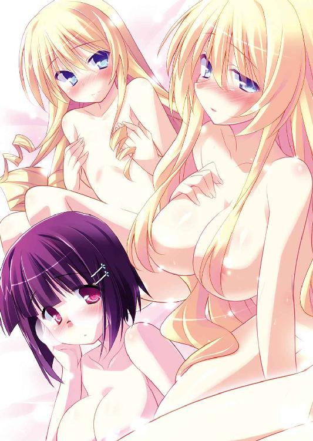
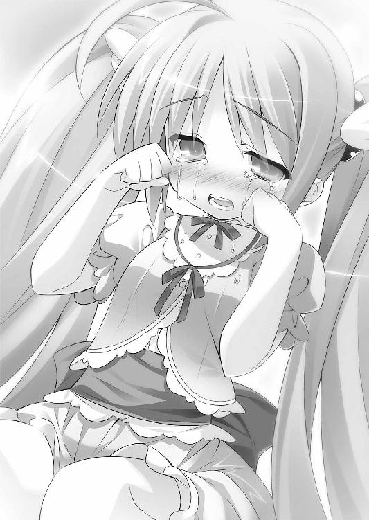

| Ｈ＋Ｐ11 －ひめぱら－ (富士見ファンタジア文庫) | |
| 風見 周 | |
| 富士見書房 (2012) | |


Ｈ＋Ｐ
─ひめぱら─
風見 周

富士見ファンタジア文庫
本作品の全部または一部を無断で複製、転載、配信、送信したり、ホームページ上に転載することを禁止します。また、本作品の内容を無断で改変、改ざん等を行うことも禁止します。
本作品購入時にご承諾いただいた規約により、有償・無償にかかわらず本作品を第三者に譲渡することはできません。
本作品を示すサムネイルなどのイメージ画像は、再ダウンロード時に予告なく変更される場合があります。
本作品は縦書きでレイアウトされています。
また、ご覧になるリーディングシステムにより、表示の差が認められることがあります。
口絵・本文イラスト ひなた睦月
目 次
プロローグ
「ああっ...... ひぁっ......」
ひぁっ......」
ウィッチェリア大陸の最北部。猛吹雪と分厚い氷とに閉ざされ、地図にすら記されていない極寒の地。
永久凍土に穿たれた洞穴の奥深くから、悲鳴と嬌声が入り交じった声が漏れていた。
「んぐっ...... ああっ......」
それはまるで、処女雪に血液を垂らしたかのように。
壁も、床も、天井も、そして、玉座も──全てが純白に輝く氷によって作られた部屋に、赤いボンデージルックを纏った美女が跪いていた。
赤銅色の肌。炎のような赤髪。紅月の色合いを持つ赤眼。ケルベロスの舌よりもなお赤い唇。
髪から突き出た羊を思わせる角以外は、なにもかもが血色に染まった美女が玉座へとすり寄る。
氷の玉座には、少女のカタチをした氷像が座っていた。ふんだんにレースのあしらわれた、豪奢な氷のドレスを纏っている。狂った彫刻家が一生涯を掛けて彫り抜いたかのような精緻さだ。
しかし、氷像の眼窩には何もない。ただぽっかりと穴が空いていた。
「愛しき愛しきお方......。ディルケーの全てをお奪いくださいませ......」
ボンデージルックをはだけ、ディルケーと名乗った美女は見事なボディを惜しげもなく晒す。
柔らかく揺れた胸を、氷像に押しつけた。
「ああっ......」
ディルケーは一際大きな嬌声を上げた。最高の快楽と地獄の責め苦を一度に与えられたように、美女の顔がだらしなく歪む。頰は紅潮し、赤銅色の肌がさらに赤くなった。
「もっとぉ......もっと奪ってぇ......」
氷像に抱きつき、美女はみだらな動きで腰を揺らす。ビクビクと肩が震えていた。
腰をグラインドさせるたびに氷の少女にまとわりつく霜がゆっくりと融けていく。
我慢ができなくなったみたいに、ディルケーは赤い唇を氷像の唇に押し当てた。
「はぁ...... 来たぁ......」
直後──ぢゅるぢゅるぢゅるぢゅる。
乾ききった氷の部屋に肉を裂く湿った音が響き渡った。
少女の小さな唇にディルケーのカラダが吸い込まれていったのだ。
肌も血も、肉も骨も。液体のように少女の唇にすすられていく。
全てを吸い尽くし、再び氷の洞穴に静寂が戻った。
だが、数瞬後──変化が起こる。
空洞であった少女の眼窩。その左目に赤い光が宿ったのだ。
少女の氷像の胸元に小さな亀裂が入り、蜘蛛の巣が広がるようにヒビが広がった。激しい音を立てて氷が砕け散る。
氷像の内部から、ゆっくりとそれが姿を現した。
氷の結晶に共鳴し殷々と声が響き渡る。
──おなかが すいた。
人類を滅亡の危機へと追いやった、伝説の魔物。
サキュバスの女王、レネゲイド。
その封印が、今まさに解かれたのだ。
第一話 ラブラブちゅっちゅウィーク！
──んちゅっ
朝。トレクワーズ王国の後宮。ベッドの上。
唇に柔らかな感触がして、神来恭太郎は目を覚ました。
ゆっくりとまぶたを開き──ぬおわっ!?
思わず悲鳴をあげそうになってしまう。
黒髪をショートカットにしているメガネ美少女。第四王女のアルト・ファローズ・トレクワーズの顔が眼前にあった。
ぎゅっと双眸を閉じ、微かに肩を震わせて。恭太郎の唇に自らの唇を押し当てている。
そう、アルトは恭太郎にキスをしていたのだ！
「はゎっ、お目覚めになったんですね」
アルトは飛び退るようにカラダを離した。
ベッドに横たわる恭太郎の傍らに正座して、ズレてしまったメガネを直す。
「恭太郎さま、おはようございますぅっ」
「お、おはよう......」
ドギマギしながら、恭太郎も上半身を起こした。
唇にはまだアルトの唇の感触が残っている。
「い、いきなりだったから、びっくりしちゃったよ」
「驚かせてしまいましたか。すみませんごめんなさいっ許してください」
王女さまは申し訳なさそうに、幾度も頭を下げた。
トレクワーズ王国の王宮には時計がない。だから、正確な時間はわからないが......窓から差し込む朝日の加減から推測するに、まだ夜が明けたばかりだろう。
「謝る必要はないよ。最近鈍り気味だから、早めに起きてたっぷりと剣の素振りをしたいと思っていたところなんだ。起こしてくれてちょうどよかった」
フォローを入れてあげると、アルトはホッとしたように胸を撫で下ろした。
そこで、気付く。
「ところで、その格好は......？」
王女さまは、一言で言うならウェイトレスさんの格好をしていた。
やけに胸が強調されたオレンジ色のワンピース。ミニスカートから伸びたムチムチなふとももが色っぽい。恭太郎は行ったことがないけれど、アンナ○ラーズってファミレスの制服に似ている気がした。高校の頃のクラスメイトが「あれはよいものだ」と熱く語っていたのを覚えている。アルトちゃんは控えめな性格に似合わず胸が大きいから、よく似合っていた。
服によってくびり出されている巨乳を隠すように胸元に手を当てて、王女さまははにかんだ。
「こ、この本を参考にしてみたんです」
アルトは鮮やかなピンク色の表紙の本を両手で差し出す。
タイトルは『お世継ぎづくりが楽しくなる！ キスの技法・ベスト一〇〇！』
著者名は──ピコル。
ピコル師匠が執筆した、後宮の王仕さま向けのキスの指南書。このところ恭太郎を悩ませて続けている恐ろしい書物だ。
王女さまは初めの方のページを開いた。
☆キステク・Ｎｏ３！『おはようのキス』
眠り姫を目覚めさせるために有効な方法といえば、一つしかないのじゃ。
そう、おはようのキスじゃな！
ネボスケなお姫さまに目覚めのキスをお見舞いすれば、素敵な一日のはじまりはじまり。王女さまは朝っぱらからドキドキモードになっちゃうに違いないのじゃ！
「ピコルさまにいただいた指南書によれば、おはようのキスをする場合は、ついでに朝の身支度を手伝って差し上げるのが効果的なんだそうです。『王仕の身の回りの世話をするなら、メイド服に着替えるのが一番喜ぶのじゃ！ でも、たまには雰囲気を変えてウェイトレス風というのも乙なものなのじゃ！』とのことで......」
なるほど。ピコル師匠が書きそうな内容だ。
あの人はコスプレさせるのが大好きだよな......。
「そんなワケで、お着替えなどを手伝わせてくださいっ」
「大丈夫だよ。それぐらい一人でできるし。なんだか申し訳ないよ」
「いいえ、やらせて欲しいですぅっ」
アルトはベッドの上を這い寄ってきた。
恭太郎を上目遣いに見つめて、恥ずかしそうに口を開く。
「わ、わわわ、私は恭太郎さまが......その......す、すすす、好きなんです。女の子にとって、す、好きな男の子のお世話ができるのは幸せなことなんですよ」
キョドってはいるものの、王女さまはハッキリと『好き』と口にした。
照れくささのあまり、恭太郎の体温が一気に上昇する。顔が火照ってしまった。
アルトちゃんは地味めな雰囲気の女の子だから、《トレクワーズの五美姫》においてはあまり目立たないポジションと言えよう。
しかし、実際には、とんでもない美少女なのだ。中学三年生として日本の学校に通っていたら、クラスで一番の美少女と呼ばれていたに違いない。
そんな可愛い女の子に面と向かって『好き』なんて言われたら、そりゃあドキッとするに決まってる。
四つんばいのまま、さらに顔を近づけてくる。
恭太郎の吐息でアルトのメガネが曇ってしまいそうな距離で見つめ合った。
「もう一回、おはようのちゅー、してください......」
時間にして、一秒ほど。ほんのわずかに恭太郎は逡巡した。
『そんなことはできないって！』という言葉がノドまで出掛かる。
しかし、セリフを飲み込んで、恭太郎は唇を引き結んだ。
「......わかった」
意を決したように一つ頷き、ゆっくりと顔を近づけていく。
そして、アルトの唇に自らの唇を重ねた。
キスというには、あまりに無造作な口づけ。ただ唇を押し当てただけだ。
でも、恭太郎の心臓は爆発しそうなぐらいに高鳴った。緊張のあまり、口の中がカラカラに渇ききっていた。水を一杯飲みたい。いや、できることなら滝行がしたい。
「こ、これでいいかな？」
「あのっ、そのっ、こーゆーキスもうれしいんですが......」
アルトは両手の人差し指を突き合わせて、上目遣いにおねだりしてくる。
「も、もっと激しいちゅーがいいなぁなんて、思ったりなんかして......」
激しいキスというと......ディープなキスがいいってことか？
「ダメですか？」
恭太郎は反射的に首を横に振ってしまった。
「そ、それはマズいっていうか......別にできないってワケじゃないけど、ほ、ほら！ 俺は起き抜けだろ？ 口の中も汚いだろうし、今はやめておいた方がいいと思うぞ！」
「そうですよね......」
「よかった。わかってくれたか......」
「それでは、朝の身支度を先に済ませましょう。ご褒美はその後で頂きますぅ♪」
「いや、そういう意味じゃなくてね!?」
ベッドから飛び降りたアルトは、フラメンコダンサーみたいに手を叩いた。
「ペトロシュカ、準備お願い！」
『ケッ、朝っぱらカラ人使いが荒いご主人サマだゼ......』
悪態の聞こえた直後、勢いよくドアが開け放たれる。
電話ボックスほどのサイズがあるだろうか。鋼鉄製の箱に目鼻をつけ、ペンチみたいな腕＆キャタピラを装着したマシンが部屋に入ってきた。
後頭部についてるコックピットで、銀髪の可愛らしい人形がレバーを操作している。アルトがつくったお茶くみ人形のペトロシュカだ。アルトとお揃いのウェイトレスっぽい衣装に身を包んでる。
ペトロシュカはお茶の注ぎ口にもなっている口元をカタカタ鳴らした。
『オレは低血圧なんダ。朝は苦手だから働かせルなヨ......』
「ほえ？ ペトロシュカはからくり人形じゃない。血圧は関係ないと思うけど？」
『朝方はお茶の温度が下がるんダヨ！ オレを作ったクセにそんなコトもわからナイのカ！』
怒ったように口から蒸気が噴き出したお茶くみ人形に、アルトは謝った。
「ご、ごめんね。お茶の温度が一定に保たれるように今度改造してあげるから！」
『オウ、よろしク頼むゼ！ いつデモ熱々のお茶を出しタイからナ！』
からくり人形に真剣に謝罪するアルトのようすが可愛くて噴き出してしまいそうになりつつ、恭太郎は尋ねる。
「アルトちゃん。その仰々しいマシンはなんなんだ？」
すると──きらりんっ☆──王女さまのメガネのレンズが輝いた。
「全自動身支度マシン！ その名もピョートルです！ ボタン一つで朝に必要な身支度──歯みがき、洗顔、シャワー、着替え、髪のセットを行ってくれる優れものなんですよ！ 恭太郎さまのために夜なべして作ったんですぅ！」
アルトの顔は自信満々だ。いつもは気弱な王女さまだけど、得意のメカ作りに関してだけはキャラが変わるんだよな。
恭太郎の顔を一瞬だけ見やり、第四王女は頰を染めた。
「......身支度が終わったら、ご褒美くださいね」
「あ、いや、それは、なんていうか、ちょっと──」
「ピョートル起動！ スイッチオン！」
『ぽちっとナ！』
アルトの声に合わせて、ペトロシュカがコックピットのボタンを押した。
ピガ～～～～っ!!
ピョートルの両目が光り輝いたかと思ったら、ペンチみたいな手が伸びてきて恭太郎は持ち上げられてしまった。箱形の胴体が左右に開き中へと放り込まれる。
「うおおおおおっ!?」
その後の記憶は、少しばかり曖昧だった。
温水のシャワーを浴びせられ、ボディーソープやシャンプーをぶちまけられ、口には歯ブラシを突っ込まれて。
まるで洗濯機に放り込まれたみたいに揉みくちゃにされた。
幼い頃、姉の桜子に『獅子は我が子を千尋の谷に突き落とすといいます。恭太郎も神来家の嫡男に相応しい男となるため、自力で這い上がってきなさい！』なぁんて言われて荒れ狂う濁流へと突き落とされたことがあるが、あの修行を彷彿とさせる状況だ。
「ごばごばごぼごべ!?」
水流によって前後不覚に陥りつつも──王仕さまは思った。
ああ、カルタギア帝国からトレクワーズへ戻ってきてからの二週間は、まさにこんな感じだったなぁ......。
急流に押し流されるかの如き怒濤の勢いでさまざまな出来事が起こったんだ。
走馬灯のようにトレクワーズに帰還してからの出来事が浮かんでくる──。
王国へ戻るなり恭太郎に襲いかかってきたのは、さまざまな祝賀行事だった。
帝国によってさらわれてしまった神来恭太郎を《トレクワーズの五美姫》が無事に救い出した。
さらには、カルタギアに囚われていた二〇〇〇人の王仕さま候補の少年たちも解放されることとなった。
恐らく、サキュバスによって魔力を奪われたために利用価値がなくなったためだろう。引き渡しには時間が掛かりそうだが、無事に家族との再会を果たせそうだ。
次々と舞い込む朗報にトレクワーズ全土が歓喜に沸いた。
王宮では祝いの宴が催され、首都トレクロでは祝賀パレードまで行われたのである。
恭太郎もパレードに参加させられ、大変に照れくさい思いをした（ユフィナたちと違って、馬車から民衆に笑顔で手を振るなんて行動には慣れていないのだ）。
連日行われる祝賀行事に翻弄されていた恭太郎の身に、さらなる驚愕が訪れた。
アルトとメルルの二人が、相次いで『恋の告白』をしてきたのだ。
あれは帰還して、四日目の夜のこと。祝賀パーティの最中にアルトちゃん＆メルルちゃんに、大広間のベランダへと呼び出された。
遠く聞こえる乾杯と宴の喧噪。陽気な音楽と歓喜の歌声。
月夜を華々しく彩る、大輪の打ち上げ花火。
そして、パーティに出席するために美しくドレスアップした二人のお姫さま──。
朴念仁の恭太郎でさえ、映画のワンシーンみたいにロマンティックだと感じた。
そんなシチュエーションで語られた二人の告白の言葉を、恭太郎は生涯忘れられないと思う。
──お姉さまたちが、カルタギアで恭太郎さまに告白をしたって聞いて......。このままじゃ、気持ちを伝えることすらできなくなってしまう気がして......。だから、言わせてください。
わ、私は、その......恭太郎さまのことが好きなんですぅっ。
恭太郎さまがこの国に来てすぐのこと、覚えていますか？ カルタギアの兵士から私を助けてくださいましたよね？
あの瞬間に、恭太郎さまに一目惚れしてしまったんです......。
私はお世継ぎはつくれません。だから、恭太郎さまと結ばれることはないと思うけれど......私の想いを知って欲しかったんですぅ（涙）。
──みーんな告白っちゃったのに、メルルだけ仲間はずれなんてヤダもんね！ メルルも言わせてもらうよ！
恭太郎おにいちゃんのこと、大・大・大～～～好きっ
ユフィナおねえちゃんも、レイシアおねえちゃんも、エリスおねえちゃんも、アルトおねえちゃんも。女王陛下もピコル師匠もアレスタくんも。
メルルはみんなが大好きなんだよっ！
これからも明るく楽しく元気よく、恭太郎おにいちゃんとえっちぃコトをいっぱいしたいな～♪
これで《トレクワーズの五美姫》の全員から告白されてしまったことになる。
恭太郎は色恋沙汰には疎い。ユフィナたちが祝賀行事に追われているうちはまだしも、これまで通りの後宮生活が戻ってきたら、どんな顔して彼女たちと接したらいいのか......まるで見当もつかなかった。
そして。
恭太郎を最も狼狽させたのは《後宮のヌシ》であるピコルの言葉であった。
祝賀行事も一段落した、ある日のこと。
恭太郎はピコル師匠に『教官室』に呼び出された。教官室はピコルが指導に使っている、後宮の一室である。
教官室のドアを開けた瞬間、恭太郎は表情を引き締めた。
教壇にいた師匠はあまりにも深刻な顔で腕組みをしていたのだ。
ピコルは床にも届くほど長い銀髪を持つ一〇歳ぐらいの幼女──にしか見えないが、実際は数百年間も王国に仕える重臣。そんな彼女が切羽詰まった表情をしていれば、『トレクワーズにとって、よからぬことが発生した』と察するにあまりある。
教官室には、高校の教室のような机と椅子が並んでいる。椅子の一つに腰掛けつつ、恭太郎は尋ねた。
「......なにかあったんですか？」
「うむ。最悪の事態が起こったのじゃ......」
授業をする教師みたいな感じで教卓の前に立ったピコル師匠は、血を吐くような苦しげな口調で続けた。
「......サキュバスの女王・レネゲイドが復活を果たしたようじゃ!!」
サキュバスとは男性の魔力を奪う怪物だ。
太古の昔。女性だけではなく、男も魔法を使うことができたらしい。
強大な魔法を使いこなす王が国を牛耳っていたのだそうだ。
しかし、そんな《魔法使い》の時代は突如として終わりを告げる。世界中の男から、魔力が奪われてしまったのだ。
レネゲイドによって、この世から魔法が消えてしまうかと思われた。
しかし、《六人の勇者姫》と呼ばれる少女たちが彗星の如く現れ、サキュバスの女王に立ち向かった。
苦戦の末、《六人の勇者姫》はレネゲイドを封印することに成功し、世界は平和を取り戻したのである。
これはウィッチェリア大陸に住まう人なら誰でも知っている伝説だそうだ。
「セグレタは倒したじゃないですか。あれでレネゲイドの復活は阻止できたんじゃないんですか？」
大陸のどこかに封印されているレネゲイドは、復活を期して忠実なる僕《淫魔の右目》セグレタを放った。
セグレタに魔力を集めさせることで、封印を解こうと考えたようだ。
最強の魔力を持つ王仕さまである恭太郎も狙われた。【魅了】とかいう魔法を掛けられ、魔力を根こそぎ奪われそうになったのである。
ユフィナたちや帝国の女帝カリギュラが【魅了】を解いてくれたおかげで、なんとかセグレタを倒すことに成功したはずなのだが......。
ピコル師匠は教鞭を握りしめ、悔しげに歯嚙みする。
「吾もそう思っておった。じゃが、レネゲイドの放った僕は一体ではなかったのじゃ。《淫魔の左目》と呼ばれるサキュバス、ディルケーが大陸の北方地域の国々で暗躍しておったようなのじゃ。後宮が襲われ、王仕さまたちが魔力を根こそぎにされたそうじゃ......」
ウィッチェリア大陸には、たくさんの国家が存在する。トレクワーズと国交がある国だけでも一〇〇に近い数があるそうだ。
どの国も高い魔力を持つ女性の為政者が国を治めており、お世継ぎづくりのために魔力を持った少年たちを集めた後宮を作っている。その後宮が狙われたのだろう。
「ディルケーの行方はわかっておらぬのじゃ。恐らくは、既にレネゲイドに魔力が渡ってしまったことじゃろう......。封印が解けるのも時間の問題じゃろうな......」
「もしも、レネゲイドが復活したら......どうなるんです？」
「世界は破滅じゃ」
きっぱりと師匠が言い切った。
背中に氷を放り込まれたみたいに、恭太郎は背筋が冷たくなる。
「人間は滅ぼされちゃうってことですか......？」
「いや、レネゲイドによってウィッチェリア大陸は支配されてしまうじゃろう。サキュバスの奴隷として人々は生きていくことになるのじゃ」
サキュバスは魔力を喰らう化け物。強大なパワーで人間たちを牛耳り、魔力を生み出す『家畜』にするのが目的だろう、とピコル師匠は語った。
「そんなこと、絶対に許せませんよ......!!」
恭太郎は机を拳で叩いた。カラダに流れるサムライの血がふつふつと沸き上がる。剣の道に生きる者として、悪がのさばることなど看過はできない。
「封印することはできないんですか？ 大昔に一度、レネゲイドを倒しているワケですよね？」
「うむ。《六人の勇者姫》によって封印されておるのじゃ。現代において《六人の勇者姫》に相当する魔力を持っているのは、《トレクワーズの五美姫》以外にはあり得ないと吾は思っているのじゃ。姫さまがたの魔力は、大陸随一じゃからのぅ」
自慢げな表情になって、ピコル師匠はうむうむと頷く。
「よかった......。対抗する手段はあるんですね......」
もちろん、ユフィナたちだけに戦わせるつもりはない。
いざとなったら恭太郎も助太刀するつもりだ。
セグレタを屠ったのは、俺の剣だからな。サキュバスの女王にだって、俺の攻撃が通用するかもしれない。
しかし、後宮のヌシは眉をひそめた。
「残念ながら今のままではレネゲイドに対抗することは不可能なのじゃ......。姫さまがたには足りないものがあるのじゃよ......」
「足りないもの......？」
「うむ。しかも、それは恭太郎にしか与えることができぬものなのじゃ」
「一体、それはなんですか？」
世界が危機に晒されているのだ。今さら尻込みなんてできるものか！ 俺にできることなら、なんだってしてやるさ！
「姫さまがたに足らぬもの──それは『男性経験』なのじゃ!!」
「................................................はい？」
「聞こえなかったか？ 男性経験じゃ。キスとか、チチ揉みとか、えっちとか......男と女がするラブラブちゅっちゅ全般のことじゃな」
昂ぶっていた恭太郎の魂が、シオシオと音を立てて萎えていく気がした。
強大な敵に如何にして立ち向かうかという話をしていたはずなのに、気付けばいつも通りのエロ展開じゃないか......。
剣士として活躍できるチャンスは、俺には永遠に来ないのかな......。
机に突っ伏しつつ、後宮のヌシに問うた。
「どうして、そんなものが必要なんですか？ 前後の繫がりが一切不明なんですが......」
「サキュバスの女王レネゲイドが操る【魅了】の魔法は、セグレタが使ったものよりも強力じゃ。なんと、男だけでなく婦女子からも魔力を奪い去るのじゃよ」
「それじゃ、普通に戦ったらユフィナたちの力までレネゲイドの手に渡ってしまうんですね......」
「左様。それを防ぐ唯一の方法が、男を知ることなのじゃ。生娘には淫魔を倒すことができぬ。レネゲイドを屠った《六人の勇者姫》は、サキュバスに対抗するために大賢者ガレオンと秘密の儀式を行ったと文献には記されておる。秘密の儀式とは、すなわちアレのコトじゃな」
「なんて迷惑な伝承だ......！」
「恭太郎。レネゲイドを倒すため、姫さまがたとえっちをして欲しいのじゃ」
「ムチャを言わないでください！ 妻でもない女の子とそんなことできません！」
今でも耳を澄ませば、姉上の声が鮮明に聞こえてくる。
『男女七歳にして席を同じうせずですよ！』
『運命の相手と一生を添い遂げることこそ、本懐というものです！』
『ふしだらなことをしたら許しませんよ、恭太郎ッ!!』
複数の女の子に手出しをしたと姉上に知られたら伝家の宝刀《神斬り》で、三枚におろされてしまうに違いない。
恭太郎の返事がわかっていたかのように、ピコル師匠は頷いた。
「おぬしはカタブツ男じゃからな。姫さま全員とえっちするのは無理じゃろう......」
師匠は白いローブの裾を引きずって、教壇から降りた。
「しかし、おぬしに頼むほかないのじゃ！」
そして、ゆっくりと教官室の床に膝を折った。
床に額を擦りつけて頼み込んでくる。
なんと、恭太郎に土下座をしたのだ。
「この通りじゃ、恭太郎！ 姫さまがたに手をつけてくれ！」
「や、やめてくださいよ！」
慌てて立ち上がって、恭太郎はピコルの手を取った。
姉上から『年寄りは労れ』『婦女子は守れ』『幼子は慈しめ』と教わった。八〇〇歳（外見は一〇歳）のピコル師匠に土下座させるなんて、三つの教えに同時に反した気分だ。
「頭を上げてください！ 師匠らしくないですよ！」
普段のピコルならば、妙ちきりんなマジックアイテムを使って、恭太郎を強制的にえっちな状況に追い込んでくるところだ。
ストレートに。ただ愚直に。土下座をしてまで頼み込んできたことなんて、これまでに一度もなかった。
「此度は人類の命運が懸かっておるのじゃ！ なりふりなんて構っていられぬのじゃ！」
師匠はお世継ぎづくりの指南書において、『楽しさこそが大切じゃ』と説いている。楽しい雰囲気でお世継ぎづくりをしてこそ、魔力が強い子どもが生まれるという理論を提唱しているのだ。それを体現するかのように、どんなに危機的状況にあっても、ピコルの言動にはどことなく遊び心みたいなものが感じられた。
しかし、今はそれがない。ピコルの言葉は、あまりにも真剣だった。
レネゲイドが復活したら、本気で世界がヤバいんだな......。
恭太郎の手を振り払い、ピコルはもう一度頭を下げた。
「どうか、頼む！ 全員とえっちをするのが無理なら、せめて五人とちゅーだけでもして欲しいのじゃ！ それでもレネゲイドに対抗できる確率はあがるじゃろう！」
「ぜ、全員とキスなんて......」
えっちをするよりも、幾分難易度は下がっている気はする。
しかし、カタブツな恭太郎にとっては、『強盗するのがイヤなら、万引きをしてこい！』と言われたみたいなものだ。どちらも犯罪であることには変わりはない。
「恭太郎。おぬしは妻と決めた相手とならえっちをするんじゃな？」
「それは、まあ、そうですが......」
「ならば、姫さまがたのうちのお一方でいい。どなたか一人と婚ぐのじゃ！」
婚ぐとは、えっちをするという意味だ......。
「恭太郎と結ばれれば、その姫さまはレネゲイドと戦えることじゃろう！」
暴れ馬を落ち着けるように、両手を前に突き出して、
「ちょ、ちょっと待ってください！ たとえ世界を救うためでも、ユフィナたちの気持ちは無視できません！ 好きでもない相手と、そんなことをするなんて......」
言いかけて、恭太郎は口をつぐんだ。
いや、違う。お姫さまたちは全員が俺に告白をしてきたんだ。
ユフィナも、レイシアも、エリスも、アルトもメルルちゃんも。
みんなが俺を好きと言ってくれているんだよな......。
「姫さまがたの尽力で恭太郎に掛けられた【魅了】の魔法を解くことができた。魅了は相思相愛でなければ打ち破ることができぬ。恭太郎も、姫さまがたを憎からず想っているという証左なのじゃよ。そうじゃろう？」
「............」
答えることができなかった。
もちろん、お姫さまたちのことは嫌いではない。
だけど、『好きだ』と明言することには抵抗があった。貞操観念の強い恭太郎にとって、婦女子への想いを口にするのは憚られることなのだ。
ピコル師匠は顔を上げた。真っ直ぐに恭太郎を見つめてくる。
国を憂う重臣に相応しい、悲壮な決意に満ちた表情だった。
「二〇〇〇人の王仕さま候補の少年らは、全員が魔力を失った。トレクワーズにはもはや、王仕さまは恭太郎しかおらぬのじゃ。どのみち、恭太郎にお世継ぎをつくってもらわねば、トレクワーズ王国の一〇〇〇年の歴史に幕が下りてしまうのじゃ」
もう一度、深々と頭を下げる。
「サキュバスに対抗するために......この世界を滅ぼさぬために、姫さま全員とちゅーをするのじゃ！」
床に額を擦りつけて、師匠は続ける。
「そして、我が国の未来のためにも......姫さまのうちの一人を娶り、えっちをして欲しいのじゃ！ この通り！ 伏してお願いするのじゃ～～っ!!」
しばらくの間、恭太郎は無言で立ち尽くしていた。
どのくらいそうしていただろう。
ピコル師匠に歩み寄り、目の前で膝を折った。《後宮のヌシ》の手を取って。
「土下座なんて、もうやめてください」
「おぬしが首を縦に振るまでは、やめるワケにはいかぬのじゃ！」
「............やりますよ」
もはや、逃げ隠れできる状況じゃない。覚悟を決めるしかないのだ。
「本当か!? よく言ったのじゃ、恭太郎！」
ピコルは恭太郎の手を握り返してくる。銀色の瞳に微かに涙が滲んでいた。
小さく唇を嚙んだ後で、恭太郎は口を開く。
「ただ、誰とその......そーゆーコトをするのかは少し考えさせてください」
恭太郎にとって『えっちをする』というのは『妻にする』というのと同義なのだ。おいそれとは決められない。
「いつレネゲイドが復活するかはわからぬ。じゃが、一週間程度の猶予はあるじゃろう。ディルケーが出現したのは遥か北方の地域じゃからな」
床に正座したまま、ピコル師匠はポンと手を叩いた。
「では、こうしよう！ 今日から一週間、姫さまがたとちゅーをしまくるのじゃ！ キスを迫られた場合は、絶対に断ってはならぬぞ！ そして、最終日の夜に、誰か一人を決めてえっちをするのじゃ！ 題して、『お嫁さんになっちゃうのは誰だ!? ラブラブちゅっちゅウィーク！』なのじゃっ！ ついに恭太郎も年貢を納めるときが来たのじゃ、ふゥはははは～～～～っっっ!!」
高笑いしながら立ち上がろうとして、ピコル師匠は前のめりに倒れそうになる。
「痛たたたたっ!? 足が痺れたのじゃ!?」
──ピガ～～～～っ!!
奇妙な音が聞こえて、恭太郎は我に返った。
全自動身支度マシンであるピョートルの胴体部分が開き、マニピュレーターアームによって外に放り出される。
「うおっと!?」
目が回っていたせいもあって倒れそうになった。白大理石の床の上でよろめきつつも、なんとか踏みとどまる。
「バッチリですよ、恭太郎さまっ」
ウェイトレス風の衣装を身に纏っているアルトが歓声をあげた。
『ホレ、鏡だゾ。見てみロ』
ペトロシュカがピョートルを操作。ペンチのような腕が大きな鏡を差し出してきた。
「おお、これはすごいな！」
鏡に映った恭太郎はアイロンの利いたシャツに着替えており、普段は手入れをしない髪もバッチリ整えられていた。綺麗に磨き上げられた歯は目映く輝き、ご丁寧にドレスシャツの胸元にはバラの花まで飾られている。このままパーティにだって出席できそうだ。
さすがは、アルトちゃんが作ったマシン。性能は抜群だな。扱いが乱暴だったのが玉に瑕だけど。
「す、すすす、素敵だと思いますぅ」
モジモジと手を組み合わせながら、アルトが近寄ってきた。ちょっぴり頰を染めて上目遣いに見つめてくる。
「ありがとう。おかげでいろいろと手間が省けたよ。修行の時間が長くとれそうだ」
「あ、あのっ......ご褒美の時間も長めだとうれしいです」
......キスをして欲しいってコトだよな。
「わ、わかった......」
小さく頷いて、恭太郎はアルトの前に寄り添うようにして立った。
王女さまの体温やフローラルなシャンプーの香りを感じる。
メガネをそっと外してあげた。
「ペトロシュカ、後ろ向いててね......」
王女さまはまぶたを閉じて、背伸びをした。微かに唇を尖らせる。
可愛らしいキス顔に鼓動が高鳴るのを感じながら──恭太郎は唇を押し当てた。
アルトのピンク色の唇は、不思議な柔らかさだ。グミキャンディよりプルプルで、プリンよりも弾力がある。今までに感じたことのない感触である。
「......んぅっ」
唇を触れ合わせただけなのに、王女さまの頰はお風呂に入ってるみたいに朱に染まった。
「......恭太郎さまぁ」
ほんの少し唇を離した王女さまは、催促するみたいに微かに口を開く。
わずかな躊躇いの後で、恭太郎はアルトの唇に自らの舌を差し入れた。不器用にお互いの柔らかな部分を絡ませあう。
いわゆるディープキスというヤツだ。
もちろん、キスの仕方なんてわからない。ただ、お姫さまたちと試行錯誤をして覚えている真っ最中だ（キスなんて上手になっても困るけど！）。
初心者のキスでも、王女さまたちは不快には思ってないみたいだ。
むしろ、気持ちいいと思ってくれてるのかもしれない。
「......んゃっ ふぁっ」
溺れてしまいそうな吐息を漏らして、アルトは恭太郎の背中に手を回してきた。
しかし、唇を離そうとはしない。『もっとしてください』とおねだりするみたいに唇を開き、恭太郎の舌を受け入れようとする。
柔らかい部分が触れ合うたびに、王女さまは肩を震わせた。
「......あんっ んんっ」
っていうか、声が色っぽすぎるよ、アルトちゃん！
ただでさえ、激しいキスをして興奮しているのだ。あまりえっちな声を出されたらムラムラしちゃうだろ!?
恭太郎の中に巣くうケダモノが目を覚ましそうになる。ええい、落ち着け！ これはキスというか......そう、儀式的なものなんだ！ サキュバスの女王と戦うために必要な行為なんだからな！
必死に自分に言い聞かせるが、ドキドキは抑えられない。
アルトも我を忘れてしまってるようだ。
「恭太郎しゃまぁ......もっとぉ......」
むさぼるように恭太郎の口へも舌を差し入れてくる。
王女さまの舌先をくわえ、優しく吸ってあげた。
すると、激しい反応が起こった。アルトちゃんがカラダを震わせたのだ。
「それ、りゃめぇっ...... あっ、ふあっっっ......イ...くっ」
可愛らしい嬌声をあげて──くてっ。
恭太郎の胸に倒れ込んできた。ランニングをした後みたいに肩で息をしている。
「大丈夫かい？」
「はぁ......はぁ......」
顔をあげたアルトは、とろけたような表情になっていた。耳の先まで真っ赤に染まり、瞳は潤みきっている。
「恭太郎さま......」
アルトは恭太郎の胸元にギュッと抱きついてきた。大きな胸が押し当てられ、二つの膨らみを感じる。

「もう、どうにでもして欲しいですぅ......」
「って、なに言ってるの!? しっかりしてくれ、アルトちゃん！」
すると、感心したような声が頭上から降ってきた。
『ちゅーだけでメロメロにしチャウなんテ、恭太郎はてくにしゃんダナ』
ピョートルのコックピットに乗っているお茶くみ人形のペトロシュカが口から湯気を噴き出している。心なしかフランス人形みたいな顔がピンク色に染まってる。
「誰がテクニシャンだ！ 褒められてもうれしくないぞ！」
『いっそのコト、押し倒シちゃエヨ！ きっトアルトも喜ぶゼ、ＧＯＧＯ！』
お茶くみ人形に煽られても、恭太郎は言い返すことができなかった。
恭太郎の中のケダモノも『そうだそうだ！ 押し倒せー！』と叫んでいたのだ。ちょっとでも気を抜いたら、欲望に任せて襲いかかってしまいそうである。
えっちをするのは、一人だけ。
最終日の夜に決めるのだ。今はまだアルトちゃんを襲うわけにはいかないぞ。キス以上のことはしちゃダメだ！
自分に言い聞かせようとして、軽い目眩を覚える。
というか、本来はキスだってしちゃダメなんだけどな......。ごく普通に口づけをしちゃってるよ。しかも、とびきりえっちなディープキスをしまくりだよ。
姉上に知られたら、なます斬りにされるような気がしてならないなぁ......。
恭太郎は思わず遠い目をしてしまうのだった。
これが『お嫁さんになっちゃうのは誰だ!? ラブラブちゅっちゅウィーク！』がはじまって、二日目の出来事である。
×××
『アルトってさ......実ハかなりえろいヨナー？』
王宮の地下。工房。アルトの部屋。
派手なウェイトレスのワンピースのチャックを下ろし、上半身を脱いだところでペトロシュカがイタズラっぽい声をあげた。
「なななっ、なに言ってるの!? からかわないでよ！ ヘンなコト言ったら怒るよっ！」
脱ぎかけのワンピースを胸元で押さえながら、アルトは片手を振り上げる。
お茶の注ぎ口にもなっている口をカタカタと鳴らして、お茶くみ人形は笑った。
『ウケケケ、本当ノコトだロ？ アルトがかるたぎあカラ帰ってキテ以来、ひとりえっちの回数も増えテルみたいだシ』
「し、してないもん、そんなことっ！」
『それジャ、どうシてオレをちょくちょく箱ニしまうンダヨ？ ひとりえっちを見らレたくナイからだロ？』
かああああっ！──アルトの顔が真っ赤に染まってしまう。
そのリアクションは肯定してしまったのと同じだった。
「ち、ちちち、違うってばー！ 黙りなさい、ペトロシュカ！」
作業台に置かれているスパナやボルトをペトロシュカに投げつける。
生意気なお茶くみ人形は飛んできた工具を軽やかにかわして。
『それニサ、普通ハきすぐらいジャ、あんなにウフンアフン言わナイと思うゼ？ 恭太郎のちゅーは、そんナニ気持ちイイのか？』
「そ、それは私がえっちだからじゃないの！ ちゃんと理由があるんだよぅ！」
アルトは昨日の出来事を説明してあげた。
ピコルによって、王宮の会議室に《トレクワーズの五美姫》が全員集められたのだ──。
トレクワーズ王国。王宮。会議室。
中央に純白の大理石から掘り出された円卓が設えられており、壁には王家の紋章が飾られている。
なにもかもが純白に染まるこの部屋では、さまざまな重大事が話し合われてきた。
条約の締結などの外交問題や、地方領の独立などに絡んだ内政上の課題。めったに発生することはないが、亜人種による反乱を鎮圧するための作戦なども会議室で議題に上ったことがある。恭太郎奪還作戦が話し合われたのもこの会議室だ。
そして、今。
トレクワーズ王国の悠久の歴史において、もっとも深刻な会議が行われていた。
国家の──いや、ウィッチェリア大陸全体の存亡に関わる話である。
「レネゲイドの封印が解けた......？ それ、本当なの？」
第一王女のユフィナが問い返した。このところ祝賀パーティに出席しており、お姫さまっぽいよそ行きの笑みを浮かべ続けていたユフィナの顔が、氷水を掛けられたように強ばる。
ドレスがはち切れそうなほどに膨らんだ胸の前で手を組み合わせて、レイシアは頷く。
「はい。私もにわかには信じられませんでしたが......。北方諸国から来た情報を総合すると、その可能性は高い模様です」
大理石の円卓を平手で叩いて、第三王女のエリスが怒鳴った。
「セグレタは、この私がひねり潰したはずですわ！ どうしてサキュバスの女王が復活するんですの!?」
「吾が説明いたしましょう」
恭しく礼をして、傍らに立っているピコルが口を開いた。
淫魔の右目と呼ばれるセグレタが恭太郎を襲っているのと同時期に、《淫魔の左目》ディルケーが北方諸国を襲っていたらしい。
各国の王宮を襲って魔力を集め、レネゲイド復活に必要なパワーを手に入れてしまったようだ。
深刻な表情で眉をひそめた姉たちとは対照的に、末っ子のメルルは唇に手を当てて首を傾げた。
「んー、メルルも初等学校の授業でレネゲイドのお話を聞かされたけどぉ......みんなで力を合わせれば倒せるんじゃないかな？ もし攻めてきてもメルルが魔法でどーんってやったげるよ！」
「フン、メルルはセグレタと戦っていないからそんなことが言えるんですわ」
「カルタギアの女帝ですら、淫魔の右目には敵わなかったんですよ。奪われた恭太郎さまの魔力を取り返すことで、辛くも勝利をおさめたのです......。多くの男性から魔力を集めて強大な力を得てしまったら、私たちには歯が立たなくなってしまうでしょう」
双子の姉に窘められ、ようやくことの重大さに気付いたようだ。
「わっ。手下でもそんなに強いんだ！ それじゃ、サキュバスのじょーおーさまは、もっともっと強いんだろうね......」
「あ、あのっ！」
アルトが小さく手を挙げて発言をする。
「もしもレネゲイドが復活してしまったら、どうなってしまうんでしょうか？」
「この世界はサキュバスに支配されてしまうでしょうな......。レネゲイドは女性をも【魅了】する力がありますのじゃ......。この世界から魔法が絶えてしまうやもしれませぬのじゃ......」
「はゎゎゎゎゎゎゎゎ......！」
ピコルの言葉に、第四王女は震え上がった。黒髪のショートカットが揺れる。
怖がるアルトをさらに怯えさせるように、後宮のヌシは言葉を重ねた。
「復活を果たし、魔力を蓄えたレネゲイドは、早晩トレクワーズへと襲いかかってくるに違いありませんのじゃ。女王陛下の【大結界】でも、レネゲイドの襲撃を食い止めることはできますまい」
「どうしてウチに来るのよ？」
ユフィナの疑問に、レイシアが答える。
「......恭太郎さまがいるからですね」
「左様にございますのじゃ。恭太郎めは、最強の魔力を持つ王仕さま。あやつの力はサキュバスにとってはごちそうですのじゃ。必ずや奪いに来ますのじゃ」
「ふ、フン！ 恭太郎が【魅了】されたって問題ありませんわっ」
ちょっぴり頰を染めて、エリスはそっぽを向く。
「そのときは、このエリスさまがらぶらぶえっちに誘惑して恭太郎を正気に戻して差しあげますのっ！」
「そ、そそそ、そうねっ。私もちょっとだけなら頑張れそうな気がするっ」
躊躇いがちにユフィナも同意する。
だが、ピコルは首を横に振った。
「セグレタの【魅了】が解けたのは、奇蹟的なことなのですじゃ。二度も三度も成功するとは思えませぬ」
「それでは、いったいどうしたらいいのでしょうか......？ 恭太郎さまの魔力が奪われてしまえば、トレクワーズ王家はおしまいです」
眉をハの字にして、レイシアは小声で付け加える。
「恭太郎さまにもしものコトがあれば......レイシアは生きてはいられません......」
重苦しい沈黙が会議室に漂った。
沈鬱な空気を振り払うように、ピコルは円卓に歩み寄る。
「方法は、たった一つ」
白いローブを翻し、教鞭を握りしめた。
「レネゲイドと戦って勝利する──それしかありませんのじゃ!!」
「か、勝てるんですか？」とアルト。
ピコルは険しい表情を浮かべる。
「相手は伝説の淫魔ですのじゃ......。勝てる確率は二割もないでしょうな......」
「低いですわね......。負けるのは嫌いですのに......」
「しかし、これだけは言えますのじゃ。このウィッチェリア大陸において、サキュバスの女王を倒せる可能性があるのは姫さまがただけですじゃ」
椅子の背もたれにカラダをあずけるようにして、ユフィナは天を仰いだ。緊張したような吐息を漏らす。
「やるしかないってワケね......」
「もう一つ。姫さまがたには覚悟を決めていただく必要がありますのじゃ」
ゆっくりと王女さまたちを見渡して、後宮のヌシは口を開いた。
「レネゲイドと戦うためには男を知る必要が──平たく言えば、恭太郎めとえっちをすることが必要なんですじゃ!!」
「「「「「ええっ!?」」」」」
五美姫の驚きの声が重なった。
「ちょっと、なによそれ！ 意味がわかんないわよ!?」
「そそそ、そうですわ！ このところ恭太郎と顔を合わせることすらできませんのよ!? いかがわしいコトなんて、できるはずがありませんの！」
ユフィナとエリスが口々に抗議する。
しかし、ピコルが《六人の勇者姫》の伝承を引き合いに出して説明をすると、反論ができなくなった。生娘のままでは【魅了】の魔法に抗うことができないのだ。
「んもうっ......どうして、そんな迷惑な言い伝えが残ってるのよ。困らせようとしてるとしか思えないわ」
微かに頰を染めて、ユフィナは唇を尖らせた。
「仮に、レネゲイドを倒すためにはそーゆーコトをしなくちゃいけないとしても......私たちにはできなくない？ 恭太郎は、え、えっちなコトはしたがらないし」
「その点は心配に及びませぬのじゃ。恭太郎を説き伏せ、協力を取り付けましたのじゃ。世界滅亡の危機と知って決意を固めたようですのぅ」
「協力って......恭太郎さまがなにをしてくださるんですか？」
恐る恐る、アルトが確認をする。
「これより一週間、恭太郎は姫さまがた全員にキスをしまくりますのじゃ！」
「「「「「ええ～～っ!?」」」」」
またもや、お姫さまたちの驚愕の声が木霊した。
「き、キスと申しますと......唇と唇を合わせるアレですか？」とレイシア。
「接吻も男性経験に含まれますのじゃ。えっちには劣るとはいえ......しないよりはレネゲイドの【魅了】に対抗する力も高まりましょう。姫さまがたは、あやつめにたっぷりとキスをねだってくだされ。この期に及んでは、恭太郎も拒まないハズですのじゃ！ そして──!!」
ピコルは教鞭を振り上げて、高らかに言い放つ。
「一週間後の夜、恭太郎はこの中の一人と婚ぎまするのじゃ～～～～っっっ!!」
「「「「「ええ～～～～～～～～～～～～っっっ!?」」」」」
会議室を揺るがすほどの驚きが、お姫さまたちの口から発せられた。
「きょ、恭太郎が、この中の一人とえっちをしちゃうってコトですの......？」
「左様ですじゃ。あやつはカタブツゆえ、全員とえっちするのは無理なようですじゃ。そのため、姫さまがたのうちの一人を妻と定め、その方と一夜を共にすると約束してくれましたのじゃ！」
「恭太郎が、誰かを妻に......？」
ユフィナが呆然と呟く。レネゲイドが復活したと知ったときよりも、ショックを受けたような表情だった。
「さらにさらに、ですじゃ！ ここから先は、恭太郎には内密に願いたいのですじゃが......ぜひコレを召し上がって欲しいのですじゃ」
ピコルはローブの下からなにかを取り出した。円卓を回って、お姫さまたちの前に一つずつ置いていく。
「これは......ペロペロキャンディかな？」
メルルは円卓に置かれたものをつまみ上げた。
棒のついた小さなキャンディだ。ハート形のアメが虹色の紙で包まれている。
「わっ、ピーチ味だっ。結構美味しいね♪」
笑顔でアメを舐める妹につられるように、エリスも包み紙を無造作に破った。白いスティックにピンク色のアメ玉がついている。燐光を放つように、ぼんやりと輝いていた。
「フン、アメ玉なんて下品な食べ物、このエリス・レムリス・トレクワーズには似合いませんわ。でも、驚きすぎて疲れましたの。甘いものは疲労回復に効くといいますから、特別に舐めて差し上げますわ」
さっそくキャンディを舐めようとしたエリスに、ピコルが教える。
「これは《にゃんちゅーキャンディ》という魔法のアメですのじゃ。これを舐めた後にキスをすると性感帯に口づけされたかのように感じちゃいますのじゃ！ 恭太郎と舌を絡ませあったりしたら、そりゃあもう大変ですのじゃ。敏感なアノ部分をペロペロと舌で責めたてられたかのようなめくるめく快感が──」
「きゃあ！」と悲鳴をあげて、円卓の上にアメを放り投げる。
「そそそ、そんなヘンなもの出さないでちょうだい！ 危うく舐めるところでしたわ！ メルルもこんなもの食べちゃダメですわ！ ペッてなさい、ペッて！」
「嫌がらずに舐めて頂きたいのですじゃ」
後宮のヌシは頭を下げた。ふざけているようすはない。むしろ、真剣そのものといった表情だ。
「恭太郎とえっちができるのは一人だけ......。残る四人の姫さまは、キスしか経験せぬままレネゲイドと戦うやもしれませぬのじゃ。そこで、マジックアイテムの力で擬似的にえっちな気分を味わっておいて頂きたいのですじゃ。ちなみに、《にゃんちゅーキャンディ》というネーミングは『ちゅーだけでにゃんにゃんできちゃう、ふしぎなキャンディ！』の略ですじゃ。効果だけでなく、ネーミングセンスまで抜群のミラクルキャンディなのですじゃーっ！」
ドヤ顔で胸を張るピコル師匠をスルーして、ユフィナ、レイシア、エリス、アルトの四人はキャンディを見つめて押し黙った。
「世界のピンチだなんて、イマイチ想像がつかないけど......」
まずは、ユフィナがキャンディに手を伸ばした。
「もしもサキュバスが襲ってきたら......恭太郎が危ないのよね。あいつを守るためだもん。私、頑張るわ」
虹色に輝く包み紙を剝がした。ピンク色に輝くキャンディを口に運ぶ。
「恭太郎さまのためでしたら......」「仕方がありませんわね......」
顔を見合わせていた双子の姫も、薄紅色のアメを舐めた。
「はゎゎゎゎゎゎゎゎ......」
唇を震わせて躊躇い続けていたアルトも、意を決したように小さく頷いた。
「に、逃げちゃダメだよ。私も頑張らなきゃっ。......あむっ！」
包み紙をむしり取り、勢いよくキャンディを口に突っ込む。
五人の姫さまは、全員がキスだけで感じてしまう魔法のキャンディを舐めたのだ。
荘厳な雰囲気を持つ会議室で、純白のドレス姿のお姫さまたちがキャンディをしゃぶるという奇異な光景を感慨深げに眺めていたピコルは、再び頭を下げた。
「では、これより一週間、『お嫁さんになっちゃうのは誰だ!? ラブラブちゅっちゅウィーク！』と題しまして、恭太郎とキスをしまくってもらいますのじゃ！」
補足をするようにルール説明をするピコル。
「いくつか注意点をお伝えしておきますのじゃ。まず、ほかの姫さまのキスを絶対に邪魔しないようにしてくだされ。キスの仕方がわからない場合は、この本を読んでみて欲しいですのじゃ」
ローブの袖からピンク色の本を取り出し、五美姫に一冊ずつ配る。
タイトルは『お世継ぎづくりが楽しくなる！ キスの技法・ベスト一〇〇！』
ピコルが記したキスの指南書である。
「うわー、すごいよ！ ちゅーする方法が一〇〇種類書いてある！」
指南書をパラパラとめくって、メルルが感嘆の声をあげた。
「王仕さま向けに書いた本ですじゃ。じゃが、姫さまがたにも参考になると思いますのじゃ。恭太郎めと熱いキスを繰り返して、一週間を過ごしてくだされ。そして、最終日に五人のうちの誰か一人が恭太郎によって妻に選ばれると思いますのじゃが......誰が選ばれても恨みっこナシにして欲しいのですじゃ。『お嫁さんにしなさい！』とアピールするのは結構ですじゃが、ほかの姫を蹴落とすようなマネはやめてくだされ。これがキッカケで《トレクワーズの五美姫》の絆にヒビが入っては困りますからのぅ」
「......もちろんよ。そんなことはしないわ」
いつも元気はつらつとした王女さまには似つかわしくない神妙な表情で、ユフィナは返事をする。
「えへへー♪ 恭太郎おにいちゃんといっぱい気持ちいいちゅーをして～、その後は誰か一人がもっともっとラブラブになっちゃうんだよね？ とっても楽しそうな一週間になりそうだねっ！ おにいちゃんとい～～っぱいちゅーしちゃおっと！」
キャンディを口にくわえたまま、ちぃ姫さまがノンキな声をあげた。
しかし、姉たちのようすを見て首を傾げる。
「おりょりょ？ おねえちゃんたちは、あんまり楽しくなさそうだね～？ どうしちゃったのかな？」
ユフィナはポニーテールの先っぽを指でイジリながら。
レイシアは胸の前で女神に祈るように両手を組み合わせて。
エリスは眉根を寄せ、苛立たしげに円卓を指先で叩いて。
アルトは唇を小さく嚙み、微かに震えて。
年上の四人の姫さまは誰もが視線をそらし、思い詰めた雰囲気でうつむいていたのである。
回想終了。再び、アルトの工房。
お茶くみ人形のペトロシュカの口から、沸騰したヤカンのように湯気が噴き出した。
『すげエナ！ そんナとんでもナイあめ玉をナメてたのカヨ！』
着替えを再開した第四王女はオレンジ色のワンピースを脱いだ。
「うん。だから、恭太郎さまとキスしちゃったときに声が出ちゃったのも......私がえっちだからじゃないんだよ」
下着姿となったアルトは、木製の衣装箱を開く。お姫さまの普段着にしては野暮ったくて地味な色合いのドレスを取り出した。
王女さまが脱いだ衣装を畳みつつ、お茶くみ人形は『ウケケケ』と笑う。
『アルトがえっちじゃナイって理由ニハならナイな！ ナントカうぃーくがハジまっテから恭太郎とちゅーシまくってルじゃナイカ！ 気持ちイイコトしたいカラ、きすシテるんダロ？ この、えろアルトめ！』
「ちちち、違うってば！ そんなんじゃないよぅっ！ あんまりヘンなコト言うと、おしりの栓を抜いちゃうよ!?」
手近にあったモンキーレンチを摑んだ。
ペトロシュカはおしりを手で押さえて部屋の隅へと逃げる。
『うワア！ それダケは勘弁しテクレ！ お湯がコボれちゃウよ！ 無駄巨乳姫に殺サレる！』
「無駄巨乳ってなによぅ！ た、確かにおっきくてもあんまり意味ないけどっ！」
レンチを振り上げた動作でブラに包まれた大きな膨らみがぷるるんと揺れる。ここ最近、また胸が成長していた。バストサイズだけなら、ユフィナ姉さまよりも大きくなってしまったかもしれない。
『ウケケケ！ どうセなラ、恭太郎にちゅーのツイデに揉んデもらエばいいダロ！』
「で、できないよっ、そんなことっ！」
逃げるお茶くみ人形を追いかけようとしていたアルトは足を止めた。力なく振り上げていたモンキーレンチを下ろす。
「......私には、そんなことできないんだよ」
レンチを作業台に置き衣装箱へと戻った。ドレスに袖を通す。
「恭太郎さまにキスをしてもらってるのも......えっちぃコトがしたいからじゃないよ。も、もちろん、すっごく気持ちよくてクセになっちゃいそうなのは確かだけど......なんていうか、その......」
アルトは手の甲でメガネを上げて、小声で続ける。
「私には今しかないんだよ。今だけしか、ね......」
ペトロシュカは眉をハの字にした。彼女が動かせる数少ない顔のパーツを総動員して、申し訳なさそうな表情を作る。
『悪ィ。オレ、言い過ギたカナ？ 冗談ダヨ。カラかおウとシタだけなんダ』
作業台に飛び乗ったお茶くみ人形は、アルトが愛用しているマグカップを抱えた。
カパッと口を開いて、お茶を注ぐ。工房に紅茶の香りが広がった。
『お詫びダ。一杯ヤってクレ』
「......ありがとう。ペトロシュカ」
お茶くみ人形の銀髪を撫でて、アルトはカップを手に取る。
淹れたての紅茶を一口すすると、湯気でメガネが曇ってしまった。
涙目になっているのが隠れてちょうどよかった、とアルトは思った。
ハーレム講座☆ピコルの穴！ その１！
ピコル（以下、ピ）「ピコル師匠プレゼンツ☆ハーレム講座。題してピコルの穴！ 第一弾なの......」
アレスタ（以下、ア）「ふおおおおおおおおおおおおおおおお～～～～っっっ!!」
ピ「わあ!? いきなりなんじゃ、騒々しい！ どうしたんじゃ!?」
ア「どうしたもこうしたもないですよ！ ちくしょおおおおおおお!!」
ピ「むむむっ、アレスタが唇を嚙みしめ、血涙を迸らせておるのじゃ！」
ア「僕ぁね、悔しくてたまらないんですよっ！ なんですか、今回の展開は！ 恭太郎のヤツ、ちゅ、ちゅちゅ、ちゅーをカマしてるじゃないですかーっ！」
ピ「うむ。世界のピンチとあって、さしもの恭太郎も腹をくくったようじゃな。あのカタブツ男が、よくぞ全員とキスすることを承諾してくれたものじゃ。えらいぞ、恭太郎！」
ア「ちゅーしたぐらいで褒められてるし！」
ピ「キスだけではないのじゃ。恭太郎はこのたび、ついにお世継ぎづくりの相手を決めるのじゃ！」
ア「ふーんだ！ 僕にはわかってますよ！ 恭太郎がお姫さまに手を出しそうになったとしても、いいところで邪魔が入っちゃう展開なんですよね？ いつものパターンですよ！」
ピ「ふゥはははー！ 残念ながら、此度ばかりはそうはならぬのじゃ。ちょっとばかりネタバレになってしまうのじゃが......ピコルの名にかけて未来を予言してみせよう。恭太郎は今回、妻となる女の子を大決定するのじゃ！」
ア「そそそ、それじゃまさか!?」
ピ「うむ。恭太郎は心に決めた相手とお世継ぎづくりをすることになるじゃろうな。世界が救われるか否か──今の段階では未知数なのじゃ。しかし、これだけはハッキリと言える。恭太郎のヤツめは、近いうちに童貞とおさらばなのじゃ！ 実にめでたいのじゃ！」
ア「くぅぅぅぅぅわぁぁぁぁぁ!!」
ピ「うわわわ、そんなに大声を出すでないのじゃ！ マイクが壊れるじゃろう？」
ア「これが黙っていられますか！ ズルイ！ ズルすぎる!! 断固として僕は抗議するぞーっ！（机を叩きまくる）」
ピ「まったくもう、なにが気に入らないというのじゃ？」
ア「なにもかもですよ！ どうして恭太郎ばっかりいい目を見るんですか!?」
ピ「仕方が無かろう。もはや恭太郎だけが魔力を持った王仕さまなのじゃ」
ア「僕だって、もともとは王仕順位第三位の王仕さま候補だったのに......。サキュバスに魔力を奪われちゃって......その影響でアレもふにゃふにゃで使い物にならなくなっちゃって......。ひどい目に遭ってばっかりだ！（涙）」
ピ「アレスタ......」
ア「僕だってえっちな経験をしたいんですよ！ うわーん！ ギブミー・ラッキースケベ！（号泣）」
ピ「わ、吾のぱんつを見せてやろうか？」
ア「師匠はぱんつはいてないじゃないですか！ うえーん！ 僕も一度でいいからちゅーとかしてみたいよ～っ！（大泣き）」
ピ「むむぅ......。さすがに不憫に思えてきたのじゃ......。よかろう！ アレスタにもちゅーをさせてやるのじゃ！」
ア「ほ、本当ですか!?」
ピ「吾の執筆した口づけの指南書『お世継ぎづくりが楽しくなる！ キスの技法・ベスト一〇〇！』の中から、とびきりの一発を体験させてやるのじゃ！」
ア「やったーっ！ ありがとうございます！ ピコル師匠大好きー！ きゃほーい！」
ピ「ふははは、もっと褒め称えてもいいんじゃぞ」
ア「どんなキスをさせてくれるんですか？ この本にはいろんなちゅーの方法が書かれてますけど......」
ピ「キステク・Ｎｏ．61『アニマルキス』を試すがいいのじゃ。野生動物のように荒々しく唇を奪うキスなのじゃ！」
ア「アニマルキス！ すごいネーミングですね！ 聞いただけで大興奮ですよっ！ それで、その、ココが一番重要なんですけど......誰とちゅーさせてもらえるんですか？」
ピ「相手はもう決まっておる。おぬしのコトが大好きな乙女が王宮におったのじゃ。アレスタがカルタギアに行っている間、心配で食事もノドを通らなかったそうじゃぞ」
ア「ふっひゃー、マジですか！ ひょっとして、女官のコかな？ 王宮勤めの女の子ってみんな可愛いから、ぶっちゃけ誰でもいいです！ 超うれしい、生きててよかったー！」
ピ「それでは、登場していただくのじゃ！ アレスタを好きなのは──この方です！ どうぞー！」
ミルン（以下、ミ）「もきゅ！」
ア「ミルンじゃないですか！」
ピ「説明しよう！ ミルンはメルルさまが可愛がってらっしゃるペットなのじゃ！ ミルンは三歳。人間でいうと一四歳ぐらいじゃな」
ア「うわあ、ピチピチですね。っていうか、人間じゃないし！ トビカピバラだし！」
ピ「ミルンはアレスタのコトを好いておるようじゃぞ？ おぬしがいなくなったコトに気付いたミルンは、すっかり心配してエサをなかなか食べなかったそうじゃ。アレスタが大好きなんじゃなぁ。可愛いなぁ」
ア「確かに可愛いけども！」
ミ「もっきゅもきゅ 」
」
ア「わあっ!? どうして飛びついてくるんだ!?」
ピ「アレスタにキスしようとしてるんじゃな。動物のように荒々しい『アニマルキス』を堪能するがいいのじゃ！」
ア「動物のようにっていうか、まんま動物ですけどねあははは！ 笑い事じゃないですよ！ って、わわわわっ!? ミルン、口を押しつけてくるなよ～っ!? やめて、僕のファーストキスを奪わないでー！」
ピ「というわけで、ピコルの穴！ その１！ はここまで！ 質問のお便りには答えられなかったのじゃが、二匹の少年少女を幸せにできたので吾は満足なのじゃ！」
ア「二匹って言うな！ 僕は人間だ！」
ピ「じゃ、ごゆっくりー♪」
ア「スタジオのカギを閉めやがったー!? ええい、ちくしょうっ！ こうなったら僕も断言しますよ！ 恭太郎がお姫さまとえっちをするって言うなら、僕は絶対にその行為を覗いてみせます！ えろすの帝王・アレスタの名にかけて！──んぷっ？ 舌入れられた!?」
ミ「もきゅもきゅ、もっきゅ～～～～っっっ」
第二話 ×・×・×
『お嫁さんになっちゃうのは誰だ!? ラブラブちゅっちゅウィーク！』
そう名付けられた作戦がはじまって三日目。神来恭太郎はある傾向に気付いていた。
恭太郎はキスすることを承諾したけれど、さすがに自分から唇を求めてお姫さまのもとへ向かうのは気が引ける。
そのせいか大抵の場合は王女の側からのお誘いを受けて、恭太郎がそれに従うというパターンが常となった。
その際、お姫さまたちは決まって一人ずつアプローチをしてくる。お姫さまがペアを組んで迫ってくるというようなことは、今のところない。
お姫さまたち全員とキスをしなくちゃいけない──カタブツを自任する恭太郎にとって、それは本来ならば許されないことだ。
複数の女の子の唇を奪わねばいけないなんて不実にもほどがある。ふと我に返った瞬間、ジャンピング土下座を敢行したくなるほどで──うわあああ、姉上、ごめんなさい。許してください。これも正義のためなのです。打ち首だけは堪忍してください。
とまあ、そんなありさまだったから、一人ずつ迫ってきてもらえるのはまだしもありがたいなぁなんて最初は思っていた。
二人同時に代わる代わるキスを求められたりしたら、罪悪感のあまり切腹をしていたかもしれない。
しかしながら。
一人ずつ迫ってこられるのも、それはそれで精神的なダメージが大きいことに気付いてしまった。
お姫さまが一人ずつ、順番に迫ってくるということは。
すなわち、《トレクワーズの五美姫》と、ねっとりたっぷり濃密なキスをするのと同義であったのだ──。
×××
恭太郎は《トレクワーズ王国のたった一人の王仕さま》として、後宮に入れられている。
だが、元々の身分は《神奈川県神代市にある聖綾学園に通う高校二年生》だ。
ほんの数ヶ月前までは、毎日のように制服のブレザーに身を包んで学校に通っていた。いつも繻子の袋に入れて朱塗りの木刀を携えていたせいで《サムライ少年》だの《時代錯誤》だのと言われることもあったけれど、それなりに楽しい学園生活を送っていたのだ。
それなのに──恭太郎は自分の格好を見下ろして肩を竦めた。
「なんだかもう、制服を着ることに違和感があるなぁ......」
彼は今、いわゆる《学ラン》を着ている。黒い詰め襟の制服だ。中学も高校もブレザーだったから学ランを着たのは初めてだ。
首を巡らせて周りを眺めやる。
図書館の自習スペースには、いくつも机が並んでおり、高校生ぐらいのカップルが勉強に励んでいた。男子生徒はみな学ランに身を包んでいる。
近隣にある高等学校──トレクワーズの教育制度では高校のことをそう呼ぶらしい──の指定の制服なんだろう。
年齢的には恭太郎も高等学校の生徒であってもおかしくはない。
それなのに妙な違和感を覚えたのは......きっと王仕が着る制服代わりのドレスシャツに慣れすぎてしまったせいだろう。当初はヒラヒラした白いシャツを着せられるのは嫌で仕方がなかったのだが......。
「ずいぶん遠くに来てしまったものだなぁ......。いろいろな意味で......」
思わず、窓の外に視線を向けて遠い目をしてしまう恭太郎。
窓の向こうには《女神聖教会》の剣のような鐘楼が遠く見えている。
ここは首都トレクロの南側にある街、ファルレの大図書館だ。
恭太郎の住んでいた神代市の市立図書館とは比べものにならないほど巨大な建造物である。城壁かと見紛うサイズの書棚が林立しており、一生掛かっても読み切れそうにないほどの蔵書が収められている。自習スペースだけでも、フットサルの試合ができそうなくらいの広さがあった。
トレクワーズ王国は教育にも力を入れている。そのため、あちこちに巨大な図書館が建設されているらしい。市民の憩いの場となっているようだ。
今日はトレクワーズの王城から《魔法列車》に乗って三〇分ほど掛かるこの場所へ、王女さまと二人でお忍びで足を運んだ次第である。
恭太郎を図書館へと誘ったお姫さまは──
「お待たせしました、恭太郎さまっ」
本を小脇に抱えたレイシアが歩み寄ってくる。
変装のためだろうか。第二王女は伊達眼鏡を掛け、高校の制服に身を包んでいた。紺色のブレザーと赤いリボン。赤いチェックのミニスカートから伸びる脚には、白いニーソックス。むちむちしたふとももの絶対領域が目に眩しかった。
彼女は一五歳。現代日本なら高校一年生の年齢だ。制服を着ていれば、普通の女子高生に見える──かと言えば、そうでもなかった。
溢れ出る王女の気品やトップアイドルにだってなれそうな美貌。そして、ブレザーのボタンが弾け飛んでしまいそうなほどの爆乳。
庶民的な格好をしていても、レイシアの魅力はまったく隠れていなかったのだ。
自習スペースの机では高校生のカップルが勉強をしていたのだが、レイシアに気付いた全ての男子の視線が釘付け。レイシアに見惚れて、瞳が形になる。
直後、少年らの隣にいる女の子たちが、全員同時に肘鉄を放った。痛みを堪える野郎どものくぐもった叫びが図書室に木霊した。
「──図書館ではお静かに」
童話に出てくる魔女みたいな服装の司書のおねえさんが咳払い。
カップルたちは慌てたように口を閉ざし、勉強を再開する。
恭太郎の隣の椅子に座りつつ、レイシアは感心したように小声で呟いた。
「みなさま、勉強熱心ですね。私も頑張らなくてはいけません」
「たった今、きみが彼らの勉強を邪魔しちゃった気がするんだけどな......」
「？？？ どういう意味でしょうか？」
「いや、なんでもないよ。俺たちも勉強をはじめようか？」
「はいっ。そうしましょうっ」
レイシアは分厚い辞書や専門書を机に並べていく。『北方少数民族のレトリック』『ライデン国およびシデン諸島の言語学』などなど。難しそうな本ばかりだ。
彼女は病気で臥せっている女王に代わって政務を取り仕切っている。一五歳という若さで国政を担っているのだ。
『ラブラブちゅっちゅウィーク！』の間は、恭太郎とキスをしまくる必要がある。
しかし、レイシアにはやらなくちゃいけない仕事がたくさんあった。
そこで、こんなお願いをしてきたのだ。
『恭太郎さま。私と街の図書館へ行ってくださいませんか？ そこで、お仕事を片付けようかと思いまして......。高等学校に通う市井のカップルたちは、デートがてら図書館で一緒にお勉強をすると聞きます。私もその雰囲気だけでも味わってみたいのです。こ、恋人同士のような時間を過ごせば、恭太郎さまとの絆もより一層深まると思いますし......。キスの効果も高まると思います。ダメ、ですか？』
もちろん、断る理由はなかった。
カムフラージュのために制服に身を包んで、お忍びで図書館へとやって来たワケである。
レイシアは謹厳実直かつおしとやかな性格の美少女だ。伊達眼鏡を掛けてるせいで、生真面目さが助長されている。お堅いクラス委員長然とした雰囲気である。
お勉強に勤しむ姿が凄まじく似合ってるなぁなんて感想を抱きつつ、机に羊皮紙を広げた王女さまにできるだけ声を潜めて尋ねてみた。
「レイシアはどんな仕事をするんだ？」
「サキュバスに襲われた北方諸国の方々にお見舞いの品をお送りすることにしたんです。そのために外交書簡を書かなくてはいけないんですが......あいにく、王宮にはライデン国という小さな国の言葉がわかる女官がいなかったんですよ」
「だから、自分で調べて書こうとしてるのか」
「はい。たとえ文章がヘタでも、自らの言葉で書いた方が気持ちは伝わると思いますから」
王女さまは春の日差しみたいな温かな笑みを浮かべる。
年下とは思えないぐらいにしっかりした受け答えだ。
レイシアが政務を手伝いはじめてからというもの、他国との友好関係は深まっていると聞いたことがあるが、頷ける話だ。
「それに引き替え......俺はちょいと情けないな」
恭太郎は自らの前に置かれた冊子を見やった。
『ゆかいなかきとり帳 しょとうがっこう１年生よう』
恭太郎はトレクワーズに召喚された直後から、まるで日本語みたいにトレクワーズの言葉を使いこなせるようになった。トレクワーズ特有の単語でも、それに近い日本語に置き換えられて頭に入ってくる。日常生活になんら支障はない。
しかし、あまり文字を書くのが得意ではなかった。文法はわかるのだが、書き慣れていないせいか極端に字がヘタなのだ。
剣術を除けば、恭太郎には学びたいと思うものが特になかったので文字の練習でもしてみることにしたのである。
「恭太郎さまなら、すぐにスラスラ書けるようになりますよっ」
「ああ、頑張ってみるよ」
図書館の机で隣り合って、二人で勉強をはじめた。
恭太郎はこういった図書館の自習スペースを使った経験がない。日本にいた頃、クラスメイトがテスト前に『数学ヤベぇ！ 図書室で勉強しようぜ！』と騒いでるのを聞いて、『どうしてわざわざ図書室へ行くんだろう？ 自室に籠もった方が気が散らなくていいんじゃないのか？』と不思議に思っていたぐらいなのだが......なるほど。ようやく意味がわかった。
恭太郎の周りの机でも、制服姿の高校生たちが真剣に勉強に取り組んでいる。
そんな中にいると、自分も真面目にやらなきゃいけないような気分になるのだ。ノートを走るペンの音とページを繰る音をＢＧＭにしていると、恭太郎の書き取りも大変に捗った。この調子ならトレクワーズの文字も上手に書けるようになりそうだ。
ところが、である。
ふと見れば、レイシアのペンは一向に動いていなかった。
王女さまは恭太郎の横顔を上の空で見つめ続けていたのだ。
「ど、どうしたんだ、レイシア。やらないのか？」
「......はゎっ。申し訳ありません。ぼーっとしておりました」
レイシアはハッとしたようにペンを握り直して、羊皮紙に向かう。
しかし、すぐに手が止まってしまった。頰杖をついて恭太郎を見つめてくる。
手に顎を乗せ、小指の先を唇でくわえている。はち切れそうなほどに膨らんだ制服の胸がテーブルに乗っかっている。仕草の全てが妙に色っぽくて、恭太郎はドキドキしてしまった。
「や、やっぱり、遠い異国の言葉は難しいのかな？」
「いいえ、そういうワケではないのですが......」
レイシアは微かな吐息を漏らし、小声で続ける。
「恭太郎さまとキスをしたくなってしまいまして......」
「いいっ!?」
思わず、奇声をあげてしまった。
すぐさま司書に咳払いをされてしまう。声を落としてレイシアに囁いた。
「こんなところじゃマズいだろっ!? か、かかか、帰ったら、ちゃんとするから！」
緊張のあまりキョドりまくってしまった。
『ラブラブちゅっちゅウィーク！』の初日に、レイシアとは唇を重ね合わせるだけのキスを終えている。彼女とのキスは初めてではないのだが......こんな美少女に口づけをねだられれば、やっぱり動揺するに決まってるって！
しかも、ここは図書館なのだ。周りには勉強中の高校生がいっぱい。キスなんてできっこないだろ！
「そ、そうですよね。自重いたします。ワガママを言って申し訳ありませんでした」
レイシアは椅子に座り直し、辞書をめくりながら羊皮紙にペンを走らせた。
ところが、である。
「はぅぅ......」
数行も書かないうちに、文字は崩れてしまった。羊皮紙に『のの字』を書いて、切なげな瞳で恭太郎を見つめる。
「やっぱりダメです......。頭の中が恭太郎さまの唇でいっぱいになってしまって......。キスをくださいまし」
「で、でも、みんなに見られちゃうだろっ」
「みなさん勉強に集中してらっしゃいます。きっと気付かれませんよ。だから、お願いします......」
レイシアはまぶたを閉じ、そっと唇を尖らせた。
可愛らしいキス顔に、恭太郎の心臓が高鳴ってしまう。
ピコル師匠には王女さまにキスを求められたら断るなって釘を刺されてるからな......。
恭太郎は意を決し、素早くレイシアの唇に自らの唇を近づけた。
──ちゅっ
居合い抜きのような速度で唇を触れ合わせる。
「こ、これでいいかな？ ......ぬおっ!?」
驚いてまたもや声を出してしまった。
なにかのスイッチが入ったかのようにレイシアは頰をピンクに染め、瞳を潤ませたのだ。高鳴る鼓動を抑えきれないみたいに、大きく膨らんだ胸元に手を当てている。
「恭太郎さまの唇、気持ちいいです...... もっとしてくださいまし」
「無理だよ。これ以上したらバレちゃうって！」
司書のお姉さんがこちらを睨んでいる。
レイシアは泣きそうな顔になった。胸元で手を組み合わせ、小声で言い募る。
「ですが、我慢ができないのです......。本で顔を隠せば、きっと見つかりません。あと一度だけ、もう少し深めのキスが欲しいです......。そしたら、お仕事を頑張りますからっ」
「......わかった。するよ。あと一回だけだからな」
「ありがとうございますっ」
花が咲くように、レイシアはぱあっと表情を明るくした。テーブルに積まれた語学の文献の下から、表紙がピンク色の本を取り出す。
タイトルは『お世継ぎづくりが楽しくなる！ キスの技法・ベスト一〇〇！』
ピコル師匠が書いたキスの指南書だ。
「この本に載っているキスを、どれか一つ試してくださいまし」
「どれでもいいのか？」
「はいっ。恭太郎さまが選んでくださってもいいですし......、運を天に任せてパッと開いたページに書かれているキスを試してみても構いません」
恥ずかしそうに頰を染めて、レイシアは恭太郎に小声で告げた。
「恭太郎さまに口づけをしていただけるだけで、レイシアは幸せですから......」
そんなことを言われたら、猛烈に照れるんだけどな......！
人差し指で頰を搔きながら、恭太郎は頷いた。
「それじゃ、めくったページに載っているキスを試してみるよ......」
『キスの技法・ベスト一〇〇！』をテキトーにめくった。指南書の中程のページを開く。
☆キステク・Ｎｏ49！『焦らしキス』
お堅い姫さまを攻略する場合にオススメなのが『焦らしキス』なのじゃ！
ハラペコな王仕さま諸君はキスをするとなれば、ついつい唇を奪いたくなるじゃろう。
それをグッと我慢して、王女さまの鼻先や顎や頰などなど、唇の周りに焦らすようにキスの雨を降らせて差し上げるのじゃ。
焦れったくなった姫さまは、きっと唇にキスをして欲しくて堪らなくなるはずじゃ！
焦らして、焦らして、焦らしまくって。メロメロになったお姫さまが『お願いだから、唇にちゅーをして』っておねだりしたらこっちのもの！
すかさず、『キスして欲しかったら××しろ』とえっちな命令しちゃうがいいのじゃ（※命令の内容については例文を参照されたし）。
きっとお堅い姫さまもエロエロな気分になるに違いないのじゃ～～っ！
レイシアと二人、指南書を覗き込んで──顔を見合わせた。
「焦らしキス......。凄まじい技ですね......」
コクン、と。レイシアの細いノドが鳴る。
「別のにしようか？」
「い、いえっ。これでいいです。これにしましょう！」
この期に及んで、逃げるワケにはいかない。
恭太郎は辺りを窺った。高校生たちは真面目に勉強をしている。
司書のおねえさんも蔵書の整理に向かっていた。呪文を唱えると白い魔法陣が展開。台車に乗せられた本が、鳥のように羽ばたいて書庫へと収まっていく。
今なら、誰の注目も集まっていない。
「恭太郎さま、お願いしますっ」
「......わかった。頑張ってみるよ」
王女さまが勇気を出しているのだ。恭太郎が逃げるわけにはいかないだろう。
レイシアは異国の言葉の文法が記されたテキストを手に取った。テーブルの上に積まれていた中では一番判型が大きくて、なおかつ薄い本だ。ノートサイズのそれを左手で持ち上げて開く。扇子を翳すかのように顔の辺りを隠したのだ。
「で、では......どうぞっ」
そして、王女さまは可愛らしいキス顔を作った。
心臓が跳ね上がるのを感じつつ──恭太郎はゆっくりと顔を近づけていく。
唇同士が触れ合う直前。
ふいっと狙いを逸らした。
唇の端っこに口づけをする。
「......んっ」
むずかるように、レイシアは声を上げる。
「静かに」
小声で制しつつ、恭太郎は再び唇を近づけた。
ほんの一瞬だけ唇を触れ合わせた後で、頰にキスをして。
再び唇を掠めつつ、次は顎先に口づけて。
指南書に従って、唇を敢えて外してキスを続ける。
......えーっと、ちょっとばかり言い訳がましいけれど。
神来恭太郎は自他共に認める剣術オタクだ。神来家にある彼の部屋には、さまざまな剣術指南書が並んでいる。休日には秘伝の剣術書を紐解き、記されている剣技を実際に再現してみるのを楽しみの一つにしていた。
だから──と言っては語弊があるかもしれないが、恭太郎は書物に記載されたテクニックを忠実に再現することが得意だったりするのである。我ながら衝撃の真実だ。
生来の生真面目な性格もあって、恭太郎の『焦らしキス』は完璧だった。ピコルが書いた通りに見事に再現してみせたのだ。
焦らされるのが初めからわかっていたからだろう。恭太郎にされるがまま。レイシアはキス顔を維持していた。
しかし、次第に王女さまに変化が起こる。
「......やっ。......んんっ」
触れ合いそうになった瞬間に逸れてしまう恭太郎の唇を追いかけて、レイシアは首を巡らせはじめた。猫が匂いつけをするのにも似た動きで、なんとか恭太郎と唇を触れ合わせようとする。
唇を求めるのに必死で、左手で支えている衝立代わりのテキストが閉じ気味になってしまっていた。右手はスカートの裾をギュッと握りしめている。
「ほら、しっかり支えて。じゃなきゃ、続けられないよ」
「ご、ごめんなしゃい......」
呂律の回っていない口調で謝って、レイシアは懸命にテキストを広げた。
頰や顎、鼻先など唇の周りにキスをして。
時間にして、一分ほどだろうか。たっぷり焦らし続けた後で。
恭太郎はふいに、レイシアの唇に唇を押し当てた。
──やっと、待ちかねたものが来てくれました
そう言いたげにカラダを震わせて、レイシアはキスを味わおうとする。
舌を入れて欲しそうに、王女さまはほんの少しだけ唇を開いた。
と、そこで恭太郎はカラダを離す。
「それじゃ、これでおしまいにしよう」
このセリフは、恭太郎自身が計算して口にしたものではない。指南書の注釈部分に『キスをやめるフリも効果的じゃ！』と書いてあったので、従ったまでである。
さすがピコル師匠が記した指南書と言うべきなのか。効果はテキメンだった。
レイシアは今にも泣き出しそうなぐらいに、瞳に涙を溜め。頰を真っ赤に染めて。哀願してきたのだ。
「こ、こんなところでやめられては、レイシアはおかしくなってしまいます。もっと続けてくださいまし......」
微かに舌を出してキスを請う。国政を一手に担う、普段の真面目なレイシアとはかけ離れたえっちな表情だ。
恭太郎の心臓も爆発しそうなぐらい鳴り響いていた。興奮度はレッドゾーンぶっちぎり！
ここが図書館でなかったら、ケダモノと化して襲いかかっていただろう。カタブツな彼のココロの奥底には、放蕩者の父と同じ血が流れている。えっちな気分が昂ぶりすぎると、歯止めが利かなくなってしまうのだ。
ナケナシの理性によって、ケダモノを抑え込むことができた──恭太郎は、そう思っていたのだが。
彼は気付いていなかった。
実はもう、恭太郎の脳内は煩悩によって埋め尽くされていたのだ。冷静な判断力というものが失われつつあった。
王女さまのえっちなキス顔にドキドキしつつ、恭太郎は指南書に目を落とす。
そして、レイシアに耳打ちした。
「キスして欲しかったら......下着を脱いで脚を開け」
自らの名誉のために弁明させて欲しい。
これは決して恭太郎が望んだセリフではない。指南書に『えっちな命令』の例文として書かれていたのを読み上げただけである。
他の例文は──
・四つんばいになっておしりを振り、犬のようにおねだりしてみろ。
・ハダカになって俺の足を舐めろ。
などがあった。本当にもう、ピコル師匠は人としてどうかと思う。
ただ恭太郎の理性が吹っ飛びかけていたせいで、ＴＰＯというものを考えずに口に出してしまった点については、申し開きのしようもない。
「し、下着を脱ぐの......ですか？」
真面目でおしとやかなお姫さまは、そんなえっちな命令をされたら嫌がるだろうと思った。
ところが──ぞくぞくぞくぞくぞくぞくぞくぞくぅっ
悦んでるみたいにレイシアは自らの肩を抱き、カラダを震わせた。
「はいっ。ご命令に従います......」
辺りを見回し、誰も見ていないことを確認した王女さまはスカートの中に手を入れた。
ゆっくりと純白のぱんつを下ろしていく。
勉強をしている高等学校の生徒たちは、よもや隣の机に王女さまがいるとは気付いていないだろう。
ましてや、羞恥心と快感とが入り交じったような顔でぱんつを下ろしているとは夢にも思うまい。
ぱんつから片足だけを抜いたレイシアは、下着を右足首の辺りに留めた。
恭太郎の方へと向き直り、おずおずと白いニーソックスに包まれた脚を開く。チェックのミニスカートがほんの少しでもめくれたら、レイシアの大事な部分が見えてしまいそうなポーズになった。
「こ、これでいいでしょうか......？ キスをしてくださいまし......」
もはや、恭太郎の理性は残っていなかった。
その場で襲いかからなかったのは、奇蹟に近いと思う。
「うん。よくできたね......」
レイシアの背中に手を回して、唇を押し当てた。柔らかい部分を絡ませあう。
「ふゎっ...... んぁっ......」
ただキスをしているだけなのに、声が漏れていた。腰も動いてしまっていて、木製の椅子が軋みを立てる。
「声を抑えて......！」
「む、無理ぃ......声出ちゃいますぅ......」
恭太郎の首に手を回して、レイシアは一心不乱に唇を求めてきた。
「んんっ もう、らめ......っ」
びくびくびくんっ──一際大きく肩を震わせてレイシアのカラダから力が抜けた。恭太郎にしなだれかかってくる。
そっと唇を離すと、二人の唇に唾液が銀色の橋を架けた。口元を拭うのも忘れて、恭太郎はレイシアと見つめ合ってしまう。
昂ぶる気持ちを抑えきれず、レイシアの髪を撫でようと手を伸ばしたとき。
「レイシア......」
「恭太郎さま......」
「喋っているのは誰です!? ここは私語は厳禁ですよ！」
そのとき、司書のお姉さんの鋭い声が響いた。
「ひゃわっっ？」
レイシアは大慌てで脚を閉じた。
恭太郎は抜刀するよりも速いスピードで、机の上にテキストを立てる。
ほぼ同時に王女さまがテキストに手を伸ばし、大きく広げる。
見事な連係プレーで机上に衝立を作り、二人は机に突っ伏して顔を隠した。
「（み、見つかってしまったでしょうか......？）」
「（わからない。もしバレてたら......二人で走って逃げよう）」
お姫さまが図書館でキスをしていたなんて、知られるワケにはいかない。ましてや、今はぱんつを下ろしているなんて、ぬおおおおおお!! というか、俺は神聖なる学びの場所でなんてコトをしでかしてしまったんだ!! このケダモノめええええ!!
罪悪感のあまり、その場に突っ伏して床にヘッドバッドを入れたい気分に苛まれる。
しかし、テキストの裏に顔を隠したまま、レイシアが恭太郎の手をそっと握ってきた。
机に突っ伏したまま、吐息の掛かりそうな距離で見つめ合う。
「恭太郎さまのキス......とっても気持ちよかったです。またしてくださいますか？」
「あ、ああ......」
「うふふ、うれしいです」
王女さまは幸せそうな笑顔を浮かべていた。
「レイシアは恭太郎さまをお慕い申し上げています。大好きですよっ」
その笑顔を見ていたら、恭太郎の罪悪感は霧消した。
代わりに、温かい気持ちが沸き上がってくる。
その気持ちがなんなのか、恭太郎にはわからなかったのだけれど。
×××
「ふぅ。やっとみんなお昼寝してくれましたわね......」
首都トレクロの西側。ゴラムタウンと呼ばれる貧民街の孤児院。
古ぼけた木製の椅子に腰掛けて、第三王女のエリスが安堵の息を漏らした。
板張りの床に敷かれた毛布の上に、幾人もの幼い子どもたちがお昼寝をしている。可愛らしい寝息が、そこここから聞こえてきた。
カラダに掛けられたタオルケットは古びてはいたけれど、きちんと洗濯されていて清潔だった。着ている衣服からもほのかな石けんの匂いが漂ってくる。それだけで、子どもたちが大切にされていると恭太郎にはわかった。
「お疲れさま、エリス」
王女さまの隣の椅子に腰掛けて、労いの言葉を掛ける。
お城では薄紫色のドレスに身を包んでいる彼女だが、今はいわゆる『保母さん』の格好をしていた。現代日本で言うなら女性保育士さんと言うべきかな。
襟付きの白いシャツ。地味な色合いのタイトスカート。白いストッキング。そして、チューリップ形の名札がついた黄色いエプロン。豪奢な金髪は、一つに束ねて胸の方に垂らされている。
派手好きなエリスにしては、恐ろしく地味な服装だと言えよう。
恭太郎を横目で睨んだ王女さまは、フンと鼻を鳴らしてそっぽを向いた。
「本当に疲れましたわ。どうして私がこんなことをしなくてはなりませんの？ 子どもたちの遊び相手をしたり、お食事を食べさせたり。終いにはおむつの洗濯までさせられましたわ。高貴なる私には似つかわしくありませんのっ！」
「とかなんとか言ってるけど......エリスが自分から子どもたちのお世話を手伝わせて欲しいって頼んだんじゃないか」
孤児院への慰問──それが今日の目的だった。王国民への慰問事業も、大事な王女さまの仕事なのだ。
サキュバスの女王レネゲイドが復活し、世界が危機に瀕していることは国民には伏せられていた（無用な混乱を防ぐためだ）。
それゆえ、今は『ラブラブちゅっちゅウィーク！』の真っ最中ではあるけれど、通常の王室の公務も同時進行しているのである。
本来であれば、エリスが子どもたちにオモチャをプレゼントして、それで終了するはずだった。
だが、孤児たちの姿を見た王女さまは『お世話を手伝わせてくれ』と言い出した。子どもたちの面倒を見ている女神聖教会のシスターたちや、護衛のために随行してきた近衛騎士団員もこぞって諫めたのだが、こうと決めたらエリスは止まらない。反対を押し切って、子どもたちのお世話を手伝い出したのである。あまりの恐れ多さに、院長先生は目眩を起こして倒れてしまったそうだ。
もちろん、孤児たちは大喜び。なにせ《トレクワーズの五美姫》は王国ではアイドル的な人気を誇っている。そんな王女さまと触れあえるなんて一生の思い出になっただろう。
「むしろ、俺にはエリスが楽しそうに見えたけどな」
子どもたちの相手をするエリスは、いつだってツンケンしている彼女にしては珍しいことに笑みを浮かべていたのだ。幼い子どもが縦ロールを引っ張ってイタズラしても、怒鳴り声一つあげなかった。
「それに、子どもの世話もすごく手慣れた感じで驚いたよ」
「......フン、驚くには及びませんわ。レムリスで暮らしていた頃に、近所の保育所を手伝っていたことがありますの。農繁期には人手が足りなくなりますのよ」
王女さまは、幼少期を父王仕の出身地で過ごす習わしがある。エリスの暮らしたレムリスの街は雪深く貧しい村だったそうだ。
彼女が高飛車なわりに家庭的なのも、貧しさ故にエリス自らも家事を手伝わねばならなかったためらしい。
エリスはストッキングに包まれた美脚を優雅に組み直して。
「そういう恭太郎も、まあまあ子どもたちの扱いに慣れていましたわね。この私には敵いませんけれど」
もともとの予定では慰問は王女さま一人で行われるはずだった。だが、ピコルから恭太郎もお供するように命じられたのだ。
エリスが子どもたちの世話をしているのに、恭太郎だけ黙ってみているワケにもいかない。だから、彼女を手伝うことにしたのである。
恭太郎は愛刀の柄に触れた。朱塗りの木刀は繻子の袋に入れて腰に下げてある。
「ほら、我が家は剣道場をやってるって教えたろ。近所の子どもたちが習いに来てるんだ」
「お姉さまが、とても厳しい剣術の師範だったと言ってましたわね。滝壺に突き落としたり、クマと戦わせたり。よもや、子どもたちにもそんな修行を？」
「まさか。姉上が厳しいのは俺限定だよ。子どもには優しく教えてたよ。門下生にはちっちゃい子もいたからな。その子たちの相手をしてるうちに、俺も子どもの扱いに慣れたのかもしれない」
「......そう」
エリスはそっぽを向いたまま、興味がなさそうに頷いた。恭太郎の方をほとんど見ようとしない。
二人の間に沈黙が漂った。聞こえるのは子どもたちの寝息だけだ。エリスが厳重に人払いをしたから、お昼寝部屋には子どもたちを除けばエリスと恭太郎しかいない（もちろん、一声掛ければ護衛の騎士団は駆けつけてくるだろうが）。
「あー、えっと、その、なんつーか......」恭太郎は人差し指で頰を搔いて。
「こんな風に二人で喋るのは久しぶりな気がするな」
トレクワーズ王国に帰ってきてからというもの、エリスとは会話らしい会話をしていなかった。祝賀行事に忙殺されていた時期だけでなく、『ラブラブちゅっちゅウィーク！』に突入してからも顔すら合わせていない。
というよりも、むしろ──恭太郎は思う。
エリスに避けられていたような気がするなあ......。
恭太郎が話しかけても、完全に無視。返答すらしてくれない。
視線が合いそうになると、すかさず目を逸らされる。
廊下で出会っても、回れ右をしてどこかへ行ってしまう。
先日なんて、もっとひどかった。後宮のサロンでアレスタとお茶をしていたらエリスが通りがかった。「一緒に飲まないか」と誘ったところ、悲鳴をあげて逃げられてしまったのだ。
カーテンの後ろに隠れた王女さまは、恭太郎を睨み付け警戒するようにうなり声をあげた（犬かよ！）。
どうして逃げるんだよ？ そう尋ねようと手を伸ばしたら──がうがうっ！
思い切り手を嚙まれてしまったのである（犬かよ！）。
ずっとこんな調子だったから、エリスとは一度もキスをしていない。
ピコル師匠が慰問に同行するように命じてきたのは、これが理由の一つなのかもしれないな。
『えりす先生』と書かれたチューリップ形の名札バッジや、一つに束ねて胸元に垂らされた縦ロールの先を指で弄りつつ、王女さまは口を開く。
「そ、そうだったかしら？ あなたのことなんて一切眼中にありませんから、喋ったかどうかも覚えていませんわ」
「いや、露骨に避けられてたような気がするんだが......」
エリスはカタチの良い眉を吊り上げた。
「自意識過剰ですわ。このエリス・レムリス・トレクワーズにとって、恭太郎なんて路傍の石に過ぎない──いいえ、石をひっくり返したときに出てくる図鑑に載ってもいない虫にも等しい無価値な存在ですの。わざわざ避けたりしませんわっ」
これまたひどい言い草だ。エリスと出逢った直後のような冷たさを感じる。
「いい機会です。あなたにハッキリと言っておきたいことがありますの」
エリスは恭太郎の鼻先に人差し指を突きつけた。
「カルタギアでは、恭太郎に妙なセリフを言ってしまいましたわ。ですが、よくよく考えてみたら、アレは間違いでしたの」
「アレって......？」
「こ......告白ですわっ。あ、あなたが大好きだと伝えたでしょう？」
カルタギア帝国で、エリスは恭太郎に告白した。「あなたが大好きですの！」と叫んで、おでこにちゅーをしてくれたのだ。
今でも恭太郎は額に感じたエリスの唇の柔らかさを鮮明に脳裏に思い描ける。......いかん。思い出しただけで顔が熱くなりそうだ。
しかし、エリスは忌々しげに片方の眉を吊り上げた。
「アレは間違いでしたわっ！ あなたのことなんて好きじゃありませんの！ むしろ、大っっっっっっ嫌いですわ！」
「間違いだったのか......」
恭太郎の胸に妙なモヤモヤが広がる。
残念なような、ホッとしたような。微妙な気分だ。
こちらを見つめて、エリスはほんの一瞬だけ申し訳なさそうな顔になった。だが、首を横に振って、再び眦を吊り上げる。
「ですから、いい気にならないでちょうだい。あなたはこのエリスさまの下僕に過ぎないんですのよ。相手をしてやってるのも、恭太郎しか王仕さまがいないからですわ！ やむなく！ 仕方なしに！ どうしようもなくて！ あなたと一緒にいるんですの。本来だったら同じ空気を吸うことさえ許されませんわ！」
「なるほど。わかったよ......」
胸のモヤモヤが大きくなる。どちらかというと、残念の気持ちの方が増えた気がした。
恭太郎は頭を搔いて。
「取り返しがつかないことをする前に、間違いだって気付いてよかったな」
「取り返しがつかないこと......？」
「キスだよ。王女さま全員とするようにって言われてたけど、やっぱり毛嫌いしてる相手とはしたくないもんな」
「この愚か者。まったくもう、本当に恭太郎はバカですわ。無知蒙昧にもほどがありますの」
「いや、どうして俺が怒られてるのか意味がわからないぞ」
エリスは視線を逸らした。微かに頰を染めて、言葉を吐き出す。
「キスは......しますわ」
「い、いいのかよ!?」
「勘違いなさらないで！ キスをするのはサキュバスと戦う力を得るためですわ。私の夢は、トレクワーズの女王となって愚民どもを牛耳ることですのっ。トレクワーズの国民は私の下僕ですのよ！ サキュバスなんかに蹂躙させるワケにはいきませんわ！」
「むにゅむにゅむにゅ......」
そのとき、エリスにプレゼントされたクマのぬいぐるみを抱きしめてお昼寝をしている幼い少女が寝返りを打った。その拍子にタオルケットがはだけてしまう。
少女の傍らに跪き、エリスは優しくタオルケットを直してあげる。
「えへへー、王女さま......」
寝言を呟きながら、女の子はクマのぬいぐるみに頰ずりする。
「国民を下僕呼ばわりしているわりに、すごく優しいじゃないか」
「う、うるさいですわっ」
椅子に戻ったエリスは恭太郎を睨み付けつつ、エプロンのポケットを探った。
ピンク色の本をこちらに無造作に押しつけてくる。
『お世継ぎづくりが楽しくなる！ キスの技法・ベスト一〇〇！』
ピコル師匠が書いたキスの指南書だ。
「レネゲイドを討伐するため、この書物に記されているキスを一つだけ行いますわ。あなたのことなんて大嫌いですけど、一度だけなら耐えてみせますの！」
王女さまとのキスは拒むなとピコルに言われている。
世界を救うためという大義名分があるから、恭太郎も口づけをすることに関しては覚悟を決めていた。
気分的には、人命救助のためにマウス・トゥ・マウスをするのに近い。と思う。人工呼吸にしてはディープすぎるけれど、そういうことにしておく。
だから、キスをしろと命じられれば、従うにやぶさかじゃないんだが......。
「ど、どのキスを試してみるんだ？」
「知りませんわっ。恭太郎が決めなさい」
「そんなこと言われても困るんだがなあ......」
「ほら、さっさとなさい。どうして、慰問に恭太郎の同行を許したと思っているんですの？ あなたとキスをする無様な私の姿を誰にも見られたくないからですのよ？」
子どもたちはよく眠っている。今なら誰に目撃される心配もないだろう。
「......わかったよ。それじゃ、パッと開いたページに書かれてる方法を選ぶからな」
レイシアのときと同じ方法だ。
エリスは返事をしなかった。その沈黙を肯定と理解して、恭太郎は指南書のページを適当に開く。
「これは......！」
そこに書かれていたキスのテクニックを読んで、思わず絶句。
「どんな方法が書かれていましたの......？」
「エリスも読んでみるか？」
迷ったように視線を彷徨わせたけれど、エリスはフンと鼻を鳴らした。
「......いいえ、結構ですわ。確認したらせっかくの決意が崩れてしまいそ......じゃなくて！ 美貌だけでなく、勇敢さでも大陸中に名前を轟かせるこの私ですもの。どのような試練だろうと耐え抜いてみせますわ」
恭太郎はもう一度キスの指南書に視線を落とした。
うーむ......。こんなキスをしたら、エリスは怒りそうだな......。
内心ため息を吐きつつ手順を覚える。
と、お姫さまはキッと睨み付けてきた。
「んもうっ、なにをグズグズしていますのっ？ 私は愚図が大嫌いですのよ！ 私とあなたの時間が同じものだと思わないで！ この愚か者っ！」
「──うるさい。黙れ」
「きょ、恭太郎！ あなた、王女であるこの私になんて口を──んっ!?」
なおも言葉を紡ごうとするエリスの唇を、恭太郎は自らの唇で強引に塞ぐ。
唇をいきなり押し当てられ、驚いた王女さまは恭太郎を押しのけようとポカポカと肩の辺りを叩いてくる。
「暴れるな。俺の言うことを聞け」
エリスの手首を摑んで押さえつけ、もう片方の手を王女さまのうなじ辺りに添えた。強引に上を向かせる。
「やっ、やめなさいっ。......んぅっ」
再び、強引に唇を重ね合わせる。
唇を触れ合わせるごとに、エリスの頰は紅潮していった。とろけたように瞳が潤む。
「......んっ んんっ」
キスするたびに、可愛らしくカラダを震わせた。
幾度もお姫さまの柔らかさを味わった後で、わずかに唇を離して囁く。
「口、開いて」
もう一度、唇を押し当てた。
戸惑いながらも、エリスは命令に従った。固く結ばれた唇がほんのわずかに緩む。
すぐさま恭太郎の舌がエリスに侵入した。歯列を割って、王女さまの柔らかい部分を搦め捕る。
「はぅっ ふぁっ」
呼吸もままならないのか、エリスは溺れてしまいそうな吐息を漏らした。
強引に唇を奪われ、舌を絡められて。荒々しく口中を蹂躙されて。
王女さまの意識は混乱と快楽の波に飲み込まれてしまっていたのだ。
「は、激し...すぎますわ......。そんなにしたら私は壊れてしまいますの...... んあっ やっ、気持ちいいれふのっ」
潤みきった瞳で懇願してくるけれど、恭太郎は許さなかった。
「まだ休憩には早いぞ」
「──あんっ」
恭太郎は深いキスを続ける。
エリスにはもはや抵抗する気力はない。腕からも力が抜けていた。されるがまま暴力的なキスを懸命に受け入れてる──。
言い訳をさせて欲しい。
乙女の唇を無体に奪うなんて、姉上に知られたら切腹どころじゃ済まないだろう。
『なんと嘆かわしい！ あの世へ送る前に、腐りきった性根を叩き直してあげます！ さもなくばご先祖さまに顔向けできません！』
般若の如き怒り顔で叫び、死よりも辛い修行を課すに違いない。でも、姉上、どうか待ってください違うんです俺は悪くないんですこんなことをしたのにはワケがあるんです話を聞いてください。どうか伝家の宝刀を鞘に収めて！
恭太郎が荒々しい口づけをしたのは指南書にそう書かれていたからだ。
適当にチョイスしたページには、次のようなキスのテクニックがご丁寧に図解付きで記載されていた。
☆キステク・Ｎｏ38！『強引キス』
・高飛車な王女に尻に敷かれている。
・お姫さまのワガママに振り回されてばかり。
・『あなたなんて大嫌い！』としょっちゅう罵倒される。
・『顔も見たくない！』とか言ってるくせに、ちょくちょく後宮まで会いに来る。
これらの症状にお悩みの王仕さまにぴったりなのが『強引キス』なのじゃ。
このテクニックを試せば、ツンケンしたお姫さまがデレデレになっちゃうかもしれないのじゃ。
やり方は簡単。王女さまの唇を無理矢理に奪ってしまうのじゃ！
最初は嫌がるかもしれぬ。じゃが、思い切ってアタックするのじゃ。
王女さまとて女の子。乙女はちょっと強引に迫られるのが好きなものじゃからな。
さあ、ゆくのじゃ！ 強引に唇を押し当て、おぬしの舌で思う存分レルレルしてしまうがいいのじゃ～～～～っっっ！！！
エリスに恭太郎なら絶対に言わないようなことを口にしているが、なんのことはない。キスの指南書に書かれている通りに実践しているだけなのだ。
エリスの唇を奪いつくした後で、ほんの一瞬だけ恭太郎は視線をピンク色に装丁された指南書に走らせる。
『強引キス』のページの内容を脳裏に思い浮かべ、書かれていた通りのセリフを王女さまに囁いた。
「なあ、エリス......」
王女さまの顎に指先を添え、唇が触れ合いそうな距離で見つめ合う。
キスによってメロメロになってしまったのか、エリスは酔っぱらったみたいに顔を赤くしていた。
「な、なんですの......？」
「素直になれよ。俺のコトが好きなんだろ......？ 本当の気持ちを言わないなら、もうキスの続きをしてやらないぞ？」
これも指南書に書かれているセリフである。
恥ずかしすぎて、ちょっと棒読みになってしまった。あまりにも恭太郎の性格には似合わない言葉だ。
てっきりエリスには大笑いされてしまうんじゃないかと思った。
ところが、である。
王女さまは上目遣いにこちらを見つめて、プルプルと震えだした。
「そ、その通りですわ......」
「......え？」
「私は恭太郎が大好きですの。カルタギアで告白した気持ちは真実ですわ」
「だったらどうして、『間違いだった』なんてウソをついたんだ」
「だ、だって......」
子どもみたいに唇を尖らせてエリスは視線を逸らす。
「こ、怖かったんですもの......」
両手の指先をモジモジさせて、王女さまは躊躇いがちに続けた。
「告白して以来、恭太郎を余計に意識してしまって......あなたのコトばっかり考えてしまいますのよ。朝起きてから、ベッドに入るまで。食事のときも、お風呂のときも。ずっとずっと頭の中は恭太郎でいっぱいですのっ。恭太郎が好きすぎて......怖いですわ」
そんなに想われているなんて、こそばゆいような気持ちだ。戸惑いと喜びが同時に胸に湧き上がってくる。
エリスは恭太郎に抱きついてきた。まぶたを閉じて、子猫みたいに恭太郎の首元にグリグリと鼻先を押し当てて。溢れ出る恋心を全身で表現する。
「私は恭太郎が好き。好き好き好き好きっ！ 大好きですわっ！」
王女さまは恭太郎の首に両手を掛けたまま、少しだけ顔を離した。吐息の掛かりそうな距離で再び見つめ合う。
もはやさっきまでの高飛車な表情はどこにもない。恋する乙女のような顔をしてる。凄まじい可愛さだ。サキュバスの【魅了】を掛けられたときよりも激しくココロが揺さぶられる。
「ちゃんと本当の気持ちを伝えましたわ。続きをして欲しいですの」
「つ、続きって言われても......。この先はさすがにやりづらいなぁ......」
「どうしてですの？ 約束を守らない男なんて最低ですわよ？」
訝しげにエリスは眉をひそめる。
『強引キス』の解説ページには、お姫さまが素直に好きな気持ちを白状してくれた場合に行うべき模範行動についても書かれていた。
「師匠の指南書によれば......この後は『ふふふ、イイコだ。ご褒美をやるぜ！』とか言いながら押し倒すのがセオリーらしい。キスをしながら荒々しく服を破って脱がせるのが効果的だそうだ。......でも、さすがにそれはできないだろ」
「............。先ほどの強気な発言も指南書に従ったものですの？」
「ああ、そうだよ。ひどいことして、ごめんな」
「フン、そんなことだろうと思いましたわ。柔弱な恭太郎があんなセリフを言うはずがありませんものっ。敢えて騙されてあげましたのよ。......でも、まあ」
エリスは恭太郎のオデコにキスをして、はにかむような笑みを浮かべた。
「恭太郎に強引に迫られるのも悪くありませんでしたわ。王女として命じますの。このままもう少しだけ続けなさい」
「だから、服を破るなんてできないだろっ！」
子どもたちを起こさないように小声で怒鳴り返す。
すると、エリスはそっと手を下ろした。黄色いエプロンの裾を少しだけめくる。
タイトスカートから伸びる、白いストッキングに包まれたふとももが露わとなった。
「服はマズイですけれど......す、ストッキングぐらいでしたら破いても構いませんわ」
「ええっ!? いや、あの、でもね──」
「さっさとなさい！ グズグズしていたら、護衛の兵士たちもヘンに思いますわよ!?」
断ろうと思ったけれど......指南書に従っただけとはいえ『素直な気持ちを喋ったら続きをしてやるぜ！』なんてセリフを吐いたのは恭太郎の方なのだ。噓つきになるのも嫌だった。一度やると決めたなら、最後まで貫き通すべきだろう。
「──わかった」
隣の椅子に腰掛け直し、王女さまの方へカラダを向けた。
エリスのうなじに右手を添えて、もう一度強く唇を押し当てる。
「......ふあっ」
荒々しく舌を絡めながら──もう片方の手をエリスのふとももへと伸ばした。
ストッキングの生地を力任せに引き裂き、穴を開けていく。
「やっ......」
「黙れ。俺に逆らうな」
「──はぅっ」
『強引キス』の作法に則り、反論は唇で塞ぐ。
びびっ。びびびっ。びびびびっ──布地の裂ける音がお昼寝部屋に響いた。
王女さまは女性保育士さんの格好をしてる。保母さんと言えば、優しくて朗らかで──母性愛に満ちた象徴だ。そんな服装をした女の子のストッキングを破りまくるなんて、聖なるものを汚しているようで猛烈にイケナイコトをしている気分になる。背徳感のせいで、恭太郎の興奮度は急上昇してしまった。子どもたちがすぐ近くでお昼寝中じゃなかったら、我を忘れて襲いかかっていただろう。
恭太郎を興奮させたのは、それだけじゃなかった。
「恭太郎の唇、気持ちいいですのぉ...... もっとして欲しいですわ......」
一心不乱に舌を絡めてくるエリスの可愛さは筆舌に尽くしがたい。もっともっとキスで責め立てたい気持ちに駆られる。
さらに加えて。
破かれた白ストッキングからのぞくふとももは、とんでもなく色っぽかった。
ただでさえ見事なエリスの脚線美が穴だらけになったストッキングの布地からチラ見えしているのだ。
しかも、タイトスカートはめくれあがり、ストッキングを通してエリスのはいているラベンダー色のぱんつが透けていた。普通のパンチラもドキドキだが、ストッキング越しに見える下着は格別の色っぽさがあると思う。
婦女子の衣服を破るなんて、本来なら万死に値する行為なのだが......新しいなにかが芽生えてしまいそうな気がする。
キスで夢心地の顔をしているエリスは、恭太郎の首に手を回してきた。
「恭太郎......大好きですわ もっと強引に責めてもよくってよ......。もっと服を破かれても構いませんわ......」
「も、もっと!? これ以上は無理だろ！ ストッキングならまだしも......他の服は破ったら目立つし！」
息を荒らげながら、エリスが恭太郎の手に手のひらを添えてきた。
「コレなら破いてもスカートで隠せますわ......」
恭太郎の手をラベンダー色のぱんつへと導いて──って、いやいや！ それは破いちゃダメだろ!? 下着を剝ぎ取ってしまったら、見てはならない大変な部分が白日の下に晒されてしまうだろうし！
テンパリきって言葉を失った恭太郎の耳に、可愛らしい声が耳に届いた。
「エリスさまー、恭太郎さまー、なにしてるのー？」
お昼寝中だった女の子が起き上がっていた。片腕でぬいぐるみを抱いたまま眠そうなまぶたをこすってる。
エリスと恭太郎は二人同時に飛び上がって、素早く姿勢を正した。
「なななな、なんでもありませんわ！」
誤魔化すように、エリスは乱れた髪を手ぐしでといて。
「まだお昼寝時間ですわよ？ 大人しく眠っていなさい！ 王女の言うことが聞けないのっ!?」
「ふええっ......」
女の子は王女さまに怒鳴られて、怯えたように涙目になってしまった。
「おトイレ行きたくなっちゃったんだけど......。行っちゃダメなのー......？」
エリスは破れたストッキングをエプロンで隠し、少女のもとに駆け寄る。
「ご、ごめんなさいね。私が連れて行って差し上げますわ。もう少し我慢なさって」
幼女の小さな手を握って、小走りでトイレへ連れて行こうとする。
と、部屋を出る直前に、エリスは恭太郎の方を振り返った。
「......恭太郎。強引なキスは、でこちゅーに匹敵するほど素敵ですわ。明日以降も続けますわよっ。──ただし！」
真っ赤に染まった顔で、コホンと咳払い。
「......服を全部破くのは、私を妻に選んだ後でなければ許しませんからねっ」
エリスは少女を連れて、お昼寝部屋から駆け出していった。
「キスは一回だけと言ってたのに、明日からも続けるのか......」
というか──ぼふっ。
恭太郎は椅子から転げ落ちるように、子どもたちがお昼寝している布団に倒れ伏した。
「なんだか爆弾発言をいっぱい聞いてしまった気がする......」
平常心を取り戻すには、時間が掛かりそうだった。
×××
首都トレクロから北へ、馬車で二時間ほど。ウィスポス山の山麓。
草原を貫くように整備された石畳の街道を、騎士に護衛された馬車が走っていた。
純白の車体には王家の紋章。トレクワーズの王族が乗る馬車である。
「改めて実感したけど、やっぱりユフィナって王女さまなんだなぁ......」
シートにカラダをあずけて、恭太郎はしみじみと呟いた。
隣の座席に腰掛け、美しい山並みを眺めていたユフィナは訝しげに眉をひそめる。
王女さまは典礼用の純白のドレスに身を包み、炎のように赤い髪を結い上げていた。
「どういう意味よ、それっ？ 普段の私はお姫さまっぽくないとでも言いたいワケ？」
「あ、いや、勘違いしないでくれ。悪口じゃないよ。素直に感心したんだ」
暴れ馬を鎮めるみたいに両手を胸の前に広げ、弁明する。
「ほら、さっきのルコール村の人たち。まるで女神さまが降臨したみたいな感激っぷりだったろ？」
『ラブラブちゅっちゅウィーク！』の真っ最中であるにもかかわらず、王宮を離れているのには当然ながら理由がある。
ウィスポス山の中腹にあるルコールという小さな村がガルーダに襲われ、怪我人が出たのだ。ガルーダは翼長三〇メートルはあろうかという巨大な鳥の怪物である。
ルコールの村人はガルーダを追い払おうとしたが、風を操る怪鳥の攻撃によって返り討ちにあってしまった。
村長からの救援要請に応じ、王女さまであるユフィナが直々にガルーダ討伐に向かったという次第である。
基本的にトレクワーズ王国は軍隊を持たない。戦力と呼べるのは、王宮を守護する近衛騎士団と地方領主が持つ少数の私兵だけ。一騎当千の力を持つ《トレクワーズの五美姫》こそが、王国における最強の軍事力なのだ。
ユフィナはガルーダの巣くうウィスポス山へと分け入り、暴れ回る怪鳥を炎の大剣でぶん殴って大人しくさせた上で、話をつけてきたらしい。
ガルーダは風の女神の使いだと言われることもあるモンスターで、人語を解するんだそうな。
ウィスポス山で巣作りをしてタマゴを産もうとしていたガルーダを説得。近隣にある人里のない別の山へと移動してもらうことで合意を得た。
ルコールの村人たちを広場に集め、ユフィナは次のように説明をしていたっけ。
「ガルーダは産卵時期が迫っていて気が立っていたようです。そんなときにテリトリーに人間が入ってきたから暴れてしまったのでしょう。ガルーダにも悪気はなかったようですから許してあげてください」
地方にある小さな村へ王族が足を運んだだけでも一大事なのに、自分たちのために怪鳥を退治してくれたのだ。村人たちの感動はひとしおだっただろう。
王女さまが村人たちに語りかけている最中に上空をガルーダが旋回した。
鈍色の翼をはためかせると、舞い散る雪のように銀の羽根が降ってきた。《ガルーダの羽根》は風の力を宿したマジックアイテムとして高値で取引される。
「きっとこれは、ガルーダからみなさんへのお詫びの品でしょうね。ケガをした人たちのために役立ててください」
純白のドレスを纏った《烈火の王女》。舞い散る銀色の羽根──馬車の窓から眺めているだけの恭太郎ですら、息を呑むほどに美しい光景だった。
あまりの神々しさに感極まって泣き出してしまう村人が続出。子どもたちは憧れの瞳で王女さまを見つめ、お年寄りは祈るように跪いて両手を組み合わせていた。
特に顕著だったのは、恭太郎と同年代の少年たちの反応だろう。アイドル歌手を前にしたかのように、誰もが頰を染めてぽーっとユフィナに見惚れていたのだ。
『はあ、王仕さまが羨ましい......』だとか『僕にも魔力があったらなあ......』という呟きが馬車にいる恭太郎の耳にまで届いてきた。
「ユフィナが王女さまとして国民に慕われてるんだなって、改めて実感したよ」
今回の一件でさらに名声が上がるのは間違いないだろう。
王女さまは腰に手を当て、偉そうに背を反らした。大きな胸がぷるるんと揺れる。
「ふふーん。恭太郎にもようやく私の偉大さがわかったみたいねっ。もっと尊敬してもいいのよ？」
「......本当に偉大な人物は、自分でそんなコト言わないと思うけどな」
「うるさいわね。そういうセリフが生意気なのよ！ あんたってば王女さまへの敬意ってものが足りないのよね！」
片方の頰を膨らませて、腕を振り上げるユフィナ。恭太郎の肩をポカポカ叩いてくる。
「コラ、敬って欲しかったら暴力に訴えるのはやめろよ！ 痛たたたっ？ さっきの村人にこの姿を見せてやりたい！」
国民にはユフィナは『おしとやかな王女さま』だと思われていた。口と一緒に手が出るタイプだとバレないよう、表では猫を被っているのだ。
「バカねぇ。そんなの、誰にも見せられるワケないでしょっ!?」
ひとしきり恭太郎の肩を叩きまくったあとで、ユフィナは照れくさそうな声で付け加えた。
「本当の私を見ていいのは......恭太郎だけなのよっ」
微かに頰を染めながら、肘まである白い手袋を外した。そして、恭太郎の手にそっと手を重ねてくる。指を絡めて、王女さまはいたずらっぽく微笑んだ。
「えへへ、私の手を握っていいのも恭太郎だけっ」
陸に打ち上げられた魚みたいに、恭太郎は口をパクパクさせてしまった。
あまりにもユフィナの仕草一つ一つが可愛くて、うまく呼吸ができない。
カルタギアで告白されてからというもの、ユフィナは恭太郎に対して好きな気持ちを積極的にアピールするようになった。
用もないのに、しょっちゅう後宮まで会いに来る。
恭太郎が剣の素振りをしていると、ドリンクや汗を拭くためのタオルを用意して応援してくれる。
食事のときは隣の席に座りたがる。
近衛騎士団の訓練や、お忍びでの外出。お姫さまとしての公務にも恭太郎を同行させる。
手を繫いだり、腕を組んだり、後ろから抱きついてきたり。身体的な接触も日常茶飯事だ。
炎の剣を振り回し、攻撃魔法をぶっ放す──そんな暴力的なユフィナには慣れっこだ。何度も攻撃されたおかげで、今ではどんなに遠くまでぶっ飛ばされても受け身を取ることが可能である。
しかしながら、可愛らしく『好き好きアピール』をしてくる王女さまを前にしては、恭太郎は戸惑うコトしかできなかった。ギャップがありすぎてリアクションが取れない。
「恭太郎の手って大きいわよね。わりとゴツゴツしてるかも？」
「剣ダコができてるから不格好な手だよな」
「......ううん。戦う男の手って感じで、格好いいと思うわ。こんな手をしてる男の子なんて、この世界では恭太郎だけだと思う」
恭太郎の指にしっかりと指を絡めて、ユフィナは微笑みかけてくる。
「私ね、この手で頭を撫でられるのが好きなのっ」
ふおおおおおっ！──恭太郎のココロは懊悩する。
あのユフィナにこんなセリフを言われるなんて！ 俺は身悶える以外に、どんな反応をすりゃいいんだよ!? 誰か教えてくれ!!
苦悩する王仕さまとニコニコ笑顔な王女さまを乗せて、馬車は走り続ける。
と、ほどなくして車体の揺れが止まった。
「あ、到着したみたいね」
「到着したって、どこにだ？」
窓の外には木立が広がっていた。木々の向こう側にウィスポス山が垣間見える。辺りに人家はない。というか、石畳の街道以外に人工物がなかった。
「ほら、行くわよっ。さっさと降りて！」
ユフィナは恭太郎の手を引いて馬車を降りた。
御者や護衛の騎士たちに声を掛ける。
「二時間くらいしたら迎えに来て。よろしくね」
「ハッ。ユフィナさま、くれぐれもお気を付けて」
なにが入っているのだろう。ユフィナにバスケットを手渡すと、御者の少女は手綱を振るった。
恭太郎とユフィナを林の入り口に残し、馬車は走り去ってしまう。馬のいななきが遠ざかると、辺りに響く音は小鳥たちの鳴き声だけになった。
「えーっと......たぶん、こっちね！」
恭太郎の手を引いたまま、ユフィナは細い林道へと足を踏み入れる。
「お、おい！ どこへ行くつもりだよ？」
「いいから。黙ってついてきなさいっ」
舗装こそされていないが、普段からルコール村の住民が使っている小道なのだろう。下草も生えておらず歩きやすい。自然公園の遊歩道のような雰囲気である。
土の香りと爽やかな森の空気そして、小川のせせらぎが恭太郎を心地よく包んだ。
小鳥たちの歌声をＢＧＭに、白いドレスの王女さまに手を引かれて木漏れ日の道を歩いていくなんて──まるで童話のワンシーンみたいだな、なんて柄にもなく思う。
王女さまと手を繫いだまま新緑のトンネルを抜けたとき、ようやく恭太郎もこの場所へやってきた理由を悟った。
「これは、すごいな......」
木々の向こう側に広がっていたのは湖だった。
鏡のように滑らかな湖面が、周囲の木々やウィスポス山の頂きを逆さまに映し出している。
湖畔には草原が広がっていて、白い花が一面に咲き誇っていた。バラにも似た甘い花の香りが鼻腔をくすぐる。
「どうどう？ 綺麗な風景でしょ？」
「ああ、感動したよ。よくこんなところを知ってたね」
すると、ユフィナはイタズラっぽく舌を出した。
「ルコール村の村長さんに、『この辺に景色が綺麗な場所ないですか？』って尋ねたのよ。そしたら、ココを教えてくれたの。それから、ついでにね──」
王女さまは手にしていたバスケットを掲げて見せる。
「えへへ、お土産にルコール名物のお菓子もらっちゃったっ 『小腹が空いたから帰り道に甘いものが食べたいなー』って、近衛騎士のコを経由して伝えただけなのに。ルコールの人たちって親切よね～」
「いやいや、そんなこと言われたら用意せざるを得ないだろっ！ お姫さまのくせに村人にたかるなよ！」
「んもうっ、恭太郎ってば堅いわね。ガルーダ退治を頑張ったんだから、これぐらいの役得があってもいいじゃない。祝賀パーティを開いてくれるっていうのを断ってきたのよ？ それに王女さまに特産品を献上できるなんて国民にとっては栄誉なの。『王室御用達』なんてコトになったら大ヒット商品になっちゃうんだから」
言われてみると確かにその通りだ。
ルコールの村人にとっては、お姫さまが我が村の名物をご所望になったというのは名誉あることだろう。
ユフィナは湖畔にある岩を指さした。花畑の中ほどに長方形の石が横たわっている。ひょっとしたら、村人がベンチ代わりに用意したのかな。
「あそこに座って、一緒に食べましょ♪」
並んで岩に腰掛ける。美しい湖畔の風景を眺めながら、二人でお菓子を食べた。
ルコールの特産品はレモン風味のパイだ。爽やかな酸味と上品な甘みが調和していて、実にうまい。バスケットに一緒に用意してあったハーブティーもお菓子にマッチしている。
「はぁ、美味しかった～」
幸せそうな笑顔を浮かべてるユフィナを見て、恭太郎はつられて笑ってしまった。
「ユフィナって、甘いものを食べてるときは本当に幸せそうだよな」
「だって、スウィーツが大好きなんだもんっ。食べても太らない体質だったら、もっともっと食べまくってるわ。王国中の名物お菓子を献上させたいくらい！」
「あはは、ある意味暴君だな。でも、ユフィナってそんなに太るタイプじゃないだろ？ 近衛騎士団の訓練もちゃんとしてるし」
「オナカ周りは平気なんだけどね......」
白い長手袋をつけた手で、ユフィナはドレスの胸元を押さえた。お姫さまの正装である典礼用のドレスは胸元が大きく開いており、深すぎる胸の谷間がのぞいている。
「......このへんが、すぐにおっきくなっちゃうのよ」
レイシアほどじゃないけれど、ユフィナも胸が大きい。かなりの巨乳だ。
こんなにデカいのに、まだ成長中って......将来どれだけ大きくなるんだよ......。
「コラ、恭太郎。視線がえっちぃんだけど？」
ユフィナがジト目でこちらを睨んでいる。
胸の谷間を凝視していたことに気付き、恭太郎は慌てて視線を逸らした。
「すまんっ！ つい見入ってしまった！」
「あはは、冗談よ。怒ってないわ」と、ちょっぴり頰をピンク色に染めて続ける。
「む、むしろ、私を見てドキドキしてくれるなら......なんだかうれしいし」
「ななな、なに言ってんだよ!? ユフィナはしょっちゅう『えっちなコトは許さない！』とか言ってたじゃないか！」
「前は本気でそう思ってたんだけどね......」
ユフィナは首を巡らせて辺りを見回した。
誰もいないことを確認してから──ぽふんっ。
恭太郎の肩に頭を乗せるようにして寄りかかってきた。白い花の香りと共に、シャンプーの甘い香りが鼻に届く。
ユフィナのヤツ、緊張しているのかな。膝の上に置いた両手を固く握りしめ、背筋を伸ばしてる。全身がガチガチだ。
恭太郎に寄りかかったまま、ユフィナは恥ずかしそうに続ける。
「恭太郎のコトが好きだって自覚してからは......ちょっとぐらいなら、えっちぃこともいいかなって思えるようになったのよ」
ロボットみたいな硬い動きで、ユフィナはこちらを見上げてきた。
「ねえ、恭太郎......んっ！」
可愛らしく唇を尖らせる。
いわゆる、キス顔。「んっ」というのは、おねだりの声だ。
躊躇いながらも──ちゅっ──恭太郎はユフィナの唇に唇を重ねる。
触れ合うだけの優しいキスをした。
「......恭太郎の唇、レモン風味ね」
「そっちも同じだよ。さっきパイを食べたからだな」
王女さまは顔を真っ赤にして、両脚をジタバタさせた。
「はー、照れるー！ やっぱり恥ずかしいわ！」
「だったら、やらなきゃいいだろ......」
「それはイヤよ！ わ、私だって......恭太郎とちゅーしたいもんっ」
ユフィナは再び目を閉じ、催促をしてくる。
「ねえ、次はもうちょっと激しいのにして......」
もちろん、恭太郎に拒否権はない。請われるままに、王女さまにキスをする。
誘うようにユフィナが唇を少しだけ開いた。
恭太郎は優しく舌を滑り込ませる。
愛撫するように、柔らかい部分を絡め合った。
「......にゃっ ......ふゃっ」
触れ合った唇から、熱い吐息が漏れてしまっている。
口づけを終えると、ユフィナはすっかりトロけきっていた。
「どうしよ......キスって最高だわ ハマっちゃいそう......」
潤んだ瞳で恭太郎を見つめ、手袋をつけた指先で唇を撫でてきた。
シルクの滑らかな手触りを口元に感じながら、尋ねる。
「なあ、キスって、女の子にとって気持ちいいものなのか？」
「......ほへ？」
「すごくウットリした表情になってるからさ」
恭太郎もお姫さまとキスをすると、唇の柔らかさにドキドキしてしまう。
だが、ユフィナたちの反応は、あまりに過剰な気がするのだ。
以前、ピコル師匠の策略によってお姫さまたちが惚れ薬の餌食になったことがある。
恭太郎がお姫さまにキスをすると、媚薬でメロメロになったときの彼女たちを彷彿とさせるような表情になるのだ。
「そ、そりゃ好きな人とキスすれば気持ちよくもなるわよ。それに加えて、ピコルがくれたアメのせいでキスするとえっちな快感が......」
「えっちな......なんだって？」
「なななな、なんでもないわよっ！」
ユフィナは恭太郎を睨み付けてきた。
「わ、私、えっちな女の子じゃないからね！ 勘違いしないで！ あんたとキスしてるのは、世界を救うため！ トレクワーズ王国を存続させるため！ そして、なによりも......」
ドレスシャツの襟首を摑んで、ユフィナは恭太郎の顔を引き寄せた。上目遣いで恭太郎を睨み付ける。
「恭太郎が大好きだからキスしてるんだからねっ」
そして、ユフィナは唇を押し当ててきた。
どちらからともなく唇を開いて、自然と舌を絡ませあう。
小鳥の囁きと湖を渡る風の音に混じって、美しい湖畔にキスの音が響いた。
世間一般的に見ればぎこちないキスだったろう。
けれど、初心者なりに本能の赴くままに求め合って深い口づけを続ける。
当然ながら、恭太郎の心臓は爆発寸前ぐらいにまで高鳴っていた。
誰も見てないとはいえ、ここは屋外だ。青空の下でキスをしている背徳感が背筋をゾクゾクさせた。
それに加えて、ユフィナが典礼用のドレスに身を包んでいることもドキドキ感に拍車を掛けていると思う。
正装のユフィナは国民に敬愛されている王女さまの姿そのものだ。
神聖で、気高い、不可侵な国家の象徴。普通の少年たちにとってはアイドルよりも遠い存在なのである。
そんなお姫さまと唇を重ねて、舌をねぶっているなんて──こんなのドキドキするなって方が無理だ。破壊力はコスプレ衣装の比ではなかった。
びくんびくんびくんっ──ユフィナは一際大きく肩を震わせた。
「はぅぅぅ～～ん......」
全身の力が抜けてしまったみたいに、恭太郎にしなだれかかってくる。マラソンを終えた後みたいに息が荒かった。
腰に手を回し、慌ててカラダを支えてあげる。
「だ、大丈夫か？」
「もうダメぇ...... 軽くイっちゃったかも......」
「行くって、どこにだ？」
ユフィナはそっぽを向いた。恭太郎からカラダを離し、慌てたように手を振る。
「ほえ......？ こここ、こっちの話よ！ なんでもないわ！ 聞かなかったコトにして！」
恭太郎は人差し指で頰を搔いて頷いた。
「まあ、それならいいんだが」
ユフィナは気持ちを落ち着けるように大きく息を吐いて。
「まだ、ちょっとだけ時間がありそうね」
バスケットからなにかを取り出した。
ピンク色の表紙の本。このところ、恭太郎を悩ませ続けている『お世継ぎづくりが楽しくなる！ キスの技法・ベスト一〇〇！』というピコルが執筆した指南書だ。
「この中に、一つだけ恭太郎に試して欲しいキス技があるのよ」
折り目をつけたページを開き、恭太郎に見せた。
☆番外技！ キステク・Ｎｏ98！『キスマーク』
そろそろ王仕さま諸君もキスマスターに近づいた頃なんじゃないかの？
キス上級者になったらぜひ覚えて欲しいのが『キスマーク』じゃ。正確に言うと口づけじゃないから番外技にさせてもらうのじゃ。
キスマークとは、医学的に言えば内出血じゃな。
王女さまのお肌にちゅ～～っと吸いつくと、吸引力によって内出血を起こし、小さなアザができてしまうのじゃよ。
普通に考えて、誰かにお肌を吸われるシチュエーションなんて一つしかあり得ぬ。ハラペコな王仕さま諸君ならもうわかったじゃろ？
左様。えっちのときじゃ！（笑）
お姫さまにキスマークがついているということは、すなわち『えっちをした』という証なのじゃよ。
王仕さま同士がしのぎを削り合う後宮では、『この姫は俺のものだ！』という印に、わざとキスマークをつけることもあるようじゃな。
あまり目立つキスマークをつけてしまっては、お姫さまの迷惑になる場合があるのじゃ。仲が深まってきた頃合いに、隠せる場所に小さくマーキングするのがオススメじゃ。
キスマークを鏡で見たお姫さまが、おぬしとのえっちを思い出してムラムラし──またもや後宮を訪ねてくれるかもしれぬぞい。健闘を祈るのじゃ、ふゥははははー!!
「えーっと、つまり......キスマークをつけて欲しいってコトか？」
恐る恐る尋ねると、ユフィナはコクンと頷いた。
「あんまりヘンなキスはしたくないんだけど、このページを読んだら『キスマーク』ってのをつけてもらいたくなっちゃって......」
「どこに惹かれる要素があるっていうんだよ！ ツッコミどころしかないだろ！」
「こ、この文よっ」
王女さまはこれ以上ないってくらいに顔を赤くして、指南書の一文を指さす。
──『この姫は俺のものだ！』という印に、わざとキスマークをつけることもあるようじゃな。
「つまり、ユフィナは俺のものだっていう印を付けて欲しいって......そういうこと？」
「......うんっ」
「............」
返事ができなかった。全身の血液が顔に集まったみたいに頰が熱くなる。
あの暴力的なおてんば姫のユフィナが、こんなことを言い出すなんて......!!
お姫さまは恥ずかしそうにうつむいた。唇を尖らせて、まくしたてる。
「さっさとやりなさい！ のんびりしてたら迎えの馬車が戻って来ちゃうでしょう？ ほら、さっさとキスマークつけて！」
「ど、どこにつけたらいいんだ？」
「首筋とかが多いらしいけど、そこだと見えちゃって公務に差し支えるから......」
ユフィナはドレスの胸元に指を掛けた。襟ぐりを開き、前屈みになる。深い胸の谷間が露わとなり、純白のブラのカップがチラっと見えた。
たわわすぎる巨乳が今にもこぼれ落ちそうに──って、ちょっと待ってくれ！
「まさか、胸にキスマークをつけろっていうのか......？」
「こ、ここなら服で隠せるしっ」
「いや、さすがにマズいって！」
キスマークをつけるということは、すなわちその場所に吸い付くというのと同義なのだ。
だが、ユフィナは許してはくれなかった。烈火のごとき勢いで恭太郎を睨み付け、さらに胸を突き出してくる。
「はーやーくっ！ いつまでこんな格好させるつもり!?」
「俺がさせたワケじゃないだろ!?」
「恭太郎がサクッとキスマークをつければ、こんなポーズを取らずに済むのよ！ さっさとしてよね！」
こうなってしまっては、ユフィナを説得するのは無理だろう。やるしかないか......。
「......仕方ない。少しだけ我慢してくれよな」
恭太郎は意を決して、ユフィナの胸元へと顔を近づけた。タコみたいに口を尖らせる。情けないことに、プルプルと唇が震えてしまった。
ユフィナも緊張してるみたいだ。肩が微かに震えている。巨大プリンを盛ったお皿を揺すっているかのように、揺れが増幅されて巨乳がぷるんぷるん波打っていた。つーか、揺らさないでくれよ！ 余計にドキドキしちゃうだろ！
気分を落ち着けるために、神来家家訓を脳内で暗唱しつつ──ふにっ
恭太郎はユフィナの柔らかな膨らみに唇をつけた。
「......んっ」
漏れ聞こえてきた甘い吐息に驚いて、恭太郎は顔を離してしまう。
「ユフィナ！ 頼むからヘンな声を出さないでくれ！」
「仕方ないでしょ、くすぐったいのよっ！ さんざんえっちなコトしたあとだから、ビンカンになってるし！」
「えっちなコトなんてしてないだろ？ 俺たちはキスをしただけで......」
「私にとっては充分えっちな刺激が......あーもうっ！ そんなことはどうでもいいのっ！ できるだけ声我慢するから、とっととキスマークをつけなさい！」
「わかったよ！」
ユフィナの胸元の優美な丸みに、勢いよく唇を寄せた。
──ふにゅにょんっ
恭太郎の唇が柔らかすぎる物体に埋まってしまう。頰や鼻がマシュマロよりもソフトなフワフワしたものに包まれた。甘いような女の子の香りと、温かな体温が直に感じられて、気が遠くなりそうだ。
「......んゅっ」
ユフィナは小さく唇を嚙んで、声が出てしまうのを堪えていた。
あまりにもドキドキしすぎて、恭太郎の鼻の奥がツンと痛くなる。鼻血を噴き出さないように必死で気持ちを落ち着けながら、スベスベしたおっぱいをちゅ～～っと吸い続けた。
時間にして、三秒ほど。
そっと唇を離すと、胸の谷間あたりに見事なキスマークが完成していた。
虫さされかと見紛うような数ミリほどの赤いアザだ。
女の子を傷ものにしてしまったような気がして、恭太郎は思わず謝ってしまった。
「す、すまん。不格好な痕がついちゃったな......」
「ううん。ぜんぜんヘンじゃないわよ。すごくうれしいわ」
ドレスの胸元を覗き込んでキスマークを確認したユフィナは、弾けるような笑顔を浮かべた。
「えへへ、予約完了ねっ♪」
「......予約？」
そのとき、声が響いた。
「......ユフィナさま！ お迎えにあがりました！」
馬車が戻ってきたようだ。馬のいななきや、近衛騎士の鎧が立てる金属音が森に響く。
恭太郎とユフィナは弾かれたように立ち上がった。
素早くドレスの乱れを直し、ピンと背筋を伸ばす。たったそれだけの動作で、ユフィナの全身が気品溢れる王女さまのオーラに包まれた。ユフィナ・ラトゥーイン・トレクワーズは、やはり生粋のお姫さまなのだ。
だが、可愛らしいウインクをして、恭太郎の頰にキスをする。
「これでもう、私は恭太郎のものよっ。最終日に私をお嫁さんに選んでくれなきゃ......承知しないんだからねっ」
凜とした王女さまから放たれた脅迫めいたセリフも猛烈に可愛くて。
花畑を駆け抜けて湖に飛び込み、小一時間泳ぎ回りたい衝動に駆られてしまう恭太郎なのだった──。
×××
『嵐のような』と表現するには、あまりにも激しい日々が過ぎ去り。
あっという間に六日目の夜を迎えた。
明日の夜には『ラブラブちゅっちゅウィーク！』と名付けられた一週間が終わりを告げるのだ。
「はぁ......はぁ......俺はいったい、どうしたらいいんだ......」
後宮の中庭。綺麗に刈られた芝生の上に寝ころんだ恭太郎は、荒い息とともに迷いの言葉を呟いた。
夕食後、自室で休んでいたのだがどうにも気分が落ち着かなくて、夜中にもかかわらず剣の素振りをはじめた。
愛刀を振り続けても迷いは晴れない。むしろ、ココロは乱れるばかり。
胸に宿ったモヤモヤを打ち払おうとお城の庭で走り込みをし、もう一歩も走れないというところまで自らを追い込んで──芝生の上に倒れ伏した次第である。
苦悩の原因は、ハッキリしている。
恭太郎は明日、《トレクワーズの五美姫》のうち誰か一人を妻に選ぶ。
そのお姫さまと、明日の夜には契りを結ぶ。
師匠の言葉を借りるなら、王女さまと婚ぐ。
平たく言えば──えっちをする。
もちろん伴侶にすると決めたからには妻となったお姫さま一人だけを終生愛し抜くつもりだ。浮気なんて絶対にしない。男として生まれたからには、それが当然だと恭太郎は思っていた。
だけど......。
薄いミルク色のベールのような《大結界》に覆われた空を見上げて、恭太郎はため息を吐いた。
「俺はいったい......誰を選んだらいいんだよ......？」
未だに、誰を妻に選ぶか決められずにいたのだ。
王国を守護する薄いバリアの向こう側に星空が輝いていた。赤みがかった星が一際目映く瞬く。
「やはり......ユフィナを選ぶべきかな」
五美姫の中では、一番年上。王女さまとして国民にも敬愛されている。魔力も高く、戦闘能力も抜群だ。
ユフィナは次代の女王さまに相応しいと誰もが口を揃えるだろう。
すぐに手を出すクセが難点だけれど、恭太郎に告白してからはそれもなくなった。暴力的だったのは、単なる照れ隠しだったようだ。
恭太郎に素直に恋心をアピールしてくるユフィナは、ハッキリ言って可愛い。この一週間、彼女と顔を合わせるたびに胸がキュンキュンしていた。
「しかし、レイシアも捨てがたい......」
夜空に浮かぶ青い星を見つめる。
第二王女のレイシアは真面目で、頭が良くて、政治的手腕も高い。現女王エルトリーゼが病床にある今、レイシアが政務を手伝っていなかったらトレクワーズ王国は立ちゆかなくなっていたと思う。
彼女は性格も優しくて、慈愛に満ちている。彼女が女王さまになったら、善政を布いて王国がもっと繁栄するのは間違いない。
レイシアのコトも、恭太郎はとても可愛いと思っている。性格はもちろん、ルックスも最高だ。お姫さま然としたおしとやかな美少女なのに、ボディは超絶グラマラス。なおかつ清純そうなのにお世継ぎづくりには意外と積極的ってところもドキドキで──って、なにを考えてるんだ、俺は。
恭太郎は青い星のすぐ隣、煌々と輝く紫色の星に目を移す。
「きっと、エリスだっていい女王さまになれるだろうな......」
第三王女のエリスは高飛車な王女さまだ。『女王になって愚民どもを虐げるのが夢ですわ、おーほほほっ！』なんて高笑いしてるけれど......それは本心じゃない。
本当のエリスは思いやりの心を持った優しい女の子なんだ。女王になりたがってるのも故郷を救うためらしいし。
実は庶民派の彼女が女王に即位したら、国民目線の良い政治を行いそうな気がする。
王女さまとしてだけでなく、恭太郎は一人の女の子としてもエリスを好ましいと感じていた。
偉そうなクセにえっちな知識は皆無で、とてつもなくウブな点も彼女の魅力の一つだろう。戸惑いながらも、恭太郎を誘惑しようとアピールしてくるエリスに、何度もクラクラさせられた覚えがある。
「アルトやメルルちゃんだって、すごく可愛いよな......」
並んで輝く双子星の近くに、淡い光を放つ星とイルミネーションのようにキラキラと黄色に瞬く二つの星があった。
第四王女のアルトは魔力が低い。だから、女王にはなれないと言われている。王国を守護する《大結界》が張れないのだ。
だが、もしもアルトが女王に即位したなら──恭太郎が結界の代わりをしようと思う。バリアなんてなくたって、外敵に足を踏み入れさせやしない。
魔法は得意じゃないけれど、アルトちゃんはメカが得意だ。彼女の技術力によって、魔法が使えない人でも快適に暮らせる世界が来るのではないかと思う。
大人しくて引っ込み思案。なおかつ極度の恥ずかしがり屋な性格も、恭太郎的にはマイナスにならない。オドオドしている彼女を見るたびに、守ってやりたいと思う。剣士の魂が震えるのだ。
一番年下のちぃ姫さま。メルルちゃんのことも、恭太郎は可愛いと感じていた。
いつもニコニコしているムードメーカーだ。彼女と一緒にいるだけで、空気が明るくなる。メルルちゃんには、何度元気をわけてもらったかわからない。
きっと、メルルちゃんが女王さまになったらトレクワーズ王国は活力に満ちた国になるだろう。
一三歳という年齢以上に幼く見えるから、手を出したら犯罪チックになってしまう点。
ロリっぽいルックスなのにものすごくマセていて、えっちぃ行為にも興味津々な点。
この二点については、ちょっとばかり問題がある気がするけれど......。
ここは現代日本ではなくて、剣と魔法の支配するウィッチェリア大陸なのだ。倫理観も法律も違う。江戸時代の日本じゃ、恭太郎よりも若い年齢で妻を娶っていたというじゃないか。
ただ年齢だけを理由に、メルルちゃんを選択肢から外すことはできなかった。
夜空に向かって、手を伸ばしてみる。
「俺は......誰を選ぶべきなんだろう......」
五つの星は色も輝き方も、それぞれ違うのに宝石のように綺麗だった。どれもが美しく瞬いて、恭太郎を魅惑する。
手のひらを星々に翳してはみたけれど。
その手を閉じることができなかった。
「俺は、誰を妻に選んだらいいんだろう......」
なに一つ決められぬまま、ゆっくりと夜は更けていくのだった。
第三話 「逃げるな、腰抜け！」と王仕さまは叫んだ。
「♪つっぎは、どっれにしっようかな～」
翌日の午前中。王宮のサロン──トレクワーズの王女さまたちが談話するためにソファやテーブルなどが用意された部屋に調子っ外れな鼻歌が響いた。
第五王女のメルルがソファに腰掛けて、即興の鼻歌を唄っていたのだ。ピコルが執筆したキスの指南書をめくりながら、両足を交互にブラブラさせている。黄色いミニスカートのドレスが風に揺れる花のように、軽やかに翻った。
「『投げキッス』はしょっちゅうやってたからパスするとして～、最初の方に書かれてる『敬愛のキス』とか『でこちゅー』もイマイチだよね。恭太郎おにいちゃんにおでことか手の甲にちゅーされたらときめいちゃうとは思うけど......唇でちゅーしなきゃ気持ちよくないもんっ」
テーブルに用意されたお茶菓子をパクつきつつ、ピンク色の本をめくった。気になったキスの技法を読み上げる。
「むむっ、この『口移しキス』ってのはいいかも！ 恭太郎おにいちゃんと一つのキャンディを口移ししあっちゃうなんてドッキドキだよぅ！ あっ、こっちの『バキュームキス』っていうのも、なんかすごそう！ えーっと、なになに？ わわっ『お互いに舌ベロをちゅーちゅー吸いあっちゃうえっちなキスなのじゃー』なんて書いてある！ 魔法のせいでふつーにキスしても感じちゃうのに、恭太郎おにいちゃんにメルルのベロをちゅ～ってされたら......そんなのダメダメっ、すぐにどうにかなっちゃう！ やだやだっ」
赤くなったホッペに手を当てて身悶える。口では『やだやだ』なんて言っているが、その顔は明らかに楽しそうだ。
えへへ、楽しいに決まってるよね！──メルルは思う。
恭太郎おにいちゃんといっぱいちゅーができるんだもん。すごく幸せだよぅ♪
ユフィナおねえちゃんたちも、大好きなおにいちゃんとキスできてうれしそうだしっ。
みんなでラブラブになれるって、ハッピーなコトだよね！
ちゅーが気持ちよすぎるのはちょっぴり困りものだけどねっ。
メルルってば、まだえっちの経験ないのに、恭太郎おにいちゃんのキスだけで何度も気持ちよく......うぅー、恥ずかしっ。
てゆか、思い出したら、ちゅーしたくなってきちゃったよぅ。激しいキスをいっぱいして欲しいっ。舌をいっぱい絡めた『れるちゅー』したーいっ
魔法の効果が切れたら、普通のキスじゃ物足りなくなっちゃうかも......
ま、いっか。そしたら、ししょーにまた魔法のキャンディをもらおっと。
「ホントに楽しい一週間だったな～♪ みんなが仲良しになれた気がするよっ」
メルルはテーブルの上のティーカップを手に取り紅茶を一口すすって、唇を尖らせる。
「『ラブラブちゅっちゅウィーク！』が今日で終わりなんてもったいないよねっ。ずっと続けばいいのにっ！」
残念ながらイベントは今日まで。
今夜、恭太郎は妻となる王女さまを発表し、えっちぃコトをするらしい。
「恭太郎おにいちゃん、誰を選ぶんだろ？ やっぱりユフィナおねえちゃんかな？ 第一王女だしっ」
ポッと頰を染めて、メルルは自らの肩を抱く。
「でもでもぉ、メルルが選ばれる可能性もじゅーぶんあるよねっ。ちゃんとお世継ぎづくりできるかな？ ドキドキしちゃうよぅっ！」
ひとしきりジタバタした後で、再びちぃ姫さまは満面の笑みを浮かべた。
「まっ、誰が選ばれても関係ないよね。恭太郎おにいちゃんのコトが、みーんな大好きなんだもんっ。サキュバスをやっつけて、世界にへーわが戻ったら、これまで以上に楽しい後宮生活が送れそうだよぅ」
《トレクワーズの五美姫》は魔力の高さだけでなく、その仲の良さでも有名だ。評判の仲良し姉妹なのである。
みんなでキスをしまくったおかげで、メルルは恭太郎との仲だけでなく、姉妹の絆も深まったような気がしていた。
レネゲイドの討伐のために、今回は王女さまのうち一人だけえっちをするけれど......世界が平和になったら、恭太郎を楽しく誘惑する日々がまたはじまるって。
最終的には五人の王女さま全員が恭太郎とお世継ぎづくりをするんだって。
メルルは、何の根拠もなくそんな風に思い込んでいたのだ。
しかし、王城を揺るがした轟音が、メルルに真実を気付かせてしまった。
──ズン...ッ!!
オナカに響くような音が轟く。テーブルが振動し、ティーカップが飛び跳ねた。
「な、なになに、この音!?」
窓の向こうから聞こえてきたようだ。弾かれたようにソファから立ち上がり、メルルはベランダへと飛び出した。
手すりに飛びつき、王宮の前庭を見下ろす。
「ユフィナ姉さまばっかり恭太郎とキスをして......ズルいですわっ!!」
空中に浮かんだエリスが怒鳴り声を上げた。声だけじゃなく、表情も眉がつり上がった怒り顔だ。紫色のドレスが風もないのに翻り、ドリル状の縦ロールが触手みたいに蠢いていた。
その手には第三王女の固有武器【裁切りの鎌】が握られている。
「私ばっかりってコトはないでしょう!? みんな平等じゃない！ っていうか、お城で魔法をぶっ放すなんてなに考えてるの!?」
白いドレス姿のユフィナがよく通る声で怒鳴り返した。
第一王女の後方。女神を模した噴水が真っ二つに切断され、水が噴き出している。
エリスが攻撃魔法を放ち、噴水を壊してしまったのだ。
「どこが平等ですの!? 昨日も出掛けたのに、今日も恭太郎を城外へ連れ出そうとしていたでしょう！」
妹を睨みつつも、ユフィナはちょっぴり頰を染めて。
「し、仕方ないでしょ？ あいつと一緒にいたいんだもんっ！」
姉以上に顔を真っ赤にして、エリスは言い放つ。
「わ、私だって同じですわ！ 恭太郎とイチャイチャしたいですの！ ちゅーしたくてたまりませんわっ！ 今日は私に譲っていただきますわよ！」
「悪いけど、譲るのはエリスの方よ。後宮には法律があって、複数の王女さまで王仕さまの取り合いになった場合は、年上の姫に優先権があるらしいの！ エリスには諦めてもらうわ！」
「フン、法律なんて知ったことですかっ！ 力ずくでも私に譲っていただきますわよっ!!」
大鎌を振り回し、第三王女は呪文を唱える。
風が巻き起こりドレスの裾がはためいた。
「【死女神の舞曲】!!」
【裁切りの鎌】を振るう。
刃の軌跡に沿って魔法陣が展開。紫色に輝く衝撃波が放たれた。
「わわわわわっ!!」
降り注ぐ衝撃波をユフィナは横っ飛びしてかわした。飛来する紫色の刃がかすめ、スカートが引き裂かれる。ロングスカートが破れてミニ丈になってしまった。
「危ないじゃない！ ケガするところだったわよ!?」
「気絶させようと思っただけですわ！ できることなら、数日寝込んでいただきたいですねっ！ そうしたら、ユフィナ姉さまが恭太郎に選ばれてしまうという不測の事態はなくなりますでしょう？」
「コラー、不測の事態ってなによ！」
「私は世界中の誰よりも恭太郎が大好きですの。選ばれるのも当然のことですわ。でも、なにかの間違いが起こる可能性もある......そういうことですのっ！」
「たとえ、エリスでも、その発言は許せないわ......」
腕を横に突き出して叫んだ。
「来たれ、【烈炎神剣】！」
白銀に輝く巨大な手甲が装着され、炎に包まれた大剣が出現する。
「わ、私の方が恭太郎のコトを......す、好きなんだからっ！ 【火竜演舞】!!」
裂帛の気合いと共に剣を振るう。空中に魔法陣が描かれ、爆炎が刀身から迸った。
炎の奔流がエリスに襲いかかる。
「きゃああああんっ!!」
間一髪で炎を避けたけれど、バランスを崩した拍子に【浮揚】の魔法が解けてしまった。エリスは芝生の上に落っこちてしまう。
「なにをしますの!? はっ、私の大事な髪がちょっぴり焦げてしまってますわ！ もう我慢がなりませんの！」
「それはこっちのセリフよ！ 姉の威厳ってものを見せつけてやるわ！」
ユフィナとエリスは攻撃魔法の撃ち合いをはじめてしまった。
流れ弾がそこかしこに当たりまくり。庭木が切り倒され、壁に穴が空き、芝生が焼けこげる。
「おねえちゃんたちがケンカをはじめっちゃったよぅ！ やめてよ、二人ともーっ！」
ベランダからメルルが声を掛けても、攻撃が止むことはなかった。
頭に血が上り過ぎて、声が届いてないようだ。
「どどど、どうしよっ!? メルルには止められないよぅっ！ そ、そうだっ！ レイシアおねえちゃんに相談しよう！ おねえちゃんの魔法でお水を掛けてもらえばケンカをやめてくれるかもっ！」
ちぃ姫さまはお城の中へと飛び込んだ。ミニスカートの裾を蹴立てて階段を駆け上がり、レイシアの部屋を目指す。
「レイシアおねえちゃん！ 大変なの！ ......って、あれれ？」
第二王女の部屋の前でも、異変が起こっていた。
分厚い書類の束を抱えた女官たちが一〇人ほど集まっていたのだ。困り果てた表情でドアをノックしている。
「レイシアさま！ このままでは王国の内政が滞ってしまいます！ どうか、お部屋から出てきてくださいませ！」
「レイシアおねえちゃんがどうしたの？」
駆け寄って尋ねると、女官の一人が泣きそうな顔で答えた。
「レイシアさまがお部屋から出ていらっしゃらないのです。『お仕事をしたくない』と仰っておいでで......王女さまにご裁可いただかねばならない案件が溜まりに溜まっているのです」
女官たちが抱えているのはお仕事関係の書類なのだろう。メルルには政治のコトはまったくわからないけれど、すごい量だというのは理解できる。
「おねえちゃん、カラダの具合でも悪いのかなあ？ いつもは風邪を引いててもお仕事休まないのに......」
「それが、その......政務をするのがイヤになったと仰ってまして......」
「ま、まさか......レイシアおねえちゃんがズル休みしてるの!?」
レイシアと言えば、とにかく真面目でお堅い人なのだ。メルルは公務に参加したくないとダダをこねて、こっぴどく叱られたこともある。
「レイシアおねえちゃんがそんなこと言うなんて信じられない！」
メルルはドアノブに飛びついた。カギが掛かっている。グーにした手を叩きつけるようにしてノックした。
「おねえちゃん！ メルルだよ！ お仕事したくないってどういうこと!? ドアを開けてよ！」
すると、中から弱々しい声が響いてきた。
「メルル、ごめんなさい......。私のことは放っておいてちょうだい......」
「そんなこと言われたら、余計に放っておけるワケないよっ！ ......みんな、ちょっと退っててっ！」
女官に命じながら、メルルは手を横に突き出す。
「おいで、【雷神戦斧】！」
身の丈の三倍はあろうかという斧とカナヅチが一緒になったような巨大武器が出現する。
「てりゃーっ！」
気合いと共に振り上げて、ドアノブに叩きつけた。
爆破されたように木製の扉が吹き飛ぶ。
「レイシアおねえちゃん！ ......はゎゎゎっ!?」
姉の部屋へと飛び込んだメルルは目を疑った。
木製の大きな執務机＆難しそうな分厚い本が並んだ書棚。真面目で仕事熱心なレイシアらしい部屋だ。
フィギュアやアニメのポスターで飾られたメルルの部屋とはまったく違う、お堅い雰囲気である。
部屋の主は──ベッドの上にいた。
「くすん......えっくひっく......くすんくすん......」
レイシアは頭から毛布を被って、膝を抱えている。泣き腫らしたみたいに目が真っ赤だ。
「レイシアおねえちゃん......どうして泣いてるの？」
「くすん......もしも恭太郎さまが私を選んでくださらなかったらと考えたら不安で仕方がなくて......」
「だからって、お仕事も全部休んじゃうなんて......レイシアおねえちゃんらしくないよ！ 女官のみんなも困ってるみたいだし！」
「ごめんなさい。まったくやる気が出ないの......」
毛布を目深に被り直し、ベッドの上にのの字を書く。
「恭太郎さまにお会いできなくなるなら、レイシアは死んだ方がマシです......。もうそうなったら、お部屋にこもって暮らそうと思います......しくしくしく......」
稲妻に打たれたみたいに飛び上がって、メルルは叫んだ。
「な、なんてこったー！ レイシアおねえちゃんが引きこもりになっちゃったよー！」
女官たちも説得しようと話しかけるが、レイシアは首を横に振るばかり。
「どどど、どうしよう!? どうしたらいいのっ!? ──あ、そうだっ！」
メルルはポンと手を叩いて、レイシアの部屋から飛び出す。
「アルトおねえちゃんに相談しよう！ アルトおねえちゃん、あー見えて、いざとなったらカルタギア帝国にだって立ち向かっちゃうぐらい頼りになる人だもんね！ きっとなんとかしてくれるよぅ！」
階段を駆け下り、お城の地下を目指す。地下室の工房をアルトは自室代わりに使っているのだ。
薄暗い廊下を駆け抜けて、第四王女の部屋へ辿り着く。
メルルは勢いよくノックしようとした。しかし、その拳が空振りしてしまう。
タイミングよく扉が開いたのだ。アルトが出てきたのである。
「ちょうどよかったよ！ ねえねえ、アルトおねえちゃん聞いてよーっ！ ......って、あれれ？ おねえちゃん、どうしてそんな格好してるの？」
部屋から出てきた姉を見て、メルルは目を丸くしてしまう。
大きな帽子とグレーの外套を身に着け、キャスターつきのトランクを引きずっていた。
「こ、これは、その......」
アルトはバツが悪そうにメガネの下の瞳を伏せる。唇を嚙んで黙り込んでしまう。
アルトの代わりに返事をするみたいに、工房の中からくぐもった怒鳴り声が響いた。
『オーイ、アルト！ 家出ナンカするナ！ 考エなおセ！ どうしテモ行くナラ、オレも連れテけヨ！ オマエがイナクなったら、オレは誰にお茶を出セバいいんダヨー！』
この声はメルルも聞いたことがある。アルトが作ったお茶くみ人形、ペトロシュカだ。木箱かなにかに閉じこめられてるらしい。怒鳴り声と一緒に木の棒で板を叩くようなポコポコという音が響いてくる。
「家出!? アルトおねえちゃん、家出するつもりだったの？」
家出っていうか、この場合は『城出』なのかな？──っていうか、今はそんなことどうでもいいし！
申し訳なさそうに、アルトは頷いた。
「......うん。お城にいても辛いから」
「どうして!? 辛いことなんて一個もないよ!? メルルは楽しくて仕方ないのに！」
「メルルは恭太郎さまに選んでもらえる可能性があるからいいよね。でも、私は......」
苦しそうに外套の胸元を摑んだ。胸の痛みを堪えるみたいに眉をひそめている。
「魔力がないから、女王さまにはなれないの。恭太郎さまのお相手には選んではもらえないんだよ......」
手袋を着けた指先で、そっとメガネの下の瞳を拭った。
「えへへ、最後にいっぱいキスできてよかった。思い出づくりができてよかったよぅ。ピコルさまには感謝しなきゃね......」
「そんなこと言わないで！ 出てっちゃうなんて......そんなのダメだよ！ アルトおねえちゃんに会えなくなるなんてヤダよ！ どうして家出なんてするの？ 恭太郎おにいちゃんにお嫁さんに選んでもらえなくたって、メルルはへーきだよ？ そりゃまあ、最初に恭太郎おにいちゃんとえっちぃコトしてみたいけどぉ......これからだっていっぱいチャンスはあるし！」
両手を肩の辺りで握りしめて、メルルは力説する。
「むしろ、誰か一人とえっちぃコトをしたおかげで、おにいちゃんもえっちなコトに積極的になってくれるかもだよ！ みんながラブラブな関係になっちゃう可能性だって......」
「ないよ。そんな未来は、絶対に来ない」
引っ込み思案なアルトには珍しく、キッパリと言い切った。
メガネの下の瞳は諦めきったように、冷たい光を帯びている。
「恭太郎さまの性格、メルルだってわかっているでしょう？ もしも誰かとお世継ぎづくりをしたら......恭太郎さまはもう、他の姫には見向きもしなくなっちゃうよ。そのお姫さまだけを愛そうとすると思う」
氷水を浴びせ掛けられたように、メルルの背筋に冷たいものが走った。
「それじゃ、もしもメルル以外のおねえちゃんたちの誰かがお嫁さんに選ばれちゃったら......。これからはもうちゅーしたりとか、えっちしたりとか......できなくなっちゃうの？」
「うん。言葉を交わすことぐらいはできると思う。でも、それだけだよ。選ばれなかった女の子は、見ていることしかできなくなっちゃうの......」
「見ているだけなんて辛すぎるよ！ メルルは恭太郎おにいちゃんのことが大好きなのに！ これからもちゅーしたいよ！ いっぱいぎゅーってしたいし！ ガイルーンの最終回も一緒に観たかったし！ それからーそれからー......とにかくイヤだよ～～っっっ!!」
「私も同じだよ。だから、お城を出ようと思ったの。私はメルルや姉さまのことが好きだよ。ずっと一緒にいたい。でも、それ以上に恭太郎さまが大好きになっちゃったの。大好きな男の子が、別の女の子と幸せそうにしている姿を見ているだけなんて......ヘナチョコな私には耐えられないよぅ」
「はぅぅぅぅぅぅ......」
ハッピーな気分は、もはや完全に吹っ飛んでいた。
ようやくメルルにも理解ができたのだ。
ユフィナとエリスがケンカをはじめてしまった理由が。
レイシアが仕事をやめて引きこもってしまった理由が。
そして、アルトが家出をしようとした理由が。
恭太郎が《トレクワーズの五美姫》の中から、一人を妻に選ぶという行為。
それは残りの四人は選ばれないというのと同じなんだ。
恭太郎おにいちゃんが、誰かをお嫁さんに決めた瞬間に《選ばれたもの》と《選ばれなかったもの》にわけられる。
仲良しだった五人姉妹はバラバラになってしまうんだ。
そして、楽しかった日々は過去のものになる。
恭太郎をみんなでえっちに誘惑して。
ちょっぴり恥ずかしいけど、いっぱいドキドキして。
笑って、笑って、笑って──。
そんなキラキラと輝くハッピーな後宮生活は終わりを告げる。
「ヤダよ......」
メルルの瞳から涙が滲んできた。
「そんなのヤダよ!! 絶対にヤダよ!! ユフィナおねえちゃんと、レイシアおねえちゃんと、エリスおねえちゃんと、アルトおねえちゃんと、メルルと、ピコルししょーと、アレスタくんと、女王陛下と女官のみんなと──恭太郎おにいちゃん。ずっとずっとみんなで一緒に仲良く過ごしていたいよ!! 今日で終わりなんて悲しすぎるよぅ!!」
ぽろぽろ。ぽろぽろ──熱い雫が頰を伝っていく。
妹の涙を見て、アルトは唇を嚙んだ。こぼれ落ちそうな涙を懸命に堪えたのだろう。
「私だってイヤだよ......」
メルルのカラダが壊れそうなぐらいに強く、アルトは抱きしめた。
「だけど、仕方ないんだよ。世界を救うために......。王国の存続のために......。これは必要なコトなんだから......」
抱きしめてくれたアルトのカラダはとても温かかった。その体温がメルルの胸に染みて、余計に涙が溢れてきてしまう。
「うわあああああんっ!!」
声を上げて、メルルは大泣きしてしまうのだった。
×××
トレクワーズ王国の東部。カルタギア帝国との国境地帯に広がるアントワープ平原が夕焼けに染まっていた。ゆっくりと太陽が地平線へと沈んでいく。
「ほぇ～～～～～～～～～～～～～～～～～～～～～～......っ」
《アントワープの関所》に設置された物見櫓に呆けたような声が響いた。
魔砲の砲座に腰掛け、衛士のケルミーがぼんやりと写真を眺める。オレンジ色の髪を三つ編みにした地味めな顔立ちの少女だ。
衛士の仕事は《大結界》に開いた通用門である《関所》の護衛だ。
見張りの任務を与えられたケルミーは不審者の発見に全力を尽くさねばならないのであるが......その顔は緩みきっていた。
王国の紋章が入った兜を脱いで砲弾に被せてあり（重くて肩が凝るから）、長槍は櫓の縁に立てかけたままだ（邪魔だから）。
「ぽぇ～～～～～～～～～～～～～～～～～～～～～～......っ」
ひたすらに写真を見つめ続けていたケルミーは、ハッと顔を上げた。傾き掛けていた太陽を見て愕然とする。
「えっ、もう夕暮れ？ 王仕さまの生写真を眺めてたら日が暮れちゃった！ センパイに見つかったら写真を没収されちゃうわ！ ゲットするの大変だったのに！」
センパイは一四歳のケルミーよりも二つ年上。普段は優しいお姉さんだけれど怒るとムチャクチャ恐いのだ。
今、センパイは仲間の衛士たちと一緒に、付近の見回りに出ている。馬のひづめが聞こえたら、センパイたちが戻ってきた合図だ。
立ち上がったケルミーは、夕焼けに染まるアントワープ平原を見回した。
不審者も、センパイたちの姿も見えない。見渡す限りの大平原。
「......ま、不審者なんて来るワケないかー。ココはいつも平和だし」
《大結界》の中では、敵対する女神に祝福を受けた者は活動ができない。自動的に排除されるのだ。そもそも《関所》を守る必要すらないのである。
「てゆか、そもそも人が来ないしねー」
《アントワープの関所》は、他の関所に比べて通行者が少なかった。誰も通らない日すらある。国境を接しているカルタギア帝国とは正式な国交がないのだから当然だろう。
王国の北東側に位置する《ネルギンの関所》などは、商人たちで一日中ごった返してるそうだ。そちらに配属されなくて、つくづく良かったと思う。
「どぅふふふ センパイたちが帰ってくるまで、もうちょっと写真を見てよーっと」
砲座に座り直して、ケルミーは再び生写真コレクションに目を落とした。
写っているのはトレクワーズ王国の唯一の王仕さま──神来恭太郎である。
カルタギア帝国からの帰還を祝うパレードに王仕さまも参加していた。非常に珍しいことに、恭太郎が公に姿を現したのだ。
ケルミーが所属している非公式神来恭太郎ファンクラブ──《恭太郎さま好き好き団》のコネクションをフルに活用して、恭太郎の写真を集めまくったのである。あまり多いとは言えない衛士のお給料がほとんど吹っ飛んでしまった。
パレードの模様を収めたものなので、恭太郎の姿は基本的にちっちゃい。馬車の窓から手を振っていたり、演説をするユフィナさまの遥か後ろに立っていたり。そんな写真ばっかりだ。
田舎の母さんに知られたら、『こんなもんに大枚はたくなんて！ あんたってコはアホなんだからー！』とグーで殴られてしまうだろう。
しかし、後悔はしていない。むしろ、大満足だった。
王仕さまは基本的に後宮から出ることがないから写真が出回ること自体がまれなのだ。
「やっぱり恭太郎さまは素敵だなぁ......どぅふふふふ」
写真を眺めながらいっぱいラブい妄想をしまくって、充分に元は取れていると思う。
よーし、見張りの交代の時間までもうちょっとあるから、定番中の定番『もしもわたしが六人目のお姫さまだったら！』のパターンで楽しんじゃおうかなっ。
恭太郎の凜々しい横顔を見つめて、イケナイ妄想にふける。
「ぼぇ～～～～～～～～～～～～～～～～～～～～～～......っ」
あまりにも集中しすぎていたためだろう。
すぐ間近に近づいてくるまで、ケルミーはそれに気付くことができなかった。
──ぶるるるっ。
微かに馬のいななきが聞こえて、ケルミーは我に返った。
やばっ！ センパイが帰って来ちゃった！
写真を後ろ手に隠しつつ、素早く立ち上がった。唇から垂れていたヨダレを拭って、敬礼する。
「い、異状ありません！ 不審者も来てません！ わたし、ちゃんと見張りしてました！」
しかし、目の前に立っているのは先輩の衛士ではなかった。
黒いスラックスに白いドレスシャツを着た男の子だ。大きな白い風呂敷包みを背負っている。
少年の顔を見つめて、ケルミーは固まった。
「......あれ？」
おかしいな。なんか、すっごく恭太郎さまに似てるんだけど......。
わたしったら、妄想のしすぎで幻覚を見てるのかな......？
幾度もまぶたを擦って見直してみるけれど、どこからどう見ても神来恭太郎だった。
「あははは、こんなところに恭太郎さまがいるはずないもんね！ 他人の空似だよ！ ほら、こうやって写真と比べてみれば──」
後ろ手に隠していた写真と見比べてみても、やっぱり神来恭太郎だった。
「ま、まさか、神来恭太郎さま......？」
「どうして俺の名前を知っているんだ？」
「どぅえええええええええっ!? 本物ぉぉぉっ!?」
驚きのあまりケルミーは腰を抜かしてしまった。ピラミッド形に積まれた砲弾の山に倒れ込みそうになる。
「だ、大丈夫か、きみ！」
素早く駆け寄った恭太郎が、ケルミーのカラダを支えてくれた。軽鎧の上から腰に腕が回されている。
ああ、わたしったら、どうして鎧を装着してたんだろう！ 手の感触がちっとも伝わって来ないし！ いっそハダカだったらよかったのに！ わたしのバカ！
脳内でそんな絶叫をしているとも気付かず、王仕さまはケルミーを立たせて。
「きみは、この関所の門番だよな？ 名前は......」
「ケルミーと言います。一四歳です。パラント村の出身です五人家族です弟と妹がいます好物はあんパンです！」
「そ、そっか。ケルミー、きみにお願いがあるんだよ」
「よろこんで！」
「いや、まだなにも言ってないけど......」
困ったように恭太郎は頭を搔く。困り顔も猛烈に素敵だった。『超絶美形！』って感じではないけれど凜々しい少年だ。黒髪もエキゾチックだと思う。写真なんかより、実物は何倍も格好いい！ どうしようどうしよう、本物だよおおお!!
黒水晶みたいな美しい黒瞳でケルミーを見つめて、トレクワーズ王国のたった一人の王仕さまは語りかけてきた。
「頼みがある。この関所を通過させてくれないか」
×××
「それでは、扉を開けますからちょっと下がっていてください」
ケルミーと名乗った少女が、関所の鉄扉の前に立った。
長さ三〇メートルほどの石造りのトンネルの中程に鋼鉄製の鉄扉がついている──そんなイメージだ。
なんでも、この関所は可動式だそうだ。巨石を組んで造られた関所の門や衛士の詰所、頑丈そうな鉄扉などなどが丸ごと移動できるなんて、にわかには信じられない。
「わ、わたしはまだ本当は扉を開けちゃいけないんですよ。上級衛士の試験に合格しなくちゃ権限がもらえないんです」
紋章の刻まれたメダルのようなものを扉に翳しつつ、ケルミーが教えてくれた。
イマイチ意味がよくわからないが......恐らく、少女が手にしたメダルが関所の鍵なのだろう。詰所に保管されていたソレをこっそり持ってきてくれたのである。
「命令違反になっちゃうかもしれないんでナイショにしておいてください」
「もちろん、誰にも言わないよ。きみも俺がココを通ったことは伏せておいてくれよな」
「王仕さまに課せられた特殊任務ですもんね！ はふぅ、何度も妄想しましたよ、そーゆーのっ！ まさか、現実になるなんて思いもよらなかったです......どぅふふふふふ」
幸せそうに含み笑いをした後で、ケルミーは呪文を唱える。メダルが光り輝いた直後、鉄の扉に魔法陣が浮かび上がった。
巨大な扉が軋みもせずに、滑らかに開いていく。
扉の先には茜色に染まる空が広がっていた。《大結界》に覆われていない、正真正銘の夕焼けだ。
トンネルを抜ければ、そこはカルタギア帝国なのである。
「──行こう」
馬の手綱を引いて、恭太郎は歩を進めた。
近衛騎士団による調教が行き届いているんだろう。軍馬は素直に言うことを聞いてくれた。恭太郎の横をぴたりとついてくる。
トレクワーズ王国の国境を越えようとしているのだ。
これは、単なる『出国』ではない。ましてや『出奔』でもない。
これは──『出陣』だ。
恭太郎は戦いを決意するに至った経緯を思い返した。
キッカケになったのは、メルルちゃんだ。
最終日になっても、五人のお姫さまのうち誰と婚ぐかを決めることができず、恭太郎は自室で悩み続けていた。
そこへ、ちぃ姫さまが大泣きしながら駆け込んできたのである。
「恭太郎おにいちゃん！ 一人だけを選ぶなんてやめてよ！ このままじゃ、みんながバラバラになっちゃうよ～～っ!!」
悲痛なメルルちゃんの泣き声が胸に突き刺さった。
ちぃ姫さまが泣きながら教えてくれたこと──ユフィナとエリスの大ゲンカ。レイシアの仕事放棄。そして、アルトの家出計画──その全てがショックだった。
俺はなんて朴念仁なんだ......。
色恋沙汰に疎いにもほどがあるだろ！
「メルル、みんなが大好きなの！ 悲しむところなんて見たくないよぅ！」
泣きじゃくるちぃ姫さまの涙を拭ってやりながら、恭太郎は約束をした。
「......安心してくれ。俺は誰も悲しませたりしないから」
「本当にっ!? 絶対だよっ!?」
「ああ、絶対だ。だから、メルルちゃんも泣かないでくれ」

「恭太郎おにいちゃんならわかってくれると思ってたよ！ 大好きーっ！」
満面の笑みを浮かべて、メルルちゃんが抱きついてきた──。
彼女とのやり取りが恭太郎の悩みを取り払ってくれたのだ。
どのお姫さまとえっちをすべきなのか？
あまりにも悩ましいこの問いに結論を出すことができたのである。
メルルちゃんが部屋を出て行った直後に、恭太郎は行動を起こした。
城を出るための準備をはじめたのだ。
王仕さまは基本的に、後宮から外出する機会がない。許可無く後宮から出ると罰せられる。無一文な上にリュックサックの一つすら持っていなかった。
シーツを裂いて風呂敷代わりにし、わずかな衣服と食料を詰める。
近衛騎士の廏舎から馬を拝借し、王女さまたちがお忍びで外出する際に使う脱出口から城外へと抜け出した。
お城はユフィナとエリスのケンカによって大混乱に陥っていたから、見咎められることもなかった。
恭太郎は姉から『武士ならば馬にも乗りこなせねばなりません！』と教えられて育ったおかげで乗馬は得意だ。しかし、この世界では馬に乗る男性なんてほとんどいない。住民に見られては不審に思われてしまうだろう。
市街地を避け、人気の少ない方へひたすら馬を走らせ続けて──この《アントワープの関所》へと辿り着いた。
衛士の少女ケルミーに『王女さまから特殊任務を受けて隣国に行かねばならない。国境の扉を開けてくれ』と頼んだところ（もちろん、デマカセだ）、喜々として従ってくれたのである。
勘違いしないで欲しい。
恭太郎は逃げ出したワケじゃない。
これは──『出陣』。
戦いへの旅立ちだ。
馬を引いたまま《関所》の鉄扉をくぐり抜けた。踏み出した足が微かに震える。
戦いを前にして武者震いをしているんだろう。
恐らく、命がけの戦いになる。
《関所》のトンネルを抜けて、カルタギア領内へと入った。
眼前に雄大な景色が広がる。夕日に照らされ、大草原が燃え立つ炎の海のように赤く染まっていた。
馬にまたがり、地平線の彼方を見据える。
衛士の少女が後ろから駆け寄ってきて、敬礼をした。
「恭太郎さまにいただいたサイン、家宝にしますっ！ お気を付けて！」
彼女の鎧には、デカデカと恭太郎のサインが入ってる。『協力する代わりにサインをして欲しい』と頼まれたのだ。サインなんてしたことがないから、トレクワーズの文字で名を書いただけだがケルミーは大層喜んでいた。
「ありがとう。無事を祈っていてくれ。──ハッ！」
手綱を鳴らし馬を走らせた。吹き付ける風を切り裂いて大草原を駆けていく。
トレクワーズ王国を覆っている《大結界》がみるみる遠ざかった。
だが、恭太郎は振り返らない。
「俺の手で......サキュバスを倒す！ セグレタにだって俺の剣は通用したんだ。《光の剣》で斬り裂くことができた。だったら、レネゲイドだって倒せるはずだ！ やってやるさ！」
レネゲイドを倒してくる！ それまで待っていてくれ、みんな！
×××
「「恭太郎がいなくなった......!?」」
トレクワーズ王国。王宮。会議室。
「左様にございますのじゃ。あやつは城外へ出た模様ですのじゃ」
同時に放たれたユフィナとエリスの問いかけに頷き返しつつ、ピコルは手にした教鞭を握りしめた。
一週間前。『ラブラブちゅっちゅウィーク！』を開始すると宣言したときも、王女さまたちに会議室に集まってもらった。そのときは《トレクワーズの五美姫》の名に相応しい美しさを誇っていたのに......。
（お姫さまがた......なんというお労しい姿じゃろう......）
ユフィナとエリスは、攻撃魔法の撃ち合いを繰り広げたおかげで疲れきった顔をしていた。魔法というのは精神的に疲労するのだ。
魔法防御力が高いため、カラダに傷は負っていない。だが、ドレスはボロボロだ。ユフィナのドレスは切り刻まれ、エリスのそれは焼け焦げている。もはやドレスの原形が残っていないほどだった。
「くすん、くすん......恭太郎しゃま......」
レイシアも憔悴しきっていた。パジャマのままで毛布を頭から被り、会議室の椅子の上で膝を抱えている。普段の朗らかな王女さまからは想像もつかない姿だ。
「恭太郎さまが出て行っちゃうなんて......。いなくなるべきなのは私の方なのに......」
そう呟いたアルトは旅装に身を包んでいる。お城の中なのに外套と帽子を着用しているのだ。家出を画策していたのは明らかだろう。
「ふぇえええええん！ 恭太郎おにいちゃんのウソつきー！ メルルを悲しませないって約束したのにー！ 出て行っちゃうなんて悲しすぎるよー！」
この世の終わりが来てしまったかのように、メルルは号泣している。泣きじゃくってるせいで目元が腫れぼったかった。
（『ラブラブちゅっちゅウィーク！』は失敗だったのじゃろうか？ 吾は恭太郎と姫さまがたを追い詰めすぎてしまったんじゃろうかのぅ......）
後宮のヌシは唇を嚙んだ。後悔が致死性の毒みたいに胸に広がっていく。
「ピコル。恭太郎はどこへ行きましたの？ どうして出て行ったんですのっ!?」
エリスに質問をされて、ハッと顔を上げた。
おお、そうじゃ。今は後悔している場合じゃないのじゃ！
「恭太郎の部屋に、置き手紙が残されていましたのじゃ」
白いローブの袖から、手紙を取り出す。
「字が猛烈にヘタクソじゃったので、解読には苦労しましたのじゃが......読み上げさせていただきますのじゃ」
ユフィナ。レイシア。エリス。アルト。そして、メルルちゃん──。
黙って旅立つことを許して欲しい。
俺は色恋沙汰には疎い。朴念仁というヤツだと思う。
だから、気付かなかった。
誰か一人を選べば選ばれなかったお姫さまが悲しむ。
そんな単純な女の子の気持ちにすら、俺は気付くことができなかったんだ。
本当にすまない。
俺はユフィナたちに無理矢理に召喚されて、ウィッチェリア大陸へとやってきた。
それでも、きみたちに協力すると約束した。
決意した理由はたった一つ。
お世継ぎづくりは手伝えないけれど、自分にできることがあるなら困っているユフィナたちを助けたい。義を見てせざるは勇なきなり──そう思ったからなんだ。
全員にキスをしたのも。誰か一人を選んでえろ（文字が歪みすぎて判読不能）すると覚悟をしたのも。
みんなの力になりたかったからなんだよ。
俺の行動のせいで、きみたちを苦しめてしまうのは本意じゃない。
『ラブラブちゅっちゅウィーク！』の最終日である今日。
えっちをするお姫さまを──終生の伴侶となる相手を発表するって約束したよな。
決めたよ。
俺は──誰も選ばない。
一人を選ぶことで、残ったお姫さまを傷つけてしまうなら、俺は誰も選べない。
みんなのコトを大切に思っているからこそ、一人に決めることなんてできないよ。
諸悪の根源はサキュバスだ。
サキュバスの女王とやらが復活したせいで、男性経験を積まなきゃいけないなんて話になってるんだからな。
レネゲイドさえ倒せればコトを急ぐ必要はなくなる。
トレクワーズ王家の存続のために、お世継ぎづくりは必要だろうが......俺以外の王仕が見つかるかもしれないしな。サキュバスさえどうにかできれば選択肢が増やせる。
だから、俺はレネゲイド討伐の旅に出ようと思う。
ひょっとしたら無事では済まないかもしれない。
たとえ相討ちになったとしても、大切な人たちを守るために討ち死にできるなら本望。それこそ剣士の本懐だ。
必ずやサキュバスを倒してみせる。待っていてくれ。
神来恭太郎
手紙を読み終えたピコルは便箋を握りつぶした。ワナワナと肩が震えてしまう。
「あの......愚か者め......!!」
手紙を床に叩きつけた。八〇〇余年の後宮生活で、これほどに激昂したのは初めてだ。
「男にレネゲイドを倒せるはずがないのじゃ！ サキュバスの女王じゃぞ!? 【魅了】の威力はセグレタの比ではないのじゃ！ あやつの魔力が奪われてしまったら、それこそこの世界は終わりじゃというのに！」
「怒らないであげてよ。ケンカしちゃった私たちも悪いんだし......」
ユフィナがボロボロになった自分のドレスを見下ろした。
ピコルは慌てて頭を下げた。
「申し訳ございません。吾も取り乱しましたのじゃ。今は恭太郎めを呼び戻す方策を協議せねばなりませんのじゃ」
被っていた毛布からレイシアが顔を出した。
「捜索隊を組織してはどうでしょう？ 徒歩で移動していらっしゃるなら、そう遠くへは行っていないはずです」
「近衛騎士団から馬が一頭いなくなっていると連絡が入りましたのじゃ」
「恭太郎は男のクセに馬に乗れますものね。ナマイキですわ！」
レイシアは考え事をするように顎先に人差し指を当てて。
「馬で移動しているとなると......捜索範囲が一気に広くなりますね。地方領地にも【念信】で連絡を入れましょう。最近では恭太郎さまのご容姿は国民にも知られています。通報が入るかもしれません」
「了解ですのじゃ。取り急ぎ、手配を致しますのじゃ」
「はゎゎゎ、恭太郎さま、無事に見つかるでしょうか？」
アルトは被っていた帽子を脱ぎ、女神に祈るように胸元で抱きしめた。
「不安でたまらないですぅ......」
「国内に留まっているなら、すぐに見つかると思いますのじゃ」
「王国の外に出ちゃってたら、ヤバヤバってコトなのかなぁ？」
ドレスの袖で涙を拭って、メルルが尋ねてくる。
「左様ですのじゃ。もしも《大結界》の外に出ていたら、捜索は困難になってしまいますのじゃ。国外では捜索隊が自由に動けませぬからのぅ。レネゲイドに襲われる危険も増すに違いありませんのじゃ......」
「でしたら、一刻も早く捜しにいかねばなりませんわ！ 恭太郎にもしものコトがあっては困りますの！」
白大理石でできた円卓を、エリスは手のひらで叩いた。衝撃で焼け焦げたドレスの一部が剝がれ落ち、黒いブラ紐が見えてしまうが気にしている余裕すらなかった。彼女も恭太郎が心配なのだ。
そのとき、会議室のドアがノックされた。
「誰じゃ？ 今は会議中じゃぞ！」
ピコルが返事をすると、女官が礼もそこそこに飛び込んでくる。王女さまの会合に女官が入ってくることなど、普通はあり得ない。火急の用件なのだ。
「ご報告申し上げます！ 王仕さまが《アントワープの関所》を通過したとの情報が入りました！」
「なんじゃと!? それは本当か!?」
「詳しい経緯はわかりませんが......衛士の鎧に恭太郎さまのサインが残されていたとのことです」
レイシアは形の良い眉をひそめ、うめくように呟く。
「《アントワープの関所》はカルタギア帝国との国境にあります......」
「恭太郎おにいちゃん、てーこくに行っちゃったの？ このままじゃ、またカリギュラにつかまっちゃう！」
「あ、あのっ......」おずおずと手を挙げて、アルトが口を開く。
「恭太郎さまを連れ戻しましょうっ！ 飛竜に乗っていけば、馬にも追いつくはずです！ て、帝国領内に入るのは恐いですけど......ちょっとお邪魔するだけなら見つからないかもしれないし、あんまり怒られないかもしれないし......あぅあぅ」
最後の方はセリフが小声になってしまったが、気弱なアルトにしては大胆な発言だ。
「「行きましょう！」」
双子姫の声が綺麗に重なった。レイシアは被っていた毛布を払いのけ、エリスは焼け焦げたドレスの裾を翻して。二人で同時に立ち上がる。
「そう来なくちゃ！ 勝手にどっか行っちゃうような王仕さまは、おしりぺんぺんしなきゃね！」
可愛らしい笑みを浮かべて、メルルも拳を突き上げる。
恭太郎を取り合って、バラバラになりかけた《トレクワーズの五美姫》が、恭太郎を助けるために再び一つになろうとしていた。
（おお......！ 姫さまがたの瞳に光が戻ったのじゃ！ さすがは《トレクワーズの五美姫》なのじゃ！）
ピコルは感動の涙をこぼしそうになってしまったのだが。
「──みんな、ちょっと待って」
盛り上がりに水を差すように、ユフィナが口を挟んだ。
「恭太郎を連れ戻しに行く前に、決めておきたいことがあるの」
第一王女はゆっくりと妹たちを見渡した。躊躇うように唇を震わせた後で、ユフィナは続けた。
「......私は恭太郎が好きよ。王女である前に、私だって女の子だもん。恭太郎には私だけを見つめて欲しいって......独り占めしたいなって気持ちもあるわ」
「私だってそうですわ！ でも、今はそんなことを言ってる場合じゃないでしょう!?」
「聞いて。今だからこそ、ハッキリさせておきたいのよ」
ユフィナの真剣すぎる表情に、エリスは口を閉ざす。
「私は恭太郎が好き。でも、みんなのコトも大好きなのよ」
第一王女は立ち上がり、パジャマ姿のレイシアに微笑みかけた。
「レイシアが引きこもっちゃう姿なんて見たくないし」
「ユフィナお姉さま......」
円卓をゆっくりと回って、エリスの焼け焦げたドレスに触れる。
「エリスと魔法の撃ち合いをするのもコリゴリよ」
外套を身に纏うアルトの肩にそっと手を置いて。
「アルトが出て行っちゃうなんて考えたくもないし......」
「はゎゎゎゎゎ......」
泣き腫らしてちょっぴり目を赤くしているメルルの頰を優しく撫でた。
「メルルにはいっつも笑っていて欲しいわ」
「ユフィナおねえちゃん......」
四人の妹たちは顔を見合わせて頷き合った。
誰もが、同じ気持ちなのだ。
ユフィナはピコルによって床に叩きつけられた恭太郎の手紙を拾い上げた。
「恭太郎も同じコトを思ってるみたいだわ。誰も傷つけたくないからって、無謀な戦いに挑んじゃうぐらいだもんね。あのバカ......。さっさと後宮に連れ戻して、魔法でぶっ飛ばしてやらなきゃ気が済まないわよっ」
宝物を扱うように、しわくちゃになった便箋を手のひらで綺麗に伸ばす。へたくそな恭太郎の文字を愛おしげに撫でた。
「今日の出来事で思い知ったわ。このままじゃ、誰も幸せになれない。だから──」
妹の顔を一人一人、真っ直ぐに見つめてユフィナは続ける。
「──だからね、みんなに提案があるの」
×××
トレクワーズ王国とカルタギア帝国の国境付近。アントワープ平原。
《関所》を抜けた恭太郎は、ひたすらに北へと馬を走らせていた。
レネゲイドに関しては『北方地域に出現したらしい』という情報しか知らない。だから、とりあえず北へ向かってみようと考えたのである。我ながら、ノープランぶりに呆れそうになるが、他になんの情報もないのだから仕方がない。
夕日に染まる草原を駆け抜ける。
遥か彼方に黒い石壁に囲われた建造物が見えた。カルタギア帝国の軍旗が風に揺れている。
恐らく、国境を警備するための兵士が駐屯しているのだろう。王国と帝国は敵対関係にある。軍事国家である帝国側が、なんの警戒もしていないとは考えにくい。
見張りの兵士に見つかって、再び捕虜となってしまったらユフィナたちに多大な迷惑を掛けてしまう。恭太郎は防御陣地から距離を取ることにした。
数キロは離れているから、ひづめの音が聞こえてしまうことはないと思うが......恭太郎は速度を落とした。
「見つからないようにしなきゃな......。静かに行こう......」
恭太郎の言葉がわかったかのように、馬は微かにたてがみを振るった。
ゆっくりと馬首を巡らして、進路を変える。
大海原に浮かぶ小島みたいに、草原の中程にこんもりと木々の生い茂る小高い丘があった。もともとはなにかの建物が建っていたのか、木立の隙間から石柱のようなものが突き出している。
草原を横切って進むより、視線を遮るものがあった方がいいだろう。
木々の生い茂る丘へと馬を走らせようとした──そのときだ。
「ふぬぁあああああああああああああっ!!」
いきなり後ろから絶叫が響いた。
「な、なんだ、この声は!?」
驚いて後方を振り返っても、草原が広がっているだけ。人影はない。
「敵襲か!? ──うおおっ!?」
腰に下げた朱塗りの木刀に手を掛けようとした刹那、激しくカラダが揺さぶられた。
恭太郎はバランスを崩し、落馬してしまう。
咄嗟に受け身を取れたことと、草むらがクッションとなってくれたおかげでケガを負うことはなかった。
だが、恭太郎は横たわったまま、叫び声をあげてしまう。
「......アレスタ!?」
リュックサック代わりに背負っていた白い風呂敷包みから白い毛並みのトビカピバラが顔を出していたのだ。
カリギュラの魔法によってカピバラに姿を変えられてしまった王仕さま候補の少年──アレスタだ。
「そう、僕だよ」
もぞもぞと手足を動かして、風呂敷包みから這い出してくる。長い耳で器用に額の汗を拭って、呆れたようにため息を吐く。
「やれやれ、ようやく顔を出せたよ。恭太郎ってば、どんだけ風呂敷を固く縛ってたのさ。中に入ってる僕のコトもちゃんと考えるべきだよ！」
「そもそも、おまえを入れた覚えはないぞ？ どうして俺の荷物に潜り込んでたんだ？」
「まあ、話せば長くなるんだけどさ......」
恭太郎の傍らに立ったカピバラ少年は、人間らしい動作で腕組みをする。
「恭太郎がお出かけの準備をしてたから、てっきりえっちぃコトをするに違いないと思ってさ。覗き見するために荷物に忍び込んだんだ！」
「俺が用意した服やら食料は──」
「邪魔だったからポイポイポーイって感じだね！」
「なんてヤツだ......！」
「で、風呂敷包みに潜り込んだは良いけど、固く結ばれたせいで脱出できなくなっちゃって。ついでに、馬に揺られてるウチに気分が悪くなっちゃってさぁ。今になってようやく出られたってワケ！ てゆか、もっと荷物は大事に扱いなよね！ 可愛らしいカピバラ少年が入ってるかもしれないだろ！」
「どうして俺が注意されるのかわからないぞ。忍び込まなきゃいいじゃないか！ まったく、アレスタには呆れるよ......」
すると、アレスタは黒い鼻をヒクヒクと動かした。
「それはコッチのセリフだよ！」
威嚇をする犬みたいに、カピバラ少年は歯を剝き出す。齧歯類に特有の長めの前歯が光った。彼には珍しい怒りの表情だ。
「やいやいやい！ 恭太郎っ！」
草原に尻餅をついている恭太郎のオナカに飛び乗り、アレスタは襟首を摑んできた。
「きみには呆れたよ！ 本当に最悪なヤツだ！ この卑怯者！ 弱虫！ 腰抜け！」
「そいつは聞き捨てならないぞ！ 俺がいつ卑怯なマネをしたって言うんだ？」
恭太郎は姑息な手段が嫌いだ。いつだって正々堂々としていたいと思ってる。
だが、アレスタは恭太郎の襟首をガクガクと揺さぶって怒鳴り散らした。
「腰抜けを腰抜けと言ってなにが悪いんだ!? きみは逃げてるじゃないか！ 戦わずに逃げるのは卑怯者のすることだぞ！」
「逃げてなんていないだろ！ 今だって、サキュバスを成敗するために旅をはじめたところなんだ！......というか、この世界の男は基本的に戦わないじゃないか！」
考え得る中で、最も男らしい判断ができたと自負している。
「えーい、まだそんなコト言ってるのか！ 目を覚ませよ、こんにゃろー！」
アレスタは可愛らしい肉球のついた前足で、恭太郎の頰を殴った。
──ぷにっ。
ほっぺにマシュマロを押し当てられたような感触を覚える。まったく痛くない。
だけど、恭太郎は激しいショックを受けた。
いつもえっちな発言ばかりしてるアレスタが、激昂して殴りかかってきた──その事実が衝撃を与えたのだ。
恭太郎は叩かれた頰に手を当てて、
「な、なにをするんだ。俺は殴られるようなコトをした覚えはない。おまえに殴られる筋合いも......」
「あるよ！ 筋合いなんて大アリだよ！ いいか！ 僕は先に後宮入りをしたきみのセンパイだ。カピバラにされちゃったし、魔力も失っちゃった。もうお世継ぎづくりなんてできないけど......それでも僕はセンパイ王仕さまなんだよ！ 後輩が間違ったコトをしていたら、正してやるのは当然だろっ!?」
アレスタは悔しそうに前歯で唇を嚙む。
「それにね、恭太郎......。僕は女の子が好きだ。女の子が好きで好きで堪らないんだ。いっつも女の子のコトばっかり考えてる。頭の中はえっちな妄想であふれかえってるほどだ。あーもう、一度でいいからおっぱいを揉んでみたーい！」
恭太郎を睨み付け、カピバラ少年は鋭い口調で続けた。
「だからこそ、僕は許せないんだよ。恭太郎みたいに、女の子を傷つけるヤツが絶対に許せない！」
「待てよ！ 俺がいつ婦女子を傷つけた!? むしろ逆だぞ！」
「恭太郎の性格はわかってるよ。《トレクワーズの五美姫》から一人を選んじゃったら、残ったお姫さまが悲しんじゃう──だから、恭太郎は『誰も選ばない』っていう選択をしてお城を出たんだろ？」
「そうだ。それならユフィナたちは傷つかずに済む！ サキュバスをこの手で倒せれば、彼女たちを幸せにできるはずだ！」
「幸せなワケないだろ、ばっきゃろー！」
肉球のついた手で、アレスタは何度も殴りつけてきた。
──ぷにっ！ ぷにっ！ ぷにっ！
殴られても、ちっとも頰は痛くない。
むしろ、殴っているアレスタの方が痛そうだ。
彼は王仕さまとしてセンパイであると同時に、この世界でたった一人の男の友だちなのだ。アレスタの辛そうな表情を見ていると、恭太郎の胸も痛んだ。
アレスタは恭太郎の襟首を摑み上げ、今にも泣き出しそうな顔で怒鳴り散らす。
「お姫さまたちはなぁ、恭太郎が好きなんだよ。大好きな人がいなくなったら、みんなが悲しむに決まってるだろ！ 傷つくに決まってるだろ！ そんな簡単なこともわからないのかっ！ どんだけ鈍感なんだよ！」
「............」
すぐには言葉を返すことができなかった。
アレスタの想いが胸にのし掛かってくる。
言い返すことができないのは、彼の言葉が正しいとココロのどこかでわかっているからだろう。
恭太郎は必死にもがくように、カピバラ少年に問いかけた。
「だ、だったら......だったら、俺はどうすればいいって言うんだ？ 誰かを選んだら、選ばれなかったお姫さまが悲しい思いをする──それも事実だろう!?」
「それでも、きみは選ばなきゃいけない」
「誰を選べばいい!? 女王さまに相応しい資質を持ってる女の子を、もっと吟味すべきだったのか!? 『誰も選ばない』ってのも選択肢の一つだろう!? 違うのかよ！」
「逃げるな、恭太郎！」
アレスタは前足で、恭太郎の胸をついた。
「自分の気持ちから──逃げるんじゃない！」
「俺の......気持ち......」
「そうだよ。大事なのは、恭太郎の気持ちだろ？ 一番好きなお姫さまを選べば、それでいいじゃないか！」
「俺が一番好きなのは......」
ユフィナ。
レイシア。
エリス。
アルト。
メルル。
五人のお姫さまの顔が脳裏に浮かぶ。
俺が好きなのは、いったい誰なんだ......？
トレクワーズに召喚されてすぐの頃、ユフィナにときめいていた。恋心めいたものを抱いていた気がする。
だけど、妹姫たちと触れ合ううちに、彼女たちを可愛いと思うようになった。誘惑されるたびにドキドキしてしまって、ケダモノと化しそうになっていたんだ。
恭太郎は首を横に振った。
「わからないよ......。誰が一番好きなのか、自分でもわからない......」
「わからないんじゃない。それはたぶん、認めたくないだけだよ。恭太郎。きみは──」
「きみは──お姫さま全員が好きなんだ!!」
「僕は恭太郎とユフィナさまたちがイチャイチャするところを、すぐ近くでいつも見てた。もっと正確に言うと、覗き見してた。めっちゃハァハァしてた。だから、わかるんだ。恭太郎は《トレクワーズの五美姫》が五人とも好きなんだよ」
「五人とも......好き......？」
「うん。好きじゃなきゃ、キスなんてするはずないもんね」
「ば、バカを言わないでくれ！ そんなコト、認められるワケないだろう!?」
大地を拳で殴りつけた。アレスタをにらみ返す。
「複数の婦女子を同時に好きになるなんて、男子の風上にもおけない！ 憎むべき浮気男だ！ 俺は、絶対にそんなふしだらな男にはならない！ 俺は神来家の嫡男として相応しい男にならなきゃいけないんだッ！」
耳を澄ませば、今でも姉の声が聞こえる。
『男女七歳にして席を同じうせずですよ！』
『運命の相手と一生を添い遂げることこそ、本懐というものです！』
『ふしだらなことをしたら許しませんよ、恭太郎ッ!!』
姉上の言葉が魂に刻み込まれているのだ。
「恭太郎はカタブツ男だもん。認めたくないっていうのはわかる。だからって、『誰も選ばない』って選択をするのは逃げてるだけだ。誰も幸せにならない」
恭太郎が城を出ても、誰も幸せにならない......？
だったら、みんなを幸せにするにはどうしたらいいんだ......？
問いかけるまでもなかった。
わかっていた。初めから、わかっていたのだ。
もう一つ、恭太郎には究極の選択肢があることを。
「ユフィナも、レイシアも、エリスも、アルトも、メルルちゃんも──。
五人全員を妻に選べばいいのか......？」
果たして、それは許されるのか？
男らしい選択だと言えるのだろうか？
そんなコトをしたら、俺は不埒な浮気男になってしまう気がする。
だけど、恭太郎のココロを読んだかのようにアレスタは笑った。
「それだって、男らしい選択だと僕は思う。ウジウジいろんな言い訳をして、『誰も選ばない』なんて選択をして、みんなを悲しませるコトよりも、『うおお、俺はみんなが好きだー！ 何人だろうと一切合切幸せにしてみせるぞー！』って開き直って叫んじゃう方が、ず～っと格好いいよ」
「............」
素直に、そう認めるのは心苦しい。
だが、アレスタの言うとおりだと思った。
俺は逃げようとしただけなのだ。
「......もう一度、俺を殴ってくれないか」
──ぷにっ。
アレスタが前足の肉球を恭太郎の頰に押し当てる。
まったく痛くない。
痛くないけれど、目が覚める思いだった。
「本当にもう、きみは世話のやける後輩だね」
長い耳で羽ばたいて、カピバラ少年は空中に浮かんだ。
「後宮へ帰ろう。お姫さまたちが待ってるよ！」
こちらに手を差し伸べてくる。
迷いに迷った末に──小さな親友の前足を握った。
「ああ、そうだな。みんなのもとへ帰ろう」
手を引っ張って、恭太郎を立ち上がらせてくれる。
「......ありがとう、アレスタ」
「いいってことよ！ 少しは僕を見直した？」
「ああ。たまにはイイコト言うんだな」
「たまにはって、ひどいなぁ、僕はいっつも名言を繰り出してるのにっ。ちょっぴりえっちなセリフに紛れてるせいで、わかりづらくなってるけどねっ」
「あははは、これからは注意深く耳を傾けるように心掛けるよ」
恭太郎は鐙に足を掛け、再び馬にまたがった。
アレスタも後ろに飛び乗る。
「──飛ばすぞ。しっかりつかまってろ！」
手綱を鳴らし、馬を走らせた。夕日に染まる草原を風を切って駆け抜けていく。
木々の生い茂る丘が遠ざかっていった。
──恭太郎は気付かなかったのだが。
その丘の上には《ストーンサークル》があった。
魔力の強まる《霊点》と呼ばれる場所だったのだ。
奇しくもそこは、恭太郎がウィッチェリア大陸に召喚された場所であった。
後宮生活がはじまりを告げた地で。
恭太郎は、最も大きな決断を下したのである。
ハーレム講座☆ピコルの穴！ その２！
ピコル（以下、ピ）「ピコル師匠プレゼンツ☆ハーレム講座！ 題してピコルの穴！ 第二弾なのじゃー！」
アレスタ（以下、ア）「生徒役のアレスタです！ トビカピバラより人間の女の子が好きでーす！」
ピ「このコーナーでは、お世継ぎづくりに関するさまざまな疑問にお答えしてきたのじゃが──アレスタよ（涙目）」
ア「？？？ どうしたんですか、潤んだ瞳で僕を見つめて？」
ピ「吾は感動しておるのじゃ。よくぞ恭太郎を説得してくれた。おぬしのセリフ、とてもよかったのじゃ（感涙）」
ア「えへへ、でしょでしょ？ もっと褒めていいんですよ！ 女子たちも、もっと僕を好きになってくれていいんですよ！（虚空に向かって呼びかけ）」
ピ「うむうむ。きっとピコルの穴で生徒役として勉強した成果じゃろう。先生として鼻が高いのじゃ！」
ア「ピコルの穴で学んだことなんて、ほとんどありませんけどね。妄想カメラくんでえっちな写真を撮りまくってた経験しかないですよ！」
ピ「失礼なことを言うでないのじゃ！ せっかく褒めたのに！ コイツめコイツめ！」
ア「痛たたたた!? 教鞭でオデコをグリグリするのはやめてください！ そこだけ毛皮がハゲちゃいますよ～!?」
ピ「いっそのこと丸刈りにしてやっても良いのじゃぞ!? ......まあ、いいのじゃ。アレスタのおかげで助かったのは間違いないのじゃ。いつもだったら、ここらで『妄想カメラくん』を使う頃合いなのじゃが、予定を変更してアレスタにご褒美をやろうと思うのじゃ」
ア「ご褒美!? やったーっ！ できれば、えっちなヤツがうれしいです！」
ピ「吾を誰じゃと思ってる？ 愛とえろすの伝道師としてその名を大陸中に知られたピコル師匠じゃぞ。とびきりえっちなご褒美に決まってるのじゃ！ 今回は特別に、おぬしにおっぱいを揉ませてやるのじゃ！」
ア「きゃっふ～～～っ！ 待ってましたー！ だだだ、誰の胸を触れるんです？ 僕、ユフィナさまかレイシアさまのおっぱいが好みだな～♪ アルトさまの隠れ爆乳も捨てがたいけど！ エリスさまやメルルさまのちっぱいも素敵だけど！」
ピ「それでは、登場していただくのじゃ！ アレスタがおっぱいを揉めるのは──この方です！ どうぞー！」
ミルン（以下、ミ）「もきゅ！」
ア「そんなこったろうと思ったよー！ 途中からわかってましたもん！ わかっててボケに乗っかってあげるなんて、僕ってばやっぱえらいなー！（涙）」
ピ「どうしてイヤそうなのじゃ。ミルンも女の子じゃぞ？ バストサイズは小さめじゃが、トビカピバラにはなんと左右に五対、計一〇個ものおっぱいがついておるのじゃ！ 大きさではなく数で勝負じゃ！」
ア「うわあ、おっぱいがいっぱいですね！ 揉み放題じゃないですか！ って、違ーう！ 僕は二つあれば充分なんです！」
ミ「もきゅきゅ......（照）」
ア「ミルン、なんで頰を染めてるの!? 褒めてないからね!?」
ピ「なんじゃ、アレスタめ。なにやら不満そうじゃのぅ」
ア「むしろ、満足な点を探す方が難しいですよ！ 僕は人間の女の子が好きなんです！」
ピ「まったくもう、ワガママなカピバラじゃなぁ。案ずることはないのじゃ、そう言うじゃろうと思って、吾はちゃんと準備をしてきたのじゃ。ミルンよ、これを装着するがいいのじゃ！」
ア「なんですか、それ？ 首輪みたいな感じですけど......」
ピ「『ペット☆ヒューマナイザーＥＸ』というありがたいマジックアイテムなのじゃ！ ミルン、暴れるでないぞ。......これでよし、と」
ア「そのアイテムは、まさか......!!」
ピ「このように首に装着して、スイッチを入れると──」
ミ「もきゅきゅーっ！」
ア「ミルンが人間の女の子になっちゃいました！ す、すっげえ可愛い!!」
ピ「残念じゃのぅ。おっぱいの数が二つに減ってしまったのじゃ。一〇個あったら、あーんなプレイやこーんなプレイだって可能だったのに......」
ア「二つでいいんです！ 二つがいいんです！ しかも、意外と胸が大きめですね！ ミルンを擬人化するとこんなにエロ可愛い女の子になるなんて！ びっくりです！」
ミ「もきゅもきゅ♪」
ア「──はうあっ!!」
ピ「ふふふ、擬人化ミルンに抱きしめられた感想はどうじゃ？」
ア「柔らかいです......。幸せ～......」
ミ「もきゅっきゅ、もきゅもきゅ」
ピ「『アレスタくん、大好き 一緒にお風呂にはいりたいな♪』と言ってるに違いないのじゃ。トビカピバラはトビカピバラ同士、水入らずの関係になりたいようじゃの」
ア「僕はカピバラじゃないですけど......ミルンもいいかなぁって気になってきました」
ミ「もきゅっきゅー」
ピ「『私は初めからアレスタくん一筋だよ』だそうじゃ。たぶん」
ア「あ、ありがとう。それじゃ、その......一緒にお風呂に行こうか？ 僕を抱っこしたまま連れてって欲しいな～」
ミ「もきゅ！」
ア「おふぅ！ おっぱいが背中に当たりまくってるよ～～～～っ！」
ピ「おやおや、放送中だというのに、お風呂に行ってしまったのじゃ。擬人化の魔法は五分で解けると伝えられなかったのう。まあよい！ 珍しくアレスタが幸せ（？）な展開になったところで、ピコルの穴、今回はここまで！ 次回をお楽しみに、なのじゃ～～♪」
第四話 ついに、運命のときが来た──
トレクワーズ王国の後宮は、築造から数百年が経過していると言われる巨大建築物だ。
今は恭太郎しかいないが、元々は二〇〇〇人もの王仕さまが収容される予定だった。後宮には数千人単位の王仕さまが暮らしていけるだけの居室、大きな食堂や浴場などさまざまな施設が備わっている。
また、娯楽施設も豊富だ。王仕さまは基本的に、お世継ぎづくりが終わるまで後宮から出られない。お姫さまに見初められなかった王仕さまは、時間をもてあますことになる。莫大な蔵書が収められた書庫、テニスコートやプールなどのスポーツ施設、ゲームに興じることができる娯楽室も用意されていた。
そして、最も充実しているのが──プレイルームだ。
お世継ぎづくりを楽しむため、さまざまなえっちが堪能できる部屋が備えられている。鏡張りの部屋だのＳＭ部屋だの学校の教室風（？）だの。『お姫さまがどんなに特殊な性癖を持っていようと対応が可能なのじゃ！』とピコル師匠は胸を張っていたっけ。
で。
そんな後宮のプレイルームの一室《天空の間》と名付けられた部屋で、恭太郎はベッドに腰掛けていた。
名前は仰々しいが、見た感じは質素な印象だ。
神来家の武道場がすっぽりと収まりそうなだだっ広い部屋。中央に高校の教室の床面積に匹敵するほどのサイズを持つ正方形の巨大ベッドがあり、傍らの台座には白く輝く水晶玉が飾られている。
存在するものは、それだけ。他にはなにもない。
壁も床も天井も。ベッドのマットレスも真っ白。絵の一つだって飾られていない。
どうしてこんな殺風景な部屋が《天空の間》なんて呼ばれているんだ？
普段の恭太郎なら、首を傾げている場面だろう。
しかし、今の彼はそんな当然の疑問すら抱くことができなかった。
──ドキドキドキドキドキドキドキドキドキドキドキドキドキドキドキドキ。
緊張感が高まり過ぎて、なにも考えられないのである。気を抜くと足が震えそうになる。呼吸の仕方すら忘れてしまいそうだ。
山籠もり中に巨大なクマと対峙したときよりも、神来流剣術の看板を賭けて他流派の達人と真剣で果たし合いをしたときよりも緊張している。こんなにドキドキしているのは、姉上が大事にしている湯飲みを割ってしまい謝罪しに行こうと決意したとき以来だ。
緊張するに決まってるよな......。
俺は、とんでもないことをしようとしてるんだから......。
恭太郎は数時間前の出来事を思い返した。
アレスタに説得された恭太郎は、騎乗して再び《アントワープの関所》を抜けた。トレクワーズ王国の領土内へと戻ったのだ。
お城に向かって馬を走らせていると、数分もしないうちに空から声が降ってきた。
「あーっ！ 恭太郎おにいちゃんだーっ！ 見つけたーっ！」
メルルちゃんが器用に飛竜を操って急降下してくる。普段着代わりにしている黄色いドレスの裾が翻った。
メルルの後ろに乗っているアルトが悲鳴をあげる。
「そ、そんなに急に高度を落とさないで！ 怖いですぅ！ はゎゎゎゎ！」
急降下してきたのは、年下の二人組だけじゃなかった。
「迎えに来てやったわよ、恭太郎！ ホントに世話が焼けるんだからっ！」
「ご無事でよかったです、恭太郎さまっ！」
「恭太郎！ そこを動くんじゃありませんわよっ！ 今、参りますわ！」
ユフィナも、レイシアも、エリスも──《トレクワーズの五美姫》を乗せた飛竜が、次々とアントワープ平原に舞い降りてきた。
「ちょっと待っていてくれ。彼女たちと話をしてくる」
アレスタに声を掛けて、恭太郎は馬を下りる。
肉球のついた前足で背中をカピバラ少年が押してくれた。
「頑張ってね、恭太郎。王仕さまらしくビシッと決めろよ！」
飛竜の背から降りて、ユフィナたちも恭太郎に歩み寄ってきた。
夕焼けに染まる草原で、恭太郎と五人のお姫さまたちは見つめ合う。
全員が色違いのドレスに身を包んでいる。鮮やかな夕日に照らされた王女さまの相貌は、胸が苦しくなるほどに可愛かった。
五美姫を代表するように、ユフィナが口を開く。
「......バカっ。恭太郎のバカっ！ どうして勝手に出て行こうとなんてするのよ！ そんなことして私たちが喜ぶと思ってるの!?」
「すまない。俺が間違っていたよ。間違いに気付いたから、城に戻ろうとしていたんだ」
「だ、だったら、いいんだけどっ。王仕さまが脱走するなんて本来だったら処刑ものの犯罪なんだからね！ 今度やったら許さないわよ！」
「ああ、もう二度としないよ。ずっと──」
草原が夕日に包まれていてよかったと、恭太郎はココロの底から思った。
「──ずっときみたちのそばにいると誓う」
夕焼けで赤く染まっていなかったら、顔が真っ赤になっていたのがバレてしまっていたに違いない。
恭太郎の言葉にキュンとしてしまったように、レイシアは胸元に手を当てた。
エリスも唇を尖らせて「ふ、フン、そんな格好いいコトを言っても、罪は消えませんのよっ」なんてうそぶいている。
「俺は、きみたちに言わなきゃいけないコトがあるんだ。今こそ、ちゃんと返事をさせてもらおうと思う」
王女さまの前に立って、恭太郎は一人一人を見つめた。
第一王女の燃え立つような赤いポニーテールを撫でて。
「ユフィナ──俺はユフィナが好きだ」
第二王女の優美な丸みを描く頰に触れて。
「レイシア──俺はレイシアが好きだ」
第三王女にかしずくように、彼女の手を握って。
「エリス──俺はエリスが好きだ」
第四王女のメガネ越しにオドオドした瞳を見つめて。
「アルト──俺はアルトが好きだ」
第五王女に負けないくらいの笑顔を返して。
「メルル──俺はメルルが好きだ」
恭太郎はお姫さまたち全員に想いを伝えたのだ。
「きみたちの告白に、ようやく返事ができたよ。待たせてすまなかった」
夕日に照らされていても丸わかりなぐらい。これ以上ないってほどに頰を染めて、ユフィナは口をあゎあゎさせた。
「そ、それって、つまり......私たち全員が好きってコト？」
「そうだ。俺はみんなが好きだ。ユフィナも、レイシアも、エリスも、アルトも、メルルちゃんも──一番なんて決められないぐらいに、みんなが好きなんだ」
倫理的には、間違っているのかもしれない。
しかし、恭太郎を支配する善なる部分──サムライ少年の魂は、異を唱えなかった。
恭太郎に潜む悪しき部分──ケダモノの遺伝子も、邪なセリフを叫ぶことはない。
澄み切った純粋な気持ちで、恭太郎は想いを口にすることができた。
「だから、俺は、きみたち全員とえっちをする!!」
もう迷わない。
拳を握りしめ、決意の言葉を伝える。
「五人とも妻として、一生守り抜きたいと思う!! 俺の、この手で!!」
息を呑む音が聞こえる。驚いたようにレイシアが口元に手を当てていた。
『最低！』と罵られてもおかしくない発言だ。拒絶されてしまうかもしれない。いや、嫌われてしまう可能性だってある。
だが、視線を逸らさずに、お姫さまたちを真っ直ぐに見据えた。
これが迷い抜いた末に恭太郎の辿り着いた、最後の結論なのだ。
逃げるな。自分の気持ちを偽ろうとするな。
長い。あまりにも長い沈黙の後で。
「ねえ、恭太郎──」
ユフィナが恭太郎へと一歩踏み出した。
「運命って、信じる？」
「運命......？」
「女神さまが、全てのなりゆきを支配しているんだって。私、運命なんて信じてなかったんだけど......今は信じる気になったわ。私たちも、恭太郎と同じ結論を出したところなの」
「私たちは、五人一緒にあんたとえっちをするわ」
「い、いいのか......？」
「うん。独り占めしたい気持ちがないって言ったらウソになるけど......」
姉をフォローするようにエリスが口を開く。
「恭太郎を取り合ってケンカなんてしたくありませんの」
大きな胸の前で祈るように手を組み合わせ、レイシアも微笑む。
「恭太郎さまのお顔が見られないと、明日を生きていく活力もなくなってしまいます」
「私はダメダメなお姫さまですが......恭太郎さまが必要としてくださるなら、お城にいられますぅっ」
レンズの下の瞳を潤ませて、アルトが言い募る。
ちぃ姫さまがぴょんと飛び上がって、可愛らしくウインク。
「みんながみんなを大好きなんだもんっ！ ラブラブになんなきゃウソだよねっ」
「とまあ、そんなワケよ。恭太郎を連れ戻して説得するつもりだったんだけど......あんたも同じ気持ちになってくれたみたいでよかったわ」
とびきりキュートな笑みを浮かべて、ユフィナはこう続けたんだ。
「みんなで一緒に、幸せになりましょっ！」
再び、《天空の間》。
王宮に戻った恭太郎は、ピコル師匠に結論を話した。
「よくぞ申したのじゃ、恭太郎！ 吾も苦労に苦労を重ねた甲斐があったのじゃ！ こんなにうれしいことがあろうか！ おーいおいおいおい！（号泣）」
師匠は涙を流して喜んでいたっけ。泣くほどのことはないだろうと思うけれど......ピコルはふざけているように見えて、王国の行く末を真剣に案じている重臣なのだ。お世継ぎづくりを拒む不良王仕さま（恭太郎）をようやく更生させることができて、教育者冥利に尽きる気分なのだろう。
で。
さっそくピコル師匠はえっちをするように頼んできた。
恭太郎の気が変わらないうちに、さっさとコトを為したいということかと思ったが、それだけが理由でもないようだ。
なんでも近隣の国で後宮にいる王仕さまだけでなく王女さまの魔力までもが根こそぎ奪われる事件が発生したらしい。
サキュバスの女王レネゲイドは、女性の魔力をも【魅了】によって奪うことができる。世界を滅ぼした伝説の怪物が、ついに牙を剝き始めたのだ。
「レネゲイドに対抗するためにも、姫さまがたには男性経験を積んでおいて欲しいのじゃ！ というわけで、恭太郎！ コレを飲むのじゃ！」
「──んぶっ!? ゲホゲホっ、なんですか、コレ!?」
「《グランドタートルの生き血》じゃ。言うなれば、精力剤じゃな。アレがギンギンになっちゃうのじゃ！ 五人同時に相手にするのじゃから、途中で萎え萎えになっては困るのじゃー！ ふゥはははー！」
「なんてものを飲ませたんだ！ ていうか、ちょっと待ってください。今さら心変わりはしませんが......今すぐというのは早すぎじゃないですか？ 俺にもココロの準備をする期間を頂きたいんですけど......」
「ならん。レネゲイドの脅威は、すぐそこに迫っているのじゃ。たった今トレクワーズが襲われてもおかしくない状況なのじゃぞ？ お姫さまがたのオナカに御子を宿すのは、のちのちでも良い。とりあえず、今すぐに姫さまがたの《初めて》を奪ってくるのじゃ！ 具体的に言うなら、女の子の大事なマクを破ってくるのじゃっ!! ゆけ、恭太郎よ!!」
「卑猥な言い方をするなーっ!!」
「あ、そうそう。お姫さまたちはキスするとえっちな気分になっちゃう魔法のキャンディを舐めてるのじゃ。ここ一週間、ちゅーされるたびに感じちゃってたじゃろうな。今夜は特に念入りにキスをして差し上げるがいいのじゃ」
「初耳ですよ!? それじゃ、俺がここ一週間でしたキスは......えええええっ!?」
そんでもって。
お風呂に入れられ、身支度を整えられて、この《天空の間》へと連れてこられた。
万全の態勢で、お姫さまたちの登場を待っているという次第である。
女体という未知の敵と相対するのだ。緊張するのは無理からぬコトであろう。ていうか、未知すぎる。未知にもほどがあるっ。
「ちゃんとできるか不安だな......」
これまでの後宮生活でお世継ぎづくりの知識は詰め込まれている。だが、実戦経験は皆無なのだ。
「ええい、恭太郎！ おまえは男だろ！ 覚悟を決めろ！」
気合いを入れるために頰を叩いたとき──《天空の間》のドアが開いた。
「お待たせ、恭太郎」
お姫さまたちが部屋に入ってくる。
全員が戦闘用の白いドレスを身に纏っていた。
炎をまとった大剣──【烈炎神剣】を握るユフィナの手には、巨大な手甲も装備されている。
まるで初えっちに臨むというよりも、魔物の討伐にでも行くようなスタイルだ。
恭太郎の戸惑いの表情に気付いたのか、身の丈ほどもある槍──【大海神槍】を手にしたレイシアが、やんわりと微笑む。
「私たちに相応しい衣装はなんだろうって、みんなで考えたんですよ」
「メルルたちは戦うお姫さまだもんね～♪」
斧とハンマーが合体したかのような巨大武器──【雷神戦斧】をメルルは軽々と振り回す。刃の周りに雷光が走った。
「わわわ、私の武器は小さいので恥ずかしいんですけど......。笑わないでくださいね」
恥ずかしそうにうつむいたアルトの背後には、小さな弓矢が浮かんでいる。あれが彼女の固有武器だ。何度か恭太郎も見たことがある。
妹の言葉を聞いて、エリスは鼻を鳴らした。
「もしも恭太郎がアルトの武器を笑ったら、即座にこの【裁切りの鎌】で真っ二つにしてやりますわ！」
「笑ったりしないって。魔力は低いかもしれないけど......アルトちゃんがすごい能力を持ったお姫さまだって、ちゃんとわかってるしね」
褒めてあげると、アルトはうつむいたままうれしそうにはにかんだ。
ユフィナが話を変えるように、コホンと咳払いをして。
「ピコルが部屋に入ったら、ベッドに座って水晶玉に手を翳してくれって言ってたわ。試してみるから、みんなベッドに乗ってよ」
この殺風景すぎる部屋には、やはりなにか特別な機能がついているようだ。姉の言葉に従って、妹姫たちはベッドに乗った。マットレスは一辺が一〇メートルはあろうかという巨大なものだ。六人が乗ってもかなり余裕がある。
「なにが起こるのかしらね？ あんまりえっちな仕掛けじゃないコトを祈るわ......」
不安そうにしながらも、ユフィナが水晶玉に手を翳した瞬間──凄まじい変化が起こった。
真っ白だった壁や天井が闇色に染まったのだ。
いや、ただの暗闇じゃない。
頭上には満天の星が瞬いていた。宇宙のただ中に放り出されたかのような美しい景色だ。
周囲には歴史の教科書に載っていたギリシャの古代神殿みたいな石柱が何本も立っていて、その上に魔法灯が輝いている。夜空の中にあっても暗いということはない。ベッドの上は真昼のように明るかった。
さらには、夜風が吹きつけて寒いということもない。春の日だまりのような温かさを感じる。
「ふわー、すごいよ！ ベッドが雲になっちゃった！」
ベッドのマットレスをメルルちゃんが斧の先端でつっつく。
言われて、気付いた。
恭太郎たちの座っていたベッドが、白い雲みたいなフワフワしたものに変わっている。
見た目は綿のようでもあるが、しっかりとした弾力があった。カラダが沈み込みすぎることもない。上質なマットレスって感じだ。
「まあ、ご覧になって！ 《大結界》が下に見えますわ！ これはどういうコトですの!?」
ベッドの縁から見える景色に、エリスが目を瞠った。
白いドーム状に広がる《大結界》が眼下に広がっている。
雲のマットレスにしゃがみ込んだまま、アルトは恐る恐る下界を眺めた。
「あっ、お城が見えますぅ」
恭太郎も下を覗いてみた。眼下にトレクワーズの王城が建っている。
乳白色のベールのような《大結界》を通して、ちゃんと建物を確認できた。
ユフィナとエリスがケンカをしたせいで壊れた城壁までわかる。上からお城を眺めるのは初めてなので、妙な気分だ。
別の方角を眺めたユフィナが、下界の景色を指さして。
「あのとんがり屋根は《女神聖教会》よね。下に広がってるのはトレクロの街だわ！」
「どうなってるんだ、コレは......？」
「恐らく......」と、レイシアは長槍を両腕で抱え、人差し指を顎先に当てて。
「この《天空の間》はベッドの周りに、トレクロ上空の今現在の景色を映し出すことができる魔法のお部屋なのだと思います」
今現在の景色と断定したのは、お城の壁が破壊されているからだろう。ユフィナとエリスのケンカは今日の出来事。あらかじめ用意された夜の風景だったら、壁が壊れてるハズがないのだ。
「つまり～、空飛ぶ雲のベッドってワケだね！ こーゆーの大好きー！ おもしろーい！」
メルルちゃんは大はしゃぎ。雲の上でぴょんぴょん飛び跳ねている。
エリスもまんざらでもないようで、片手を腰に当てる。
「フン、愚民どもを眼下に見下ろすのは気分がいいですわっ！ このエリスさまの......は、初めての場所に相応しいですのっ！」
「えへへ、私も嫌いじゃないかもっ」
ユフィナは満天の星空を見上げてぽつりと呟く。
「宝石の海を漂ってるみたいでロマンチックよね......」
レイシアも姉と同じ気分のようだ。黙ったまま、うっとりと輝く星を見つめてる。
ただアルトは《天空の間》に不満があるみたいだ。
「すごく綺麗だと思いますが......あ、明るすぎると思いますっ。逃げ場もないですし。カラダを隠すものもないですしっ」
「シーツならちゃんと用意されてたよ、アルトおねえちゃんっ」
「ほ、本当っ？ よかったぁ！」
「ほら、コレ。ベッドの隅に畳んであったよ～」
メルルに渡されたシーツを見て、アルトは雲の上にへたり込んだ。
「このシーツ、スケスケだよぅ！」
用意されていたシーツは天女の羽衣のような薄手の布でできていた。シャボン玉の表面みたいに淡い虹色に輝いている。
メルルちゃんは白いドレスの上からシースルーのシーツを羽織った。
「でも、コレ、羽織るとすっごく温かいよ。ハダカになっても風邪引かないね！」
「そういう問題じゃなくて！ カラダが隠せないじゃない！」
「いいじゃん。隠さなくても～。みんなでスッポンポンになれば恥ずかしくないよっ。ね～、おにいちゃん♪」
俺に同意を求められても困るんだけどなぁ......。
「それじゃ、恭太郎。そろそろはじめましょうか......」
緊張した面持ちで、ユフィナが恭太郎の前にアヒル座りで腰を下ろした。妹たちも、お姉さんに倣って雲の上に座る。
王都の上空を舞う白雲のベッド。
目映く輝く星の下で、たった一人の王仕さまと五人のお姫さまが向かい合った。
美しく輝く五つの星──どれに手を伸ばそうか迷っていた恭太郎は、その全ての輝きを抱きしめることとなったのだ。
「こ、こういう場合って、なにからはじめるべきなのかな？ 男がリードするべきだと思うんだが......俺はあまり知識がなくて」
恥ずかしそうに頰を染めて、レイシアが教えてくれた。真面目な彼女はお世継ぎづくりもちゃんとお勉強しているのだ。
「口づけをしたり、カラダを触ったりして......王女を夢見心地にしつつ、優しくドレスや下着を脱がせるのが定番であると書物には書いてありました」
できないよ、そんなこと!!──と、叫びたい気持ちがほんの一瞬頭をもたげる。だが、もう逃げないと決めたのだ。やるしかない。
「......わかった。その手順で行こう」
まずは、ユフィナを見据えた。
第一王女はビクッとカラダを震わせる。
「わ、わわわっ、私からっ？」
「うん。一番年上だしな。順番に進めるよ」
「いいなーいいなー。うらやましいなー」
メルルちゃんは唇を尖らせる。口には出さないが、レイシアも羨ましそうに眉をひそめ、口角で指先をくわえた。
「や、やってやるわよ！ さあ、掛かってきなさい！ 相手になってやるわ！」
雲の上に立て膝をして王女さまは手を横に広げた。気合いに反応して、大剣から噴き上がる炎が一際高くなる。果たし合いでもするような雰囲気だ。
......ピコル師匠には、お世継ぎづくりはムードが大切と聞いたことがある気がする。甘い囁きが有効だと教えてくれたっけ。
恭太郎は後宮のヌシの教えを懸命に思い出しつつ、ユフィナに立て膝をして近寄った。
強ばりまくった王女さまのカラダを優しく抱きしめる。
耳元に唇を寄せて、小さな声で囁きかけた。
「ユフィナ。好きだ」
「......ふにゃあ！」
可愛らしい悲鳴を上げて、ユフィナは腰砕けになった。彼女は耳が性感帯らしいから、囁き攻撃が余計に効いてしまったんだろう。
手から炎の大剣が滑り落ち、光の粒となって消えた。右腕を覆っていた手甲も消滅する。
戦姫の顔から、乙女の表情になって、恭太郎を見つめてきた。
「ふ、ふいうちはズルいわよっ。ヘンな声出ちゃったじゃない」
「ヘンじゃないよ。可愛かったぞ」
「なっ......!!」
頰がみるみる真っ赤になってしまう。
すかさず、ユフィナの唇を奪った。
口づけは何度も交わしたから慣れたものである──と言いたいところだが、キスすると感じちゃう魔法が掛けられてると知らされた後だとドキドキ感が段違いだ。
「......んっ ......あぅ」
舌を絡めるたびに、熱い吐息が唇の端から漏れている。
これまでの恭太郎だったら、すぐさま飛び退いて土下座を繰り出しているところだ。
しかし、今は違う。ユフィナを愛すると覚悟を決めたのだ。
だから、感じてくれているのがうれしかった。ビクビクとカラダを震わせているのが、可愛くてたまらない。もっと感じて欲しい。
ここ一週間で覚えた舌技を繰り出しつつ、恭太郎はユフィナの胸に手を伸ばす。
ドレスの上から胸を揉んでみた。
──もにゅにょんっ
大きな胸に指が沈み込む。倒れた拍子にチチを揉んでしまう事故は幾度もあったが、恭太郎の意志で能動的に触るのははじめてだ。
女の子の胸って、こんなに柔らかいものなんだな......。
「んっ......それ、気持ちいい......」
恭太郎の指に反応して、ユフィナが甘い声を漏らす。
頰は上気し、口元はだらしなく歪んでいた。
あの強気なユフィナが、俺の指でこんなにメロメロになっちゃうなんて信じられない。
猛烈な興奮を感じながら、恭太郎はユフィナの耳たぶに唇を寄せた。耳をハミハミする。彼女は、こうされるのに弱いのだ。
「それ無理っ あんっ」
身悶えるユフィナの背中に手を回し、ドレスのチャックをゆっくりと下ろした。
肩を滑らせるようにして純白のドレスを脱がせる。雲のマットレスの上に白い布地がわだかまった。
背中に回した手で白いレースのブラのホックを外した。耳ハミをされているから、ユフィナは脱がされても抵抗できないようだ。
「やっ......だめぇっ......」
口では抵抗しているが、恭太郎のされるがままになっている。
耳たぶにキスをしながら、ブラも外してしまった。
──なぜ、ホックの構造を知っているのかって？
それは恭太郎もブラをつけさせられたことがあるからだ。女装させられた過去──タロ子ちゃんの存在については思い出したくもない過去である。
ユフィナはぱんつ＆ガーター＆ストッキングという姿になった。上半身は完全にハダカだ。
やさしく王女さまの肩に虹色のシーツを掛けてあげた。
ハダカの胸を直視するのは躊躇われたので顔を背けつつ。
「よし、ユフィナ。ドレスを脱がし終わったぞ。ちょっと待っててくれ」
「へ......？」
自分の胸がはだけているコトに気付き慌ててシーツで隠そうとした。羽衣みたいなシースルーのシーツだから、大きな膨らみの先端にピンク色の突起物が──後だ！ その部分を確認する作業は後回しにしよう！ うん、それがいい！
「い、いつの間に脱がされたの!? 気付かなかったわ......」
顔を真っ赤にして、ユフィナは雲の上にうずくまった。
さあ、ようやく一人目を脱がし終わったぞ。
「さて、次は......」
四人の妹の方に向き直る。
「うふふ、次は私の番ですねっ」
レイシアが四つんばいになって、可愛らしく唇を尖らせた。
キュートなキス顔でおねだりしてくる。
「口づけをしてくださいませ、恭太郎さま」
「よし、じゃあ......エリスを脱がすことにしよう」
「はゎっ!? 年齢順ではなかったんですか？」
「レイシアとエリスは双子なんだ。どちらが先でも一緒だろう？」
本当は、こんなことを思っていない。
レイシアが可愛かったから、イジワルをしたくなっただけだ。好きな女の子にイジワルをしたくなる──そんな気持ちが芽生えたのもはじめてだった。
「私の方がお姉さんなんですけれど......そうですよね。我慢いたします......」
レイシアはしょんぼり顔で槍の穂先を使って雲の上にのの字を書く。寂しげなようすも凄まじく可愛い。彼女を見てるともっといじめたくなっちゃうな......って、俺にはＳっ気があるのだろうか。
新たな扉を開いてしまったらイヤだなあ......。
そんなことを思いつつ、双子の妹の方に向き直った。
「がるるるるるっ......！」
怒った子いぬみたいなうなり声をあげて、エリスは恭太郎を睨み付けてきた。手にした大鎌を油断なく構えて。
「恭太郎ッ！ 私に近づいたら、その首を搔き斬りますわよッ！」
召喚されたばかりの頃の恭太郎が、こんなエリスを見たら『なんて恐ろしい少女だ！』と驚いていたことだろう。
だけど、これまでの付き合いでエリスの性格はわかってきている。
刃を突きつけられていても構わず恭太郎はエリスへと歩み寄る。
「来ないでと言っているでしょう!? 本当に斬りますわよ！」
「やれ。斬られてもいいよ」
「ならば、望み通り真っ二つにしてあげますわよっ！ この無礼者っ！ 不埒者っ！」
罵詈雑言を浴びせかけては来るけれど、一向に攻撃はしてこない。
【裁切りの鎌】の間合いに堂々と踏み込み、恭太郎はエリスの目の前に立った。
「斬らないのか？」
「き、斬りますわ！ 私に指一本でも触れたら、そのときが恭太郎の最後ですのっ！」
わめき散らすエリスの唇に、恭太郎は唇を押し当てた。
「......んっ」
キスで気持ちよくなっちゃう魔法のせいだろう。唇が触れただけで、ぴくんとカラダが震えてしまう。
「ふ、触れるなって言いましたのに......キスをするなんて、もう許しませんわ！」
「キスだけじゃない。きみのカラダを触って、ドレスを脱がそうと思う」
エリスを抱き寄せ、豪奢な金髪を撫でた。シャンプーの甘い香りが恭太郎の鼻をくすぐる。
「イヤだったら、俺を突き飛ばしていいよ。その鎌で真っ二つにしてくれ」
「それではお望み通りに......！」
抱きしめられたままエリスは鎌を振り上げようとしたけれど──やがて、力なくその腕を下ろした。手から大鎌が滑り落ち光の粒になって消滅する。
「......できませんわ、そんなことっ」
エリスは高飛車だけどウブな女の子だ。ユフィナが脱がされるようすを見て恥ずかしくなっちゃったんだろう。
顔を真っ赤にして王女さまは呟いた。
「恭太郎が好きなんですもの。傷つけることなんてできませんの......。で、でも、あなたに服を脱がされるなんて恥ずかしいですわっ」
「恥ずかしがらないでくれ」
恭太郎はエリスのオデコに優しくキスをした。
「俺もエリスが好きだ。だから、きみの全部が見たいんだよ。そのためならたとえ斬られても構わない」
自分らしくないセリフだと、我ながら思う。
けれど、これは偽りようもない恭太郎の本心だ。
と、同時にエリスをその気にさせるには最適なセリフだと理解していた。後宮生活によって、王仕さまに相応しい言葉遣いまで身につけられたのかもしれない。
「恭太郎......」
エリスは瞳を潤ませてこちらを見上げてくる。
「そ、そういう生意気な発言はやめて欲しいですわっ。王仕さまは姫に絶対服従するものですのよ？ いちいちこの私に逆らうなんてあなたは本当に......」
恭太郎の胸に抱きついて愛おしげに頰ずりをした。
「本当に素敵ですわ。この世界にはあなたのような殿方はいませんの......」
『もう好きにして』と言いたげにカラダを預けてくる。
エリスの唇を奪った。強引に舌を割り込ませ柔らかい部分を絡め合わせる。
存分に唇の感触を味わった後で、恭太郎は唇を横へと動かした。頰に口づけて、耳たぶにキスをして──そのまま首筋へと唇を滑らせる。
「きゃっ、首筋はダメですわっ！ そこは弱いんですのっ！ はんっ」
「知ってるよ。知ってて責めてるんだ」
首筋はエリスの性感帯なのだ。キス以上に感じてしまうらしく、カラダがビクビクと震えていた。恭太郎の唇が触れるたびに、甘い吐息が漏れる。
首に唇を這わせつつ、背中のチャックを下ろす。
ドレスを脱がされても、エリスは抵抗しなかった。
黒いレース地のブラとぱんつ。ガーターベルトとストッキングという、扇情的な格好になる。すらりと長い肢体が露わとなった。エリスの脚線美の見事さは、五美姫でも一番だ。
第三王女を抱きしめたまま、恭太郎はブラの肩紐をズラした。
胸を抱くようにして、エリスは胸を隠そうとする。
「わ、私はおっぱいが小さいんですの......。あまり見ないでくださいまし......」
「小さくても可愛いよ。よく見せて欲しい」
真っ赤に頰を染めながらも、エリスは腕を下ろした。
ホックを外し、ゆっくりとブラを外す。
──ぷゆゆんっ。
控えめに膨らんだエリスの胸が露わとなった。豪奢な縦ロールによって先端部分はギリギリ隠れていたけれど、柔らかそうな膨らみがバッチリ見えてしまってる。
『貧乳もいいもんじゃぞ！』とかピコル師匠が言っていたけれど、ようやくその言葉の真意がわかったよ......。
エリスの肩にシーツを掛けてやる間も、あまりのエロ可愛さに恭太郎は噴き出しそうになる鼻血を堪えるのに必死だった。
「エリスも脱がし終わったぞ。次は誰にしようかな」
「うふふ。今度こそ、私ですねっ♪」
レイシアが自分の顔を指さして、恭太郎に駆け寄ってきた。キスが待ちきれないみたいに手にした槍の切っ先が揺れる。
「恭太郎さまとお世継ぎづくりできる日を、一日千秋の思いで待ちわびておりました......。お慈悲をくださいませ......」
可愛らしいキス顔を浮かべ、唇をねだる。
恭太郎はレイシアにゆっくりと顔を近づけて──ふいっとそっぽを向いた。
「──よし、アルトを脱がそう。レイシアは後回しだ」
キスしてもらえると思っていたレイシアは、お預けを食わされた子いぬみたいに切なげな表情を浮かべた。
「はゎゎゎっ!? どうしてですかっ？ ようやく私の番だと思ったのに......」
長槍を肩に立てかけ、両手を胸の前で組み合わせた。眉をハの字にしてうつむく。
「くすん......私は恭太郎さまに嫌われるようなコトをしてしまったでしょうか......？」
「すまん。冗談だよ」
恭太郎はレイシアを抱き寄せ、緩やかにウェーブした髪を優しく撫でた。
「ちょっとイジワルしたくなっちゃったんだ」
レイシアは涙目になって、ポカポカと片手で恭太郎の胸を叩く。
「恭太郎さまったら！ 泣きそうになってしまいました！ そういう冗談はおやめください！ レイシアは恭太郎さまに嫌われたら生きてゆけないんですよっ？」
「でもさ、レイシア──」
お姫さまの顎に指を添えて上を向かせ、唇を奪った。
「イジワルされるの......ちょっと好きだろ？」
『婦女子には優しくすべし！』と教えられてきた恭太郎からしてみたら、想像も付かないようなセリフだった。こんな言葉がスラスラ飛び出すなんて、自分でも意外だ。
後宮生活によって、知らないうちに鍛えられたのか......。
実戦に強いと言えば聞こえはいい。でも、こんな部分で隠れた才能が発揮されるのは、ちょっとイヤだなあ......。
レイシアはちょっぴり頰を染めて、視線を彷徨わせた。
「す、好きではありませんっ。イジワルされるなんてイヤですっ」
「............。レイシア、槍を後ろ手に持ってくれ」
「？？？ こうですか？」
レイシアは【大海神槍】を背中側に回した。
「そう、両方の手で支えるんだ」
後ろに立てた長槍の柄に王女さまは両手を添えた。後ろ手に縛られたようなポーズになる。
「あ、あの......こんなポーズはちょっと恥ずかしいのですが......」
両腕を後ろに回したために、レイシアの胸が突き出されていた。爆乳によって今にもドレスがはち切れそうだ。
「絶対に手を離しちゃダメだぞ」
そう命令をして、恭太郎は王女さまに口づける。
「......はぅっ はふぅっ」
優しく舌を絡め合うと、魔法の効果も相まって、すぐにレイシアの瞳はトロンとなってしまった。気持ちよさそうに恭太郎の唇を受け入れる。
存分にキスをした後で──もにゅにょんっ
「ひゃんっ」
おもむろに、レイシアの爆乳に手を伸ばした。
下チチの部分に手を添えて、優しく揉んでみる。
想像を絶するほどに、王女さまの胸は柔らかかった。恭太郎の指が一瞬で沈み込んでしまう。
「......あれ？ レイシア、ブラはつけてないのか？」
戦闘用の白いドレス越しに、柔らかな胸の感触をダイレクトに感じる。よくよく見れば、大きな膨らみの先端にポツっとなにかが浮き立っていた。
「ぴ、ピコルさまが、その方が喜ぶ殿方もいるとお教えくださいましたので......先に外しておきました......」
ブラもつけていないのに、大きな膨らみが重力に負けることなくツンと上を向いている。レイシアの爆乳は柔らかさと同時に、不思議な張りを持っているのだ。奇蹟のような造形美だと思う。
こんな素晴らしいおっぱいを独り占めできるなんて、俺はとんでもなく幸運な男なのかもしれないな......。
妙な感動を覚えつつ、恭太郎はレイシアの胸を触った。
柔らかな下チチを優しく揉みしだいたり。指を添えてプルプルと揺さぶったり。深い胸の谷間に指先を入れて、滑らかな肌の感触を楽しんだり──さまざまな方法で王女さまの爆乳を弄んだ。
レイシアの弱点は、その大きな胸だ。爆乳が性感帯なのである。
「......んゅっ」
後ろ手に槍を支え続けているので、王女さまは身動きが取れない。おしっこを我慢してるみたいにふとももを擦り合わせて、弱点への執拗な攻撃に耐え続ける。
切なげな涙目になって、レイシアは恭太郎を見上げた。
「きょ、恭太郎さま......」
「ん？ どうしたんだ......？」
「あ、あのっ......そのっ......」
恥ずかしそうに唇をわなわなさせながら、レイシアは懇願してきた。
「さ、先っぽも触ってくださいませ......」
そう、恭太郎はわざと一番敏感な部分を避けて触り続けていたのだ。
ウィッチェリア大陸に召喚されてすぐ、ピコル師匠に読まされた《ラブテクニック図鑑》という指南書に書かれていた焦らしのテクニック技である。
爆乳の先端──レイシアの一番感じる部分が白いドレス越しにツンっと目立っていた。『早く触ってくださいませ』とアピールするみたいに、固くしこっている。
「なんだって？ よく聞こえなかったな？」
尖った先端を避けて、クルクルと周りを指先でくすぐる。
ついでに、先日覚えた『焦らしキス』の技法を駆使して、唇を外して口づけをした。
「恭太郎さまの......イジワルぅ......」
「でも、レイシア......こーゆーえっちなイジワルが大好きなんだろ？ 素直に認めなきゃ触ってあげないぞ？」
「はぅぅ......」
真面目でお堅いお姫さまとは思えないような、だらしない顔になってレイシアは言い募った。
「......み、認めますっ。レイシアは恭太郎さまにイジメられたいえっちなお姫さまです。認めますから......。ち...くびも......触ってくださいまし......」
恭太郎はレイシアの唇を、自らの唇で塞いだ。
一際深いキスをしながら──くりくりくりくりっ
固く尖ったレイシアの先端を、ドレス越しに摘んで弄ってあげる。
「んんっっっっっ」
可愛らしい嬌声をあげて、レイシアは肩を震わせた。
「き、気持ちいいですぅ、恭太郎さまっ」
「レイシアは本当にえっちだなぁ......」
「ご、ごめんなさい。えっちなお姫さまでも嫌いにならないでくださいまし......」
「大丈夫。俺はそんなレイシアが大好きだよ」
「私も......私も恭太郎さまが大好きです......。ずっとお慕いしておりました......」
感じすぎてしまったために、手から力が抜けてしまったみたいだ。長槍が倒れ、光の粒になって消えてしまった。
キスをしながら、背中に回した手でチャックを下ろす。
薄水色のぱんつ＆白いニーソックスが露わになった。そちらも充分に魅力的なのだが、レイシアの生チチの破壊力には敵わない。
ついさっきまでドレスの上からイジりまくっていた薄いピンク色の先っぽが爆乳の上で可愛らしく揺れて──恭太郎は素早くシーツをレイシアの肩に掛けてあげた。
いつまでも見つめていたら鼻血を噴いて倒れてしまう。今回ばかりは途中で気絶するワケにはいかないのだ。
ようやく三人目のレイシアを脱がし終わった。残るはアルトとメルルちゃんだ。
年下のお姫さまたちを見やって、恭太郎は驚きのあまり顎が外れるかと思った。
「恭太郎おにいちゃん、遅いよー！」
ドレスを脱ぎ捨てたメルルちゃんがぷくっと頰を膨らましていた。
身に纏っているのはシースルーのシーツとトビカピバラがプリントされたぱんつだ。固有武器である【雷神戦斧】も消している。
ツインテールの髪が見事な防御力を発揮し、胸元を隠していた。だが、ぷっくりと膨らんだ小さな膨らみや、キュートなおへそは丸見え。
「ななな、なんでもう脱いでるんだっ!?」
ドレスを脱がそうと決意していたのに、いきなりハダカを見せられると動揺してしまうのが情けない。
「だって、待ちきれなかったんだもん。仕方ないでしょ♪」
ウインクしたちぃ姫さまの隣で、同じくハダカになってるアルトが胸元を隠して震えていた。メガネの下の瞳に涙が溜まってる。
「ひどいよ、メルル！ どうして私まで脱がすのっ？」
「アルトおねえちゃんが脱がされるのを待ってたら、いつまで経ってもえっちがはじまらないでしょ？ 時間のせつやくだよ！ 王家でもけいひせつげんが求められてるんだよ！ よくわかんないけど、とにかくそーゆーのだよ！」
「で、でも、私だって恭太郎さまに脱がして欲しかったんだけど......！」
「おりょりょ、アルトおねえちゃんってば、恥ずかしがり屋さんなのに言うことは大胆だね～♪ んもうっ、えっちなんだからー！」
「はゎゎゎっ！ ちちち、違うよ！ えっちな意味じゃなくってね!? 私が言いたいのは、えーっと、なんていうかっ」
気弱な第四王女は顔を真っ赤にして、両手をわたわたと振った。
ちぃ姫さまはイタズラっぽい笑みを浮かべてアルトに提案する。
「ねえねえ、アルトおねえちゃん。恭太郎おにいちゃんに脱がしてもらう代わりにぃ～、メルルたちはもっとえっちなコトしようよ！」
「もっとえっちなコト、だって......？」
猛烈にイヤな予感がした。思わず、恭太郎が後ずさった瞬間、メルルちゃんがこちらに手のひらを翳して。
「【麻痺】!!」
途端に恭太郎はカラダが動かせなくなる。雲の上に仰向けに倒れてしまった。
【麻痺】の魔法を掛けられるのも久しぶりだなあ。王国に来た当初はしょっちゅう麻痺させられてたけど......って、懐かしんでる場合かああああ!!
身動きの取れない恭太郎の傍らに、ハダカのメルルちゃんが座った。
「メルルとアルトおねえちゃんの二人で、恭太郎おにいちゃんの服を脱がしちゃおう！」
な、なんだとぅ!? 俺の服を脱がす!? ちょっとそれはマズイんじゃないかな？ いや、ユフィナたちのドレスを脱がした後でこんなことを言うのはなんだけど！
叫びたいけれど、【麻痺】の魔法のせいで言葉にはできない。
アルトは決意に満ちた表情で、大きく頷いた。
「恭太郎さまとお世継ぎづくりができるんだもんっ。怖じ気づいちゃダメだよ！ 頑張れ、アルト！」
自分を応援しつつ、アルトも恭太郎の傍らにしゃがみ込んだ。右側にメルル、左側にアルト。横たわった恭太郎の両サイドに、年下のお姫さまが陣取る。二人ともぱんつ一枚にスケスケのシーツを羽織ってるだけだから......目のやり場に困る！ でも、顔を背けることもできない！ ぬおおお！
「恭太郎おにいちゃ～ん。服をぬぎぬぎしましょうねっ♪ でも、そのまえにぃ」
──ちゅっ
メルルちゃんは恭太郎に唇を押し当ててきた。
酔っぱらったみたいに、すぐにホッペが赤くなる。
「ちゅーするの、すっごく気持ちいいよぅ メルル、完全にちゅーがクセになっちゃったぁ♪」
「わ、私も......！」
取り合いっこをするみたいに、アルトが横合いからキスを奪ってくる。
唇が重なった瞬間に、ほっそりとした肩がビクビクと震えた。
「......あんっ」
「おねえちゃん、声がやーらしいよー」
「し、仕方ないよっ。気持ちいいんだもんっ」
開き直ったみたいに、恭太郎の首の辺りに抱きついて──ちゅっ、ちゅっ、ちゅっ
連続的にアルトは唇を押し当ててきた。
彼女は隠れ巨乳だ。大人しそうな見た目に反して、胸がかなり大きい。薄手のシーツ越しに生チチが押し当てられて──うおおお、柔らかすぎるよ！ アルトちゃん！
「次はメルルの番だよぅ！ 独り占めはダメだからねっ！」
メルルも恭太郎の首に抱きついて、キスの雨を降らせる。
唇を奪い合いつつ、二人は恭太郎のカラダに小さな手を這わせてきた。
ドレスシャツのボタンを外し、胸元をはだけさせる。
ほぼハダカのお姫さまに代わるがわるキスされながら、服を脱がされる──これだけでも倫理的にはどうかと思う状況だ。
さらに「《トレクワーズの五美姫》で一番えっちなんじゃないか？」と恭太郎が密かに思っているメルルちゃんが、アグレッシブすぎる発言をした。
「えへへー、男の人もおっぱい気持ちいいのかな？ ちゅーしてみよーっと♪ どうどう？ 感じちゃう？」
恭太郎の胸板に顔を近づけて、ちろちろと舌を這わせたり。
妹に触発されたのか、アルトも恭太郎のオナカに顔を近づけて。
「はゎゎゎっ、恭太郎さま......すごくたくましいカラダですぅ」
稽古によって鍛えた筋肉質なカラダをウットリと見つめて、おへそ辺りにキスをしたり。
二人とも大胆すぎるよ!? 年下の女の子に弄ばれているようで、コレはコレでムラムラしちゃうシチュエーションだなあ......って、俺はヘンタイかあ!!
【麻痺】の魔法のせいでセルフツッコミをいれることもできない。
ドレスシャツを脱がせたアルト＆メルルの二人は、恭太郎のカラダに唇を這わせながら、ゆっくりと下の方へと移動していった。
黒髪のショートカットとツインテール──二つの頭がベルトの位置まで下りてゆく。
そして、小さな二つの手がベルトに掛かった。
や、やめて！ ズボンだけは堪忍して！ 女の子たちを散々脱がした後にこんなコトを言うのはなんだけど、ココロの準備をさせてくれえええ!!
もちろん、ちぃ姫さまは待ってはくれなかった。
「とりゃ～～～～っ!!」
可愛らしい気合いと共に、メルルちゃんの手でズボンが下ろされてしまう。
すぐさまアルトは両手で顔を覆った（指の隙間から、コッソリ覗き見ているのがバレバレだよ！）。
「はゎゎゎゎっ！ 恭太郎さまのトランクスが大変なコトになってますぅっ！」
恭太郎のぱんつがテント状に膨らんでいたのだ。強力な精力剤である《グランドタートルの生き血》を飲まされた上、これだけえっちぃコトをやってれば、関係各所が硬くなってしまうのは仕方のないコトである。健康な青少年の証拠ということで、平にご容赦願いたい。
「おお～、おにいちゃんの固有武器、おっきいね～♪ つんつんっ♪」
雲のマットレスの上に寝ころんで頰杖をついたメルルちゃんは、楽しげに両脚をぱたぱたさせつつ指先でアレを突っついた。触っちゃダメだよ!?
「わあ、すっごい硬～い！」
「わ、私にも見せてよっ」
シーツでカラダを隠したユフィナが緊張の面持ちで近づいてきた。恭太郎の傍らに座り、大きく膨らんだトランクスを見て叫ぶ。
「ちょっ、なによこれ！ 大きすぎるわよ!? こ、こんなのを......その......い、入れちゃったりするワケ!? 痛いに決まってるじゃない！」
「最初は痛いけど、すぐに気持ちよくなっちゃうってししょーが言ってたよ。ヤミツキになっちゃうんだって！ 毎日でも欲しくなっちゃうらしいよ！」
「そ、そーゆーもんなの......？」
ドキドキの表情で、ユフィナは恭太郎のぱんつの膨らみにゆっくりと人差し指を近づける。
しかし、指が触れる直前で、怖じ気づいたように手を止めた。
「か、嚙みついたりする......？」
しないよ！ 嚙むワケないだろ！ どんだけ凶暴だよ!?
レイシア＆エリスの双子姫も、横たわる恭太郎のそばにしゃがみ込んだ。
幸せそうに頰を染めて、レイシアは恭太郎の屹立したものを見つめる。
「大きくなっているのは、私たちに興奮してくださった証拠ですね......。すごくうれしいです」
エリスはコホンと咳払いをして、恭太郎の硬くなったブツを睨む。
「キュアナに行った時に、ビーチでコレを見ましたわ。あのときは不気味な物体だと思ったのですけれど......この私の魅力に反応して硬くなると思うと愛らしいですわね」
「でも、あまりにも大きくなりすぎて恭太郎さまが苦しそうです......」
レイシアは四つんばいになった。片腕で爆乳を抱えるようにして胸の谷間を作る。
「ピコルさまによれば、胸で挟んで擦って差し上げるという必殺技があるそうです。その方法でお慰めして差し上げましょうか？」
む、胸で挟む!? レイシアの爆乳で挟まれたら、一瞬で昇天しちゃうだろ！
双子の姉には負けられないと言いたげに、エリスも提案した。
「でしたら、私がふとももで擦って差し上げますわ！ 胸は貧しいですけれど、脚線美は誰にも負けませんわ！」
立て膝になって、網タイツに包まれた美脚を見せつけるエリス。
メルルちゃんは桜色の唇に指を当てて、可愛らしくウインクをした。
「そいじゃ、メルルはお口でしてあげるよ！ キャンディでい～っぱい練習したから、お口のテクニックには自信があるんだっ♪」
ロリっ娘なメルルちゃんにお口でされちゃうなんて......完全に犯罪だ！ 誰かこのオマセなお姫さまをどうにかしてくれ！
「えーっと、えーっと、私はどうしたらいいかな......胸の大きさはレイシア姉さまには勝てないし、脚も綺麗じゃないし......そ、そうだ！ 私はおしりで頑張りますぅっ！」
切羽詰まったようにレンズの下の瞳をグルグルさせたアルトは、新たな技を開発してしまった。立て膝になって、おしりをこちらに向け、ぱんつを少しだけ下ろす。ぷりんとしたおしりは、天使のほっぺみたいなキュートな丸みを帯びていた。
「えっ？ えっ？ えっ？ みんなでコレを擦るの？ 私はどうしたらいいのっ!?」
テンパリまくったように口元に手を当て、オロオロと妹たちを見回すユフィナ。赤いポニーテールが左右に揺れる。
長姉として、自分だけなにもしないワケにはいかないのだろう。グッと拳を握りしめて。
「じゃ、じゃあ......私は手でやってみるわ！ 剣の扱いには慣れてるもん！ コレだって、だいたい一緒よね？」
いや、全然違うよ!? どんなに振っても【火竜演舞】は出ないぞ！ 別のものが出ちゃう可能性はあるけど！
「それでは、みんなで恭太郎さまをお慰めしましょう」
レイシアは恭太郎のトランクスに手を掛けた。
いや～～っ！ やめて!! ぱんつだけは、許して！ 堪忍してええええ!!
叫びも空しく、トランクスがズリ下ろされそうになって──。
えーっと、結論だけ言えば、恭太郎のアレが擦られてしまう事態は避けられた。
メルルちゃんが『でも、ちょっと待って！ 恭太郎おにいちゃんのアレがちっさくなっちゃったら、入れにくくなっちゃうかもよ？』と提案してくれたおかげで、お姫さまたちが思いとどまってくれたのだ。
『慣れておくために、ちょっとだけみんなで触っておこうよ！』とか言い出して、五人のお姫さまにぱんつの上からツンツンされてしまったけれど。
無事と言えるかどうか微妙なところではあるが、たっぷりとソレを突っつきまくった後で、恭太郎に掛けられた【麻痺】の魔法も解いてくれた。
お互いに服を脱がせあって。
カラダを触りっこして、ドキドキを高めあって。
数え切れないほどキスをして、想いを確かめあって。
いっぱい笑って、いっぱい赤面して。
王仕さまと五人のお姫さまは、えっちの準備を整えたのである──。
輝く星空の下、白雲のベッドに《トレクワーズの五美姫》が並んで横たわった。
カラダにはなにも着けていない。
シースルーのシーツが掛けられているだけだ。
虹色に輝く布地越しにボディラインがほとんど見えてしまっていた。
ユフィナも、レイシアも、エリスも、アルトも、メルルちゃんも。
全員が見惚れるほどに綺麗だった。
そして、恭太郎もハダカである。一糸まとわぬ姿で王女さまたちの前に立っていた。
五美姫を代表するように、横たわったままユフィナが口を開く。
「いよいよ、このときが来ちゃったわね......」
「ああ。まさか、こんな日が来るとは思っていなかった......」
恭太郎を見上げ、お姫さまたちも想いを口にする。
「恭太郎さま レイシアはこの日を待ち望んでおりました」
「恭太郎！ 優しくしなきゃ許しませんわよっ！」
「はゎゎゎゎっ！ ずっと諦めてたのに......夢が叶っちゃいました！」
「えへへ、ようやくおにいちゃんと一つに結ばれるんだね♪」
五人のお姫さまたちが恭太郎に向けて、ゆっくりと両手を差し伸べた。
そして、五つの声が重なった。
「「「「「お世継ぎをつくりましょう」」」」」
王仕さまは大きく頷いて、まずはユフィナの前に跪く。
一人ずつ順番に、愛の契りを交わしていくのだ。
やり方なんてよくわからなかった。
ただ、本能に従って、第一王女の脚の間に膝をつき、ゆっくりとカラダにのしかかる。
「いくよ、ユフィナ......」
「う、うん。来て、恭太郎......」
ユフィナのナカに入れようとした──まさに、その刹那。
──いただきます。
頭の内部に直接響くような、奇妙な声が殷々と空気を震わせた。
「恭太郎！ 後ろ！」
ユフィナが背後を指さして叫んだ。
振り向く。
目の前に──口があった。
雲のベッドを丸ごと飲み込めそうなほど、巨大な大顎だ。
牙がびっしりと並んでおり、ヘビのように二つに裂けた真っ赤な舌が揺れている。
なんだ、これは......？
疑問の言葉も声にはならなかった。
──バヅン!!
恭太郎たちを飲み込むように、巨大な口が閉じられたのだ。
×××
「うおおおおおおっっっ!!」
お姫さまたちを庇おうと、両手を広げて恭太郎は叫んだ。
だが、すぐに周囲の景色が変わっているコトに気付いた。
天井も壁も床も真っ白。ベッドサイドには見覚えのある水晶玉がある。
ここは後宮にある《天空の間》だ。魔法が解けて映し出されていた夜空の映像が途切れたんだろう。
「な、なんなの......？ 今のはいったい......」
シーツでカラダを隠したユフィナが、呆然と呟く。
姉の隣で、レイシアがカラダを起こした。腕を抱えるようにして爆乳を隠しつつ、真面目な表情で推察する。
「ここ《天空の間》は、今現在のトレクロ上空のありさまを周囲に映し出す機能を持っているようです」
双子の妹がハッと口元に手を当てた。
「ということは......まさか、先ほどのバケモノは、今まさに空の上にいるんですの!?」
「み、みなさん、と、とりあえず服を着ませんか？ こんな姿じゃ逃げることだってできませんし、あゎゎゎゎ......」
恭太郎は王女さまたちに脱がされたドレスシャツに大急ぎで袖を通した。
「あーんっ、メルルのぱんつがどっか行っちゃったよ～？ メルルの大事な勝負ぱんつなのにーっ！」
慌てているせいか、ちぃ姫さまは着替えに戸惑っているようだ。可愛らしい悲鳴に、恭太郎は思わず噴き出してしまいそうになったのだけれど。
続けて聞こえてきた言葉に、恭太郎の顔は強ばってしまった。
「し、失礼しますのじゃーっ！」
ノックもそこそこにピコル師匠が《天空の間》に飛び込んできた。
師匠の顔が恐怖に歪んでいる。ただでさえ白い肌が蒼白になり、長い銀髪も艶が無くなって白髪のように見えた。
「サキュバスの女王が......レネゲイドがお城に襲いかかって参りましたのじゃ！ 《大結界》は破壊され、城の敷地内に侵入。現在、近衛騎士団が前庭にて応戦中ですのじゃ！」
師匠は白いベッドをさっと見回した。
「シーツが《祝福の赤》で染まっていないということは......まだ婚いではおらんのじゃな......間に合わなんだか......」
くずおれるように、師匠は床に膝をついた。
「恐れていたことが現実のものとなってしまったのじゃ......。このままではレネゲイドには対抗できぬのじゃ......」
「大丈夫よ、ピコル。心配しないで」
ユフィナがベッドから飛び降りた。
「確かに、まだその......えっちの途中だったけど、恭太郎と気持ちは繫がりあえたわ。サキュバスなんかには負けない！ 伝説の怪物だろうがなんだろうが退治してみせるっ！」
お姫さまたちは全員が同じ気持ちなのだろう。
ユフィナの決意の言葉に、四人の妹も大きく頷いた。
《トレクワーズの五美姫》が後宮から駆け出していく。
恭太郎はピコルの手を取って立たせてあげた。
「俺も、ユフィナたちと一緒に戦います」
ピコルは恭太郎のシャツの袖を摑んだ。
「なにを言うか！ 絶対にダメじゃ！ 男はサキュバスに魔力を奪われやすいのじゃ！ おぬしは吾と一緒に《女神の腕》へと避難するのじゃ！」
《女神の腕》は敵襲に備えて作られたシェルターのような部屋である。
「おぬしの魔力が奪われたらトレクワーズ王国はおしまいなのじゃぞ!?」
「師匠。それでも俺は、黙って見ていることなんてできません。女の子にだけ戦わせるワケにはいきませんよ」
「愚か者め。おぬしは吾の教え子の中で、一番できの悪い王仕じゃ！ 王仕さまは姫の尻に敷かれておればいいんじゃ！ 一緒に戦おうなんてもってのほかなのじゃ！」
怒鳴り散らしながらも──ピコル師匠は恭太郎の袖を離した。
「......じゃが、恭太郎は吾の教えには従わぬじゃろうな。行くがいいのじゃ、不肖の弟子め」
一つ頷いて、恭太郎は《天空の間》から駆け出そうとした。
部屋を出る直前に振り返り、師匠に頭を下げる。
「ピコル師匠に散々教えてもらったおかげで、俺にもちゃんとえっちができましたよ。まだ途中ですが......レネゲイドを倒したら、お世継ぎをつくります」
「きょ、恭太郎め......。師匠を泣かせるなんて一〇〇年早いのじゃ......うぅ......」
ピコル師匠の洟をすする音を背中で聞きながら、恭太郎は後宮の廊下を駆けた。
渡り廊下をダッシュし、王宮の窓から外へと飛び出す。
頭上に綺麗な星が瞬いているのを見て、恭太郎は異常事態であることを実感した。
本来なら、トレクワーズの空には白いベール状の《大結界》が覆っているはずなのだ。国を守るためのバリアが消え去っている。
手入れをされた植え込みの間を駆け抜け、王城の前に広がる前庭へと辿り着いた。
「あいつが、レネゲイドか......」
空中に、小柄な少女のようなものが浮かんでいる。
白いドレス。ほっそりとした身体つき。
シルエットだけを見たら、メルルちゃんと大差ないだろう。
だが、その顔はあまりに恐ろしかった。
日本にいた頃、恭太郎は宇宙人だと言われている画像を見たことがある。目だけが異様に大きい、グレイとか呼ばれるタイプの宇宙人。レネゲイドの顔は、それによく似ていた。つるりとした顔面に赤い左目だけが爛々と輝いている。
宇宙人と違う点があるとすれば、髪だろう。
頭部からツインテールみたいに白い塊が伸びているのだ。髪の毛を束ねているワケではなく、白い結晶のようなものが頭部から二本飛び出しているようだ。
そして、口元にも大きな違いがある。
肌は石膏のように白いのに、唇だけが血のように赤いのだ。
「バケモノっぽい見た目でよかったよ......」
恭太郎の右手が熱くなる。
直後、その手に【光の剣】が出現した。
恭太郎が使える唯一の魔法だ。魔力によって、悪を屠る。
「女の子を斬るワケにはいかないからな......」
怪物が相手なら、躊躇わずに剣を振るえる！
植え込みを跳び越え、レネゲイドに向けて駆けた。
前庭では、既に戦闘が始まっている。
全身鎧を身に着けた近衛騎士団がレネゲイドを取り囲み、長槍を突きつけていた。
その背後では《トレクワーズの五美姫》が油断なく武器を構える。
レネゲイドを完全に追い詰めているようだ。
恭太郎の出る幕はないんじゃないかと、一瞬だけ思った。
「いや、違うぞ......？」
これは戦闘なんかじゃない......。
サキュバスの女王による、一方的な蹂躙だ。
近衛騎士団も、お姫さまたちも。
その場にいる全員が、金縛りにあったように動きを止めていたのだ。
レネゲイドは槍を構えた近衛騎士団に、ゆっくりと近づく。
──いただきます。
真っ赤な唇を開いた。
頭が一瞬にして巨大化し、牙の光る口で数人の騎士を飲み込んだ。
──とても おいしい。
味わうように嚙みしめた後、ガムを吐き捨てるように芝生の上になにかを吐き出した。
鉄くずと化した鎧と一緒に、近衛騎士団がハダカで横たわる。
「あへぁ......」
騎士の少女は快感で我を忘れてしまったかのように白目を剝き、びくんびくんとカラダを震わせていた。だらしなくヨダレをたらし、芝生の上にお漏らしをしてしまっている。
「き、気をつけるのじゃ！ それがレネゲイドの【魅了】じゃ！」
遅れて駆けつけてきたピコル師匠が、お城の窓から叫ぶ。
「騎士団は退がるのじゃ！ 生娘があやつに食われたら最後、虜にされて魔力を根こそぎ奪われるのじゃ！ 遠距離攻撃に徹するのじゃ～～っ！」
だが、騎士団たちは槍を構えたまま微動だにしなかった。
為す術なくレネゲイドに食われていく。
ユフィナと共に厳しい訓練を積んでいる騎士団の凜々しい少女たちが、サキュバスに吐き捨てられた後には快楽に溺れた顔で横たわった。
「やめろ──ッ！」
【光の剣】を手に恭太郎は女の子たちのもとに駆け寄る。
武器を構えたレイシアが苦しそうな声を出した。
「だ......め......。恭太郎......さま......逃げて......」
ユフィナも固まったまま、懸命に唇を震わせる。
「あいつの......目を......見ない......で......」
お姫さまたちの忠告は、一瞬だけ遅かった。
恭太郎に気付いたレネゲイドは、こちらを見たのだ。
その刹那──なんだ、コレは!?
恭太郎のカラダが動かなくなった。【麻痺】の魔法に似ているが、すぐに別物だと気付く。全身に嫌悪感が走っているのだ。まるで数千匹のヘビに這いずり回られているようなおぞましさである。
お城の方からピコル師匠の叫びが聞こえた。
「【邪眼】じゃ！ レネゲイドは【邪眼】によって、獲物の動きを封じるのじゃ！ ......うぐ？ なんと、吾も動けなく...なっ...しまった、の......じゃ......」
レネゲイドは空中に浮かんだまま、ゆっくりと恭太郎の方へ近づいてくる。
──わたしのみぎめを えぐったのは おまえたちだな。
レネゲイドの右の眼窩は空洞だった。《淫魔の右目》と呼ばれるセグレタは、文字通りレネゲイドの右目の化身なのだ。
──とても いたかったぞ。
レネゲイドの赤い唇からヘビのような舌が伸びた。恭太郎の頰を舐める。
──とても きもちよかったぞ。
ユフィナの耳を、レイシアの胸を、エリスの首筋を、アルトのおしりを、メルルのふとももを。
レネゲイドは王女さまたちの感じる部分を的確に舌先で嬲った。
──おまえたちにも おなじだけの かいらくをあじわわせてやる。
嫌悪感と羞恥心のために、ユフィナはわずかに顔をしかめている。
やめろ！──そう叫びたくても、口が動かせない。
指一本動かすことができなかった。
レネゲイドの声が殷々と響き渡る。
──ころしてくれと こんがんしても なおおわらぬ むげんのかいらくだ。
しよりも つらい ぜっちょうのじごくだ。
そのいのち つきるまで はてることなく はてつづけるのだ。
サキュバスの女王は緩やかな動きで口を開いた。
みるみる顎が巨大化していく。びっしりと並んだ牙がぬらぬらと光っていた。
──まずは おまえからだ。
レネゲイドはユフィナに近づいた。
王女さまを頭から丸呑みにしようとする。
「さ......」
瞬間、恭太郎の中でなにかが弾けた。
熱い血潮が全身を駆けめぐる。
「させるか──ッ!!」
気力だけで【邪眼】の呪縛を打ち破った。
ユフィナたちを守りたい。
その気持ちが恭太郎に力を与えてくれたのだ。
サキュバスの女王に向けて芝生を蹴った。一気に間合いを詰める。
全身全霊。恭太郎の全ての想いを刃に託して──
「うおおおおおおおおおおおおおおおおおおおおおお──っっっ!!」
──一閃!!
【光の剣】から目映い光が迸り、レネゲイドを斬り裂いた。
剣閃が大地を走り、後ろにそびえる城壁をも抉る。
怪物を叩き斬った。
その確かな手応えを、恭太郎は感じたのであるが──。
「う、ウソだろ......」
レネゲイドは両断されてはいなかった。
避けることも、ガードもせず。無造作に額で輝く刃を受け止めている。
「【光の剣】すらも、コイツには効かないのかよ......？」
赤く輝く左目で【光の剣】を見下ろして。
深紅の唇を曲げるようにして、にたぁっと笑った。
──いいぞ こんなにいたいのは ひさかたぶりだ。
【邪眼】によって、再び恭太郎の動きが封じられてしまう。
ヘビに睨まれたカエルのように冷や汗が背筋を伝った。全身に凄まじい寒気が走る。生物としての本能がアラートを鳴らしていた。危険だ。コイツには敵わない。
──ごほうびに おまえからくってやる。
レネゲイドはこちらに向かって大きく口を開いた。
サキュバスは奪った魔力によって、その力を増す怪物。
もしも、恭太郎が持つ強大な魔力が奪われたら──世界は破滅だ。
もう誰もレネゲイドには敵わない。ウィッチェリア大陸に住まう全ての人が、サキュバスの虜となってしまうのだ。
やめろ！ やめてくれ!!
恭太郎の願いは、通じることはなかった。
──いただきます。
サキュバスは恭太郎を頭から丸かじりする。
鋭い牙に全身を刺し貫かれた。
嚙みしめられ、すりつぶされ、引き千切られ、舌で舐め回され、中身をすすられた。
しかし、痛みはない。
「うあああぁ......」
凄まじい快感が全身を駆けめぐっていた。頭の中でフラッシュライトが瞬き、そのたびに激しい絶頂感が襲ってくる。
存分に味わい尽くした後で、サキュバスは恭太郎を芝生の上に吐き出した。
服を剝ぎ取られていたものの、カラダのどこにも傷は付いていない。
ところが、めくるめく快感だけは絶え間なく続いていた。
「うあっ......！ ぐあああっ......！」
身体の奥から気持ちよさが駆け上がってきて、思わず背中を反らしてしまう。
次から次へと快感が襲ってきて、頭の中が真っ白になった。
魔力も、活力も、精神力も、生命力も。
ありとあらゆる力が吸い上げられていった。
立ち上がることすらできない。
絶頂を迎えるたびに、理性が失われていく。知性が消滅していく。
全てが快楽の海に飲まれていった。
【邪眼】によって動きを封じられているお姫さまたちが、悲しげに恭太郎を見つめていた。
恭太郎が正気を保っていられたのは、彼女たちのおかげだろう。
ココロに灯っていた温かな光──お姫さまたちに抱いていた恋心のおかげで、最後の理性を保っていられたのだ。
「みんな......ごめんな......。俺はきみたちを......守ってやれなかった......」
すぐさま快楽の波が、最後の希望すらも飲み込んだ。
恭太郎の視界がホワイトアウトしていく──。
その刹那である。
「たのも──っ!!」
トレクワーズ王城に凜とした声が響き渡った。
その声を聞いた瞬間、『無様に寝転がっていたら怒られるぞ！』と本能が叫んだ。消えかけていた理性がわずかに戻る。
白く染まる視界の端に、飛竜が見えた。
飛竜はゆっくりと高度を落とし、前庭へと着陸する。
竜の背から降りてきたのは長い黒髪の女性だった。
真新しい深紅の軍服を身に纏っている。桜吹雪柄のマントには『神』の字を象った神来家の家紋が入っていた。
「恭太郎！ 迎えに来ましたよ！」
雷光の如き鋭い眼差し。研ぎ澄まされた日本刀のような立ち姿。
ああ、間違いない。間違えようもない。
「あ、姉上......！」
神来桜子──恭太郎の姉が、トレクワーズの大地に降り立ったのだ。
ハダカで横たわる恭太郎を見て、桜子は目を見開く。
「恭太郎！ そのような破廉恥な姿で寝そべっているとは何事ですか！ あなたをそんな恥知らずに育てた覚えはありませんよ！ 喝ッ!!」
姉上の大喝によって、恭太郎を責め苛んでいた快感の波が消え失せた。【魅了】の魔法を声だけで打ち破ったのだ。
──だれだ おまえは。
レネゲイドが桜子に近づく。
「姉上......逃げて......」
大口を開けて、姉を飲み込もうとした。
サキュバスの女王に気付いた姉上は眉を吊り上げる。
「なんと面妖な......この物の怪め！ さてはおまえが恭太郎をたぶらかしたのですね。許しませんよ！」
桜子は腰に下げていた伝家の宝刀《神斬り》を抜き放った。
上段に構え、ゆっくりと刃を振り上げて。
「天誅────ッ!!」
真っ直ぐに振り下ろす。
──ぎンいいいいぃぃぃぃぃ～～っ
断末魔（？）の絶叫をあげて、レネゲイドは真っ二つに両断された。
「──成敗！」
チン！──涼やかな音を立てて、姉上が刀を鞘に収める。
納刀した半瞬後、サキュバスの女王は白い灰と化して消滅した。
美しく夜風にたなびく桜吹雪柄のマントを見つめながら。
恭太郎は気を失ってしまうのだった──。
エピローグ
「レネゲイドは伝説の怪物なのじゃぞ!? この世界を滅ぼしかけた、未曾有の災厄なのじゃぞ!? そんなレネゲイドをたった一撃で屠るなんて......あやつは何者じゃあ!?」
後宮。恭太郎の部屋。ベッドの上。
恭太郎が目を覚ますなり──ピコル師匠が襟首を摑んで揺さぶった。ソファに座っている黒髪の女性を指さす。
ソファの上に正座してお茶をすすっているのは......見間違えようもない。
恭太郎は、うめくように答える。
「......俺の姉です」
「いや、待て！ レネゲイドは恭太郎の【光の剣】すらも撥ね返すほどの恐るべき魔法防御力を持っておったのじゃ！ そのうえ、おぬしの魔力を奪いつくして、最強パワーアップを遂げた後だったのじゃぞ!? そんなサキュバスの女王を一撃で叩き斬るなぞ、人間業ではないのじゃ！ 人類には絶対に不可能じゃ！ そんなのが姉のハズないじゃろう!?」
「ところが、俺の姉上なんです......」
湯呑みをテーブルに置き、桜子はギロリとピコル師匠を睨み付けた。
「幼い子どもとて、口の利き方には気をつけなさい。年上に対しては、失礼な言葉は慎まねばなりませんよ」
と、桜子の隣で同じように正座でお茶を飲んでいた少女が口を開いた。
「桜子殿。ピコルはああ見えて、齢八〇〇を超えている。大目に見てやってほしいのだ」
美しい黒髪をショートカットにし、黒い袴を身に着けている。腰に黒い木刀を下げているせいもあって、凜々しい美少女剣士といった風情だ。
あの娘は、誰だろう？
優美なカーブを描いているほっぺには見覚えがある気がした。
鼻に掛かった甘い声と、尊大な喋り方にも聞き覚えがある。
「ま、まさか、きみは......カーリーか!?」
カルタギア帝国の女帝、カリギュラだった。
「久しぶりだな、きょーたろ。会いたかったぞ」
「なんと、女帝であったか......！」
ピコル師匠も驚きの表情で、額に手を当てた。
「あまりにも雰囲気が変わりすぎなのじゃ......」
恭太郎は後宮のヌシの言葉に同意して。
「ああ。別人かと思ったよ......」
黒いゴスロリ衣装に身を包み、手には女帝の証である錫杖。傍らには黒いトビカピバラのぬいぐるみ。そして、ふんわりとした長い黒髪の上に、小さなティアラを載せている。
それが恭太郎の覚えているカリギュラという少女の姿だ。
美少女剣士と化したカーリーは、尊敬の眼差しで姉上を見つめた。
「桜子殿の薫陶を受け、妾は変わったのだ」
カリギュラは姉上がカルタギア帝国に来た理由を説明してくれた。
恭太郎を奪い返されたカリギュラは、軍備の増強を図るため、空座となっていた四将軍の一席を埋めようと考えた。
恭太郎を奪い返すために最適な人材を召喚したのだ。
女神によって選ばれ、魔法陣から出現したのが──姉の桜子だった。
「愚かにも、妾は桜子殿を力で従わせようとした。だが、我が軍の兵士は将軍たちを含め、誰も桜子殿には敵わなかった」
「大陸最強の軍隊だそうですが......私に言わせれば修行が足りません。鍛え直しです」
......いや、それは姉上が強すぎるだけですよ。
なぁんてツッコミも入れられない。怖いから声も出せなかった。
「妾も禁呪を使って、桜子殿を従わせようとした。ところが、山をも消し飛ばす暗黒のブレスを吐き掛けても、桜子殿は傷一つつかなくてな。妾は返り討ちにあってしまったのだ。さすがはきょーたろの姉上。素晴らしい強さなのだっ！ 桜子殿は無敵で素敵なのだ～～っ!!」
カーリーが姉上の腕にくっついて、子犬が甘えるように頰ずりをする。
コホンと咳払いをして、桜子は注意をする。
「カリギュラ。人前で甘えてはなりませんよ」
「も、申し訳ありません！ 桜子殿！」
すぐさま背筋を伸ばして、女帝は姿勢を正した。
姉上はカリギュラの黒髪を優しく撫でて。
「出逢った頃は、なんとワガママな女帝だろうと呆れたものですが......素直なよい子になりましたね」
「これも桜子殿の教えのおかげなのだ！」
どうやら、姉上はカリギュラを躾け直したようだ。
キラキラと輝く瞳で、女帝は恭太郎を見つめる。
「きょーたろ！ 妾は戦争をやめるぞ！ 桜子殿の教えによって、争いではなにも解決せぬと悟ったのだ！」
恭太郎が女帝に別れを告げてから、二週間。
たったそれだけで、こんなにも人は変わってしまうのか......!!
黒い木刀を手に取り、カリギュラは恭太郎に見せる。
「妾も神来流剣術を習い始めたのだ。神来流は『大切な人を守るための剣技』だそうだな。妾は、神来流の精神を帝国の統治にも活かそうと思う。カルタギアの持つ強大な武力によって、天下万民の大切なものを守っていこうと誓ったのだ！」
カリギュラの母親《聖覇帝ドゥリエラ》は、武力によってウィッチェリア大陸全土を統一することで、この世界から魔法による戦争を無くそうとしていた。
亡き母の遺志を受け継ぎ、カリギュラも大陸中の全ての国を併呑しようと目論んでいたのである。
戦争をしないってのは、素晴らしいコトだと思うけど......姉上がカリギュラの信念すら変えてしまったという事実に驚きを禁じ得ない。心酔しすぎだろ！
愛弟子の成長を見て、姉上は幸せそうに目を細めた。
「素晴らしいですよ、カリギュラ。剣の師匠として。そして、カルタギア四将軍の筆頭として。あなたの成長を誇らしく思います」
うわあ。今や姉上が四将軍の筆頭なのか......。
思わず、遠い目をしてしまう恭太郎。
キストさんやムージさんは、どう思っているんだろう。ぜひ、将軍たちに話を聞きたいと思った。お酒は飲めないけれど、彼女たちと茶の一杯でも酌み交わしたい気分だ。たぶん、うまいお茶が飲めると思う。
「桜子殿～ 妾をもっと褒めて欲しいのだ～っ」
姉上に抱きついて、グリグリと匂いづけをするみたいに頰ずりをするカリギュラ。
「コラ、人前で抱きついてはなりません！ しゃきっとなさい！」
「す、すみませんっ！ 桜子殿！」
起き上がりこぼしのように、再び女帝は背筋を伸ばした。
言葉を発することができない恭太郎に代わり、ピコル師匠が質問をする。
「恭太郎のお姉さんがウィッチェリア大陸にやってきた事情は理解できましたのじゃ。お姉さんがいなければ、恭太郎はサキュバスの虜になっておった。レネゲイドを倒してくれたことは感謝してもしきれぬほどなのじゃが......そもそも、どうしてトレクワーズにおいでなさったんじゃ？ 護衛の兵士......はお姉さんがおれば必要ないじゃろうが、それでも女帝自ら他国へ足を運ぶなんて大事件なのじゃ」
「うむ。理由は二つあるのだ。一つめは、和平条約を結ぶためだな。妾はもう二度とトレクワーズと戦争をせぬと誓う。噓偽りでない証拠として、妾が自ら出向いた次第だ」
「して、もう一つの理由というのは......？」
ピコル師匠の問いに、姉上が答えた。
「もう一つは既に言ったはずですよ。私は恭太郎を迎えに来たのです」
桜子の黒い瞳が恭太郎を捉える。眼差しだけで背筋が凍り付いた。
「ど、どどど、どうして俺を迎えに来たんですか......？ お、おおお、おお、俺をどこへ連れて行く気ですか......？」
「恭太郎。聞けば、あなたは《トレクワーズの五美姫》とかいう五人の姫に求婚されているそうですね。お世継ぎづくりを強制されているとか」
「そうなのだ。悪い姫どもにたぶらかされているのだ！ 特にユフィナっていう王女が、とんでもないワルなのだっ！」
カリギュラの言葉に桜子は眉をひそめた。
「......その《トレクワーズの五美姫》とやらが、どんな姫さまかはわかりませんが、ろくでもない娘たちであるのは間違いないでしょうね......。なにせ、五人同時にお世継ぎづくりを迫っているのです。そんなふしだらが許されるはずはありません！」
「待つのじゃ！ 姫さまがたへの暴言を見過ごすワケにはいかぬのじゃ！ この世界においては、一人の王仕さまと複数の王女さまがえっちをするのは普通のコトなのじゃ！ 倫理的になんの問題も──」
「黙らっしゃい！」
ぴしゃり、と姉上はテーブルを叩いた。
「たとえ、神が許そうとも！ この私が許しません！」
鋭い眼差しで恭太郎を射貫いたまま、有無を言わせぬ口調で続ける。
「恭太郎、支度をなさい。一緒にカルタギア帝国へ帰りますよ」
「え、いや、あの、今から......ですか？」
「あなたが目覚めるまで待ってあげたのです。まったく！ 三〇分も寝込んでいるなんて、たるんでいる証拠です！ 帰ったら修行をやり直しますよ！」
「あわわわわわ......修行は勘弁してください......」
恭太郎の脳裏に、幼少期の修行の数々が蘇ってくる。
お願いですやめてください台風の最中に人食いザメの群れと戦うなんて俺には無理です、うわあ許してください凍った湖にたたき込まれたら死んでしまいますせめて錘は外してえええブクブクブクブク！
毛布にくるまって恐怖に震える王仕さまに、桜子はさらに驚くような言葉を叩きつけた。
「修行を終えたら、結婚の準備も進めていきますよ」
「け、結婚......？」
「あなたは、カリギュラを妻とするのです！」
美少女剣士と化した女帝の頰がポッとピンク色に染まった。黒いカピバラのぬいぐるみを撫でていたのと同じように、漆塗りの木刀の柄を撫でる。
「むふふ、許嫁というヤツなのだ......」
「ど、どうして、俺がカリギュラと......？」
姉上は女帝を見つめて、大きく頷く。
「なにが不服だというのです？ カリギュラは母上を早くに亡くしたために、少々ワガママに育ってしまいましたが......幼いながらに芯のしっかりした素晴らしい少女です！」
それは恭太郎だって、認めるにやぶさかじゃない。本当のカリギュラは、すごくイイコだ。カルタギアでの生活で恭太郎もそれはわかってる。
「だからって、結婚ってのは飛躍しすぎじゃないでしょうか......？」
「カリギュラを妻とすれば神来家は安泰なのです」
姉上の瞳がギラギラと輝いた。興奮したように拳を握りしめる。
「恭太郎と結婚した暁には神来流剣術を国技に定めると約束してくれました！」
「うむ。全ての国民に神来流剣術を習うことを義務づけよう！ 学校の授業にも取り入れるのだ！」
「ああ、そうなれば門下生は一気に増えることでしょう！ なんと素晴らしい！」
姉上は神来流剣術の発展を祈っているのだ。
恭太郎に厳しい修行を課していたのも、神来家を継ぐに相応しい嫡男に育て上げるためなのである。
「なんてこった......」
恭太郎を取り返したいカリギュラの想いと、神来流剣術の再興を願う桜子の夢──二人の利害が完全に一致してしまったのだ。
気分を落ち着けるように、姉上は咳払いをした。
「というわけで、恭太郎。カルタギア帝国へと帰りますよ」
「ちょ、ちょっと待ってください、姉上......」
「なんです？ なにか文句があるというのですか？ それとも......恭太郎。あなたよもや、既に心に決めた女性がいるのですか？」
「それは、その......」
《トレクワーズの五美姫》を妻にするって決めたんだ！ 五人全員とえっちする寸前だったんだよ！ てへっ☆
......言えない。
そんなこと言えないよ。言ったら絶対に殺される！
そのとき、恭太郎の部屋のドアが勢いよく開いた。
扉の向こうで話を盗み聞きしていたのだろう。
ユフィナ、レイシア、エリス、アルト、そしてメルル。
トレクワーズの五人のお姫さまたちが、一斉になだれ込んできた。
「恭太郎！ ハッキリ言ってやってよ！ あんたが誰を妻にしようとしてるのか！」
「恭太郎さまのお気持ちをお姉さまに伝えてください！」
「カルタギアへ行くなんて、このエリスさまが許しませんわよ！」
「きょ、恭太郎さまがいなくなっちゃうなんて......絶対にイヤですぅ！」
「カリギュラなんかと結婚しちゃダメだよぅ！」
《トレクワーズの五美姫》を見やった後で、姉上は恭太郎を睨め付けた。
「恭太郎、あなたは姉であるこの私に逆らうつもりですか......？」
強大な武力を誇るカルタギアの全軍よりも。
世界を滅ぼしかけたサキュバスの女王よりも。
恭太郎の姉は、強いのだ。
もはやウィッチェリア大陸に桜子に敵う存在なんていないのである。
地上最強の姉に睨み付けられて恭太郎は震え上がった。
「恭太郎。神来家の未来のために、カリギュラと世継ぎをつくると誓いなさい」
「お、俺は......」
俺は......。
恭太郎の口が、勝手に答えを発していた。
「カリギュラとお世継ぎをつくると誓います......」
神来恭太郎は、カリギュラ・フィンランディア・カルタギアを妻に選んだのである。
あとがき
おひさしぶりです。風見周です。
「周」と書いて「めぐる」と読みます読ませます。覚えておいて頂けると嬉しいです。
『Ｈ＋Ｐ─ひめぱら─』は、前巻から半年ほど期間が空いてしまいました。待っててくださった方、本当に申し訳ないです！
ですが、お待たせした甲斐があるだけのアグレッシブな内容になっていると思います。
なにせ、新担当Ｓさんに「いやー、読んでてハラハラしましたよ！ これライトノベル的に、大丈夫かなーって！」と心配されちゃうぐらいにとんでもないシーンがてんこ盛りですからね。
ラノベ的にはとっくにアウトのラインを越えてしまってる気もしないでもないですが、『巻を追うごとに、えっち度が上がる！』というルールを死守できるよう全力で頑張っております。読者のみなさまの心の琴線に少しでも触れられたならうれしいです。一六ビートでギュイイーンとかき鳴らせたらこれに勝る喜びはありません！ ロックンロール！
ところで。
このあとがきは『冬到来！』という時期に書いているのですが。
風見は冬が好きです。寒さに幸せすら感じます。
冬、万歳！ 寒さラブ！ コールド・ゲーム！ クール・ビューティー！ わお！──このテンションの高さをごらん頂ければわかります通り、褒め言葉っぽいものはなんでも叫びたいぐらいに冬が大好きなのです。冬将軍、俺だー！ 結婚してくれー！
豪雪地帯にお住まいの方には怒られてしまいそうですが、雪も大好き。降り出すと途端にテンションが跳ね上がります。
私の出身県である静岡は、まっっっっっっっっっっっったく雪が降らないのです。
どのくらい降らないかと言うと──なんと沖縄県と同レベル。静岡と比べたら鹿児島県の方が降雪量が多いぐらいなのです。
生まれてから高校を卒業するまでの一八年。私が静岡で過ごしていた期間で、雪遊びができるほどに雪が積もった記憶はたった一度しかありません。
あれは確か小学二年生の頃だったでしょうか。初めての積雪に感動して、友だちと雪合戦をしてはしゃぎ回った気がします。
そのときですらも、雪だるまを作るには雪の量が足りなくて「もっと降ったらいいのにねー」なんてクラスメイトと空を見上げて嘆いたものです。
そんな幼少期を送ったせいか、大学進学のために神奈川に出た最初の冬のこと。
住宅街が完全に銀色に染まるほど大雪に見舞われた夜の風見のテンションは、そりゃあもう大変な上がりっぷりでした。
風見「ひ～～～～は～～～～～っっっ!!」
アパートの部屋を飛び出して、新雪の上に足跡を付けて回ったり！（うひょー！ 足が沈み込むほど雪が積もってるー！）
柔らかい雪の上に大の字に倒れ込んでみたり！（雪国の映像を観ると、大抵やってますよね、これ！）
雪だるまを作って、冷凍庫に保管してみたり！（次、いつ降るかわかんないもんね！）
雪玉を空中に放り投げてヘディングで壊してみたり！（わーい、一人雪合戦だね！ 楽しいね！ 楽しいよ？）
......なに？ 雪ぐらいでそんなにテンションが上がるワケないって？ 話を盛りすぎだろうって？
残念ながら、ここに書いたことは全部やりました。やってやりましたともさ！
もしも大げさな表現があるとするなら、「ひーはー！」という雄叫びの部分だけでしょう。深夜でしたし、たった一人でハッスルしていたので雪遊びの間はほとんど声を出していません。
風見（嗚呼、雪っていいもんだな......）
アパートの駐車場。一人で黙々と降り積もる雪を堪能したワタクシ。
意気揚々と部屋へ戻ろうとしましたところ──
「ちょっと、いいですか？」
後ろから声を掛けられました。
風見の目に飛び込んできたのは──銀世界にくっきりと浮かび上がる、警察官の濃紺色の制服。我が家のすぐ近くにあった交番のお巡りさんでした。
警官「なにをしていたんですか？」
風見「雪が、降っていたので......雪遊びを......」
警官「......え？」
全身雪まみれで職務質問を受けることとなった風見の切なさ──。
胸を締め付けるような微かな痛みは、降り積もる雪が解け去っても、しばらく消えることはないのでありました......（遠い目で）。
いやまあ、別に叱られることもなく、むしろお巡りさんは「風邪引きますよー」と心配してくれたんですけどね。笑顔が余計に痛かったです。
どうやら私はカラダは暑がりでも、心は寒がりみたいですね。そんな風見のマイハートをどなたか温めてください。できたら可愛い女子がいいです。二次元でも三次元でも構いません。
そんな切実な想いを吐露しているうちに、紙幅も尽きて参りました。
ひめぱらシリーズもクライマックスに差し掛かっております。
ついに牙を剝いた最強最大のラスボスに対し、恭太郎やユフィナたちはどのように立ち向かってゆくのか？ 王仕さまは誰とお世継ぎをつくるのか？
ぜひぜひラストまでみなさまの目で確かめてくださいませ！ 応援のほど、よろしくお願いしまーす!!
Ｈ＋Ｐ
─ひめぱら─
風見 周
平成24年２月25日 発行
発行者 山下直久
発行所 株式会社富士見書房
〒102-8144 東京都千代田区富士見1-12-14
http://www.fujimishobo.co.jp/
(C)2012 Meguru Kazami, Mutsuki Hinata/Fujimishobo